← 返回 408 复盘中心
怎么读这一页： 正文是书上的内容，我只做了结构重排和取舍 。色块分两个维度——① 按来源：
必记结论 （书上的考点句）、
我的补讲 、
陷阱 。② 按动作：
背景 · 考试不碰 ——虚线灰块，明确告诉你哪几段可以快速划过 ；
知识串联 ——绿块，就地标出这里和前面哪一章、和《操作系统》哪个概念是同一件事 。📄 p.N 点开跳到原书对应页；紫色 考点追踪 是王道标注的真题年份。⚠️ 本章是全书最难、也最值钱的一章 ：79 页压着 43 道统考真题（全书第一） ，
而且综合大题的主场 ——5.3 数据通路 的 4 道真题全是 15 分制大题，5.6 流水线 的 2014 那道是 23 分。
王道自己在复习提示里写明：本章是本书的难点。 另：本页凡写"复算""实测"的数字，都是我在做这 156 道题时用 Python 真算过的 ，
不是抄书——包括抓出的两处书误 （5.3 的节号重复、p214 选项印错）和我自己抄错又自查出来的一处 （2012 综 01 时空图）。
📄 p.195
本章定位
考纲内容 （七条，逐条就是本章七节）：（一）CPU 的功能和基本结构 。（二）指令执行过程 。（三）数据通路的功能和基本结构 。（四）控制器的功能和工作原理 。（五）异常和中断机制 ——异常和中断的基本概念、分类、检测与响应。（六）指令流水线 ——基本概念、基本实现、结构冒险 / 数据冒险 / 控制冒险的处理 、超标量和动态流水线的基本概念。（七）多处理器的基本概念 ——SISD / SIMD / MIMD / 向量处理器、硬件多线程、多核、共享内存多处理器（SMP）。
王道的复习提示 ：中央处理器是计算机的核心，也是本书的难点 。本章易出综合题 的三处是：① 数据通路的分析 ；② 指令执行阶段的节拍与控制信号的安排 ；③ 流水线技术与性能分析 。易出选择题 的是：各种寄存器的特点、各种指令执行的周期与特点、控制器的相关概念、流水线的相关概念。
必记结论 · 书上给的四个思考题（章末有答案，别提前翻，读完全章再回答）
① 指令和数据均存放在内存中，计算机如何从时间和空间 上区分它们是指令还是数据？微指令 ？它和第 4 章谈到的指令 有什么关系？指令周期 和时钟周期 ？它们之间有何关系？指令流水线 ？相对于传统体系结构的优势是什么？（四问的完整答案在本页最后「5.8 本章小结」。）
我的补讲 · 这一章的总纲：第 5 章是把第 4 章那张"合同"真正兑现成硬件的过程 （先看这一段再往下读）
书上说 ：CPU 的核心功能是
执行程序 ，而
功能需求决定了 CPU 的内部结构组成 。
潜台词是 ：
这 79 页只在回答一个问题——「一条指令，是怎么被一堆寄存器和一条总线，一拍一拍地变成结果的」。
第 4 章告诉你指令
长什么样 （格式、寻址方式），第 5 章告诉你它
怎么被执行 。
七节其实是同一个故事被
放大了四次 ：
节 它在讲这个故事的哪一层 页数 真题 真题/页 题型 5.1 CPU 功能与结构 舞台上有哪些角色（12 个部件、哪些用户可见） 6 3 0.50 ③ 纯辨析选择 5.2 指令执行过程 一条指令分几幕（取指 / 译码 / 执行 / 访存 / 写回） 5 2 0.40 ⑤ 概念选择 5.3 数据通路 每一幕里数据具体走哪条线、开哪个门 22 8 0.36 ⑥ 15 分综合题主场 5.4 控制器 谁在按拍子发号施令 （硬布线 / 微程序）14 7 0.50 ③ 选择 + 字长计算 5.5 异常和中断 演出中途被打断了怎么办 5 4 0.80 ② 高密度辨析 5.6 指令流水线 五条指令同时上台，怎么不撞车 20 18 0.90 ① ⭐ 选择 + 综合双主场 5.7 多处理器 开好几个舞台一起演 7 1 0.14 ⑦ 名词辨析
所以能考 Z ：
按题数刷 5.6（0.90 真题/页，全章第一） ；但
按分值算 5.3 与 5.6 并列第一重心 ——
5.3 那 4 道综合真题（2009 / 2015×2 / 2022）
每道 15 分，合计约 60 分 ，而 5.6 的 2014 综合是
一道 23 分的大题拆成上下半 。
5.4 有 7 道选择真题却 0 道综合真题 ，它的 5 道自编综合题全是"微指令格式设计"模板 ⟹ 那套模板已整体收进
计算模板手册 。
时间怎么分 ：5.6 抢正确率，5.3 保大题底线，5.5 是
性价比最高的五页 （0.80 真题/页却只有 5 页，一晚上能拿下），5.7 最后一天背。
配套动手 ：
练习系统第 5 章 156 题 （每题带 Python 独立复算）、
套路库 ch5 条目 。
知识串联 · 第 5 章是四科交汇最密的一章，六条枢纽先在这里点名，后面逐个就地展开
承上 · ch4 指令格式与寻址方式 是本章的输入：没有操作码就没有译码器（5.1），没有寻址方式就切不出取数通路（5.3）；
RISC 的"定长指令、只有 load/store 访存、寄存器多"三条特征 ，到 5.6 才被揭示为
「流水线对指令集提的要求」 （2011 真题直接考）。
承上 · ch3 Cache 命中与否直接决定流水线停几拍 （5.6 结构冒险）；
指令 Cache 与数据 Cache 分离 （哈佛结构）就是为了消除"取指与访存抢存储器"这个结构冒险；
TLB 缺失 / 缺页 是 5.5 的"故障（fault）"类异常，
2014 综 03 一道题同时考 Cache、TLB、缺页和流水线 。
承上 · ch1 CPI 与 MIPS 的定义 （1.3）在 5.2.4 的单周期 / 多周期 / 流水线三模型里再次登场，且
2016 / 2020 / 2025 三次考同一个对照 。
跨科 · 操作系统 中断与异常的分类、响应过程、断点保存 （5.5）与 OS 的"中断处理"逐字重合；
缺页 ⟹ 重新执行本条指令 是 OS 请求分页的核心机制；
SMP 的 Cache 一致性 （5.7）书上原文点名要回看第 3 章的写策略。
跨科 · 数据结构 流水线的"吞吐率 vs 单条延迟" 与算法里"批处理摊还复杂度 vs 单次操作代价"是同一个思维；
数据冒险的转发（forwarding） 本质是"把还没写回的中间结果直接接到需要它的地方"，与
并查集路径压缩 的"抄近路"是同构的。
章内自串 ⚠️
本章有大量"同一结论在三处出现" ——最典型的是
「流水线不缩短单条指令延迟，只提高吞吐率」 ，在
5.2.4 、
5.6.2 、
5.8 小结 各出现一次。
本页遇到这种情况一律就地绿块互指，不重复讲三遍 。
⟹ 读本章时手边最好开着
ch3 精读版 与
ch4 精读版 ，遇到绿块就翻回去对一眼。
知识串联 · 本章 43 道真题的逐年分布 ——看清哪几节是"每年必考区"
年份 5.1 5.2 5.3 5.4 5.5 5.6 5.7 2009 指令/数据区分 综合 15 分 微程序 流水线时间 2010 可见寄存器 流水线冒险 2011 指令周期访存 RISC 与流水线 2012 微指令字长 综合 2013 吞吐率 2014 下址位数 综合 ×2（23 分） 2015 可见寄存器 综合 ×2（15 分） 异常类型 2016 PC/IR 位数 数据通路 中断响应 流水线冒险 2017 控制信号 流水线 ×3 2018 时钟周期 2019 数据通路 控制器 冒险 2020 位数与字长 中断隐指令 超标量 2021 寄存器作用 数据通路 硬布线 ×2 异常 2022 综合 15 分 冒险 多核 2023 数据通路 流水线 2024 流水线 2025 CPI 模型 流水线 ×2
看这张表要看出三件事 ：①
5.6 流水线一栏几乎每年都有，且 2017 一年考了 3 道 ——它是唯一"不考就不正常"的节；
②
5.3 那一栏虽然稀，但全是加粗的综合题 ，属于"考一次就是 15 分"；
③
5.2 和 5.7 是真正的低频节 ，但 5.2 的三模型 CPI 在 2016 / 2020 / 2025 借着 5.1 的壳考了三次，别当它不考。
5.1 CPU 的功能和基本结构
📄 p.195
5.1.1 CPU 的功能
CPU 的核心功能是执行程序 。程序运行中可能遇到各类异常或外中断事件（如译码阶段发现非法操作码、外设发出中断请求），因此 CPU 不仅要高效执行指令，还要具备检测并响应各类异常与中断的能力 。
必记结论 · CPU 的六条基本功能（第 01 题的直接出处，逐条背）
# 功能 由谁承担 ① 取指令并译码 ：从主存取出指令，解析操作码，生成控制信号PC → MAR → IR → ID ② 更新 PC ：确定下一条指令地址，支持顺序执行或转移PC + 加法器 ③ 执行算术与逻辑运算 ALU ④ 取操作数或写回 ：访问主存或 I/O，读操作数或写回结果MAR / MDR ⑤ 处理异常或中断 中断机构 ⑥ 时序控制 ：用时钟协调各操作的顺序与持续时间时序信号产生部件
我的补讲 · 「数据存储」为什么不是 CPU 的功能 ——一句话判据，能秒杀一整类选择题
书上说 ：数据存储由主存、Cache 等存储器承担 ，CPU 仅包含少量寄存器用于临时暂存。潜台词是 ：命题人在这一条上玩的是「有 ≠ 负责」 的文字游戏。CPU 里当然有 存储元件（GPRs、IR、MDR），
但它们的存在理由是「让运算流水不断」 ，不是「把数据存起来」 ——断电即失、容量以字节计、且不可寻址为主存的一部分 。所以能考 Z ：凡是把「数据存储 / 存储程序 / 保存运算结果」列进 CPU 基本功能的选项，一律排除（第 01 题选 D）。
同一个判据反过来还能用 ：地址译码器 虽然天天被 CPU 用，但它长在存储芯片上，所以「CPU 中不包括地址译码器」是对的（第 19、20 题）。
记法：问"这个部件断电后谁负责记住数据"，答案不是 CPU 的，就不属于 CPU。
知识串联 · CPU 的六条功能，正好对应你在 ch1–ch4 学过的六件事 ——本章不是新知识，是"把前四章接上电"
功能 ① 取指译码 ↔ ch4 的指令格式与操作码 ：没有固定的操作码字段，译码器就无从下手 ；扩展操作码为什么"短码不能是长码前缀"，答案就是译码器要能唯一识别。功能 ② 更新 PC ↔ ch4 的相对寻址 ：PC 的增量与转移目标地址计算，是 4.2 那一节的硬件落地 。功能 ③ 算术逻辑运算 ↔ ch2 的定点/浮点运算与 ALU 电路 ：ALU 里的加法器、标志位全是 ch2 的内容。功能 ④ 取操作数/写回 ↔ ch3 的存储层次 ：MAR/MDR 挂的是地址总线与数据总线，访存要几个时钟周期由 ch3 的存取时间决定 。功能 ⑤ 异常与中断 ↔ 本章 5.5 ＋《操作系统》的中断处理 。功能 ⑥ 时序控制 ↔ ch1 的主频、CPI、CPU 执行时间 ：时序部件产生的时钟，就是 ch1 那个乘式里的"时钟周期" 。读 5.1 时最好把这六条当成"复习提纲"：每一条都能倒推回前面某一章，倒推不动的地方就是你前面没学扎实的地方。
我的补讲 · 「CPU 里到底有没有 Cache」 ——一个书上没明说、但每年都在暗考的边界
书上说 ：CPU 的基本结构里没有列出 Cache （图 5.1 的四块是执行部件 / 控制部件 / 寄存器 / 中断系统）；
但 2021 真题的解析里又写着 Cache、MMU……都属于数据通路的一部分 。潜台词是 ：这两句话不矛盾，因为它们回答的是不同年代、不同粒度的问题 ——教科书的经典框图 把 CPU 抽象成"运算器 + 控制器"，Cache 与 MMU 被划在"存储系统"那一侧 （所以 ch3 讲它们）；现代处理器芯片 里，L1/L2 Cache 和 MMU 都物理地集成在 CPU 芯片内 ，指令执行时数据确实流经它们。所以能考 Z ：问"CPU 的基本组成部件有哪些"，按图 5.1 那四块答，不提 Cache ；
问"哪些属于数据通路"，就要把 Cache、MMU 算进去 （2021、2017 两道真题都这么考）。唯一确定不属于 CPU 的是「地址译码器」 （第 19、20 题）——它长在存储芯片上，不管怎么集成都不会跑到 CPU 里 。
这就是为什么那两道题拿它当答案，而不拿 Cache 当答案。
5.1.2 CPU 的基本结构
📄 p.196
上述功能需求决定了 CPU 的内部结构组成——书上是标准的「功能 → 结构」推导写法，按这条线记比背框图省事得多 ：
为支持指令控制 （知道下一条在哪）⟹ 需要 程序计数器 PC 。
为完成指令译码 （知道这条是干什么的）⟹ 需要 指令寄存器 IR + 指令译码器 ID 。
为把译码结果、时序信号与状态标志综合成控制信号序列 ⟹ 需要 控制单元 CU 。
为暂存操作数并做运算 ⟹ ALU + 通用寄存器组 GPRs 共同构成数据通路。
为响应异常与外部中断 ⟹ 需要 中断机构 。
为协调 CPU 与主存的数据交换 （速度差 100 倍）⟹ 需要 MAR + MDR 。
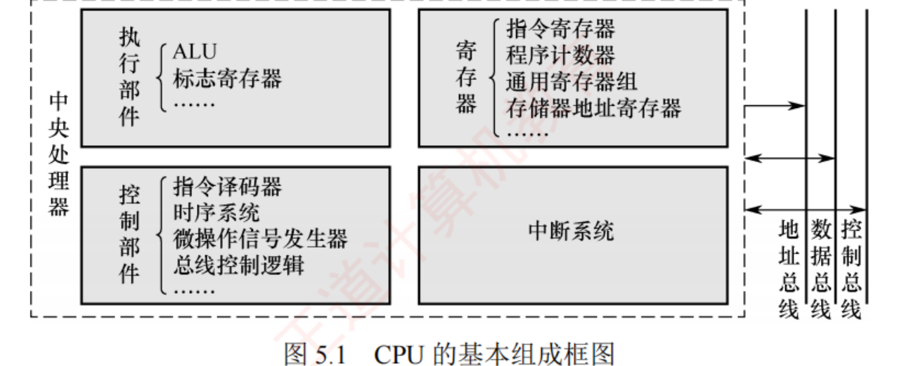
图 5.1（书 p.196） CPU 的基本组成 。虚线框内是一整颗 CPU，横向切成四块：执行部件 （ALU、标志寄存器）、控制部件 （指令译码器、时序系统、微操作信号发生器、总线控制逻辑）、寄存器组 （指令寄存器、程序计数器、通用寄存器组、存储器地址寄存器）、中断系统 。看图只要记住一件事：右侧引出的三条竖线是地址总线 / 数据总线 / 控制总线 ——MAR 挂地址总线、MDR 挂数据总线、CU 挂控制总线 ，这三条挂法直接决定了「PC 和 MAR 的位数由地址总线宽度定」「MDR 的位数由存储字长定」这两个高频考点。
考点追踪：CPU 中各种寄存器的作用与特点（2013、2016、2021）
必记结论 · CPU 的十二个部件（书上 1)–12) 逐条，每一条都是选择题素材）
部件 作用 ⚠️ 考点在哪 PC 程序计数器 存放即将执行的 指令地址；顺序执行时自动递增，增量 = 当前指令所占的字节数 ；转移时更新为目标地址 位数由地址总线宽度决定 ；「自动加 1」的 1 不是 1 字节IR 指令寄存器 暂存当前正在执行 的指令，供 ID 使用 位数 = 指令字长 ；对汇编程序员完全透明 GPRs 通用寄存器组 暂存操作数、中间结果、地址指针，减少访存 位数 = 机器字长 ；可存数据也可存地址 FR 标志寄存器 保存 ALU 运算产生的状态信息（CF/ZF/OF/SF），供条件转移判断 用户只读不可写 ；不需要编号 MAR 存储器地址寄存器 存放当前要访问的主存地址，经地址总线送存储器 位数由地址总线宽度决定 （与 PC 同）MDR 存储器数据寄存器 暂存读出/待写入的数据，起缓冲与同步作用 ，缓解 CPU 与主存速度差 位数 = 存储字长 ；间址周期后里面是操作数地址 ID 指令译码器 分析 IR 中的操作码，识别指令类型，输出译码信号 译码是控制器 的功能 ALU 算术逻辑单元 运算核心；结果送寄存器，状态送 FR 位数 = 机器字长 （2020 真题）时序信号产生部件 以系统时钟为基础，产生周期、节拍、工作脉冲 5.2.2 / 5.4 的地基 操作控制信号形成部件 综合译码信号 + 时序信号 + 状态标志，生成微操作控制信号 5.4 整节就在讲它怎么实现 总线控制逻辑 控制总线传输，对数据与地址信息做缓冲 5.3 单总线结构的仲裁基础 中断机构 处理异常与外部中断请求 5.5 整节
我的补讲 · 「运算器」与「控制器」怎么分家 ——这条线一画，第 08、18、19 题全部秒杀
书上说 ：控制器是计算机中处理指令 的部件，包含程序计数器 。潜台词是 ：教科书里 CPU = 运算器 + 控制器这句老话，分家的判据不是"谁在算"，而是"谁在决定下一步做什么" 。运算器 ：ALU、FR、暂存寄存器、GPRs ——它们只对送进来的数负责，不关心这是第几条指令 ；控制器 ：PC、IR、ID、时序部件、CU ——它们不碰数据，只碰"节奏"和"去向" 。所以能考 Z ：第 08 题问 PC 属于哪个部件，答案是控制器 （很多人凭"计数器 = 会加法 = 运算器"直觉选错）；
第 18 题问「对控制器功能描述最完整的是」，答案必须同时含"译码"和"产生控制信号"两件事 （选 D），只说时序或只说取指的都是子功能。GPRs 是个骑墙的 ：它物理上常被画进运算器（挨着 ALU），但用户可见性上归"程序员可用资源"。考试只要不问它归哪个部件就不会错，问了一律按"运算器"答 。
我的补讲 · 「通用寄存器到底通用在哪」 ——02、14 两题拼起来才是完整答案
书上说 ：通用寄存器供用户程序灵活使用 ，可以存放数据和地址 ，是可编程指定多种功能的寄存器 。潜台词是 ：「通用」这个词回答的是「谁来决定它派什么用场」 ——专用寄存器（IR、MAR、MDR、PC）的用途是硬件写死的 ，
而通用寄存器的用途由程序员用指令临时指定 ：这一条指令里 R1 装地址，下一条里 R1 就可以装数据。所以能考 Z ：「可存放指令」是 IR 、「可存放程序状态字」是 PSWR 、「本身具有计数逻辑与移位逻辑」 说的是专用的计数器/移位寄存器，通用寄存器不一定有这些逻辑 。是错的 ——IR 是专用寄存器，取指阶段由硬件自动写入，指令里根本无法指定"把指令装进 R3" 。一句话：通用寄存器通用在"用途"，不通用在"能顶替专用寄存器"。
我的补讲 · 标志寄存器 FR 的三个特殊之处 （05、15、16、17 四题绑在一起考）
书上说 ：PSWR 用于保留算术、逻辑运算及测试指令的结果状态 ；不需要编号，也不能在指令中直接指定编号来访问 ；用户不能直接修改它的值 。潜台词是 ：FR 和别的寄存器不是一类东西——它是"运算的副产品收集器"，不是"数据的容器" 。三条特殊性都从这一点来：不需要编号 （第 17 题 A 项正确）——全机只有一个，不存在"第几个 FR"的问题，指令不必也无法点名它；用户不能直接写 （第 17 题 C 项就是答案 ）——它的每一位都由 ALU 在运算时自动置位，手动改它等于伪造运算结果 ；但用户能间接读 ——条件转移指令就是在读它 （第 05 题：条件转移所依据的条件来自标志寄存器）。所以能考 Z ：第 15 题问「表示程序和机器运行状态的部件」答 PSWR ；第 16 题问它存什么，答「算术、逻辑运算及测试指令 的结果状态」 ——
四个选项里只有 D 把"测试指令"也算进来了 ，只写"算术运算结果"或"逻辑运算结果"都不全。
知识串联 · 「用户可见 / 不可见」这条线，在四门课里各画过一次
此处 5.1.3 组原口径 ：可见 = GPRs + 基址/变址/SP + PC；只读可见 = FR；不可见 = IR、MAR、MDR、页表基址寄存器。ch4 4.1 ISA 的第 ③ 条规定「程序可访问的寄存器编号、数量和位数」 ——"可见"就是"写进 ISA 这张合同里"的另一种说法 。
判据同样是那句：换个厂家实现，程序还能不能原样跑。 ch3 3.6 页表基址寄存器不可见 ，因为虚拟存储对用户程序透明 ——用户不知道也不该知道自己的页表在哪 。跨科 · 操作系统 "不可见" ≈ "只有内核态能碰" ——PSW 里的特权级位、页表基址寄存器都是特权资源 ；用户态改它们会触发异常 。把三句话连起来：ISA 决定"程序员能看见什么"，特权级决定"看得见的里面哪些能改"，硬件透明度决定"看不见的那些谁在管"。
5.1.3 CPU 中的寄存器
📄 p.197
考点追踪：用户可见寄存器（2010、2015、2021）
分类依据只有一条：「根据汇编语言（或机器语言）程序是否能够直接访问」 分两类。
必记结论 · 用户可见 / 不可见的三分法（2010、2015、2021 三年考同一张表）
类别 成员 判据 ✅ 用户可见 通用寄存器组 GPRs 、专用地址寄存器 （基址寄存器 / 变址寄存器 / 堆栈指针 SP）、程序计数器 PC 能在汇编指令里直接写出来，或能被转移/调用指令间接改写 ◐ 只读型可见 标志寄存器 FR（PSW） 内容由 ALU 自动生成，用户程序不能直接修改其值 ，但条件转移指令要读它 ⟹ 书上称「半透明」 ❌ 用户不可见 IR 、MAR 、MDR 、页表基址寄存器 、各类暂存寄存器仅由 CPU 硬件或 OS 内核在特权模式下使用，程序既不能读也不能写
我的补讲 · PC 的两面性 ——它同时是「可见的」和「不能写的」，这不是矛盾，是两个不同的问题
书上说 ：PC 属于用户可见寄存器；但第 11 题又说 机器指令中不能显式地使用 PC （A 项正确）。潜台词是 ：这两句话回答的不是同一个问题 ——可见 」问的是：程序员能不能控制它的值？ 能——写一条 JMP 1000H，PC 就变成 1000H。不能显式使用 」问的是：能不能像 R0、R1 那样把 PC 当操作数写进指令的地址码字段？ 不能（x86/MIPS 里 PC 不在通用寄存器编号空间内）。所以能考 Z ：2010 真题问「汇编语言程序员可见的是」，PC 必须选（B）；而第 11 题问「关于 PC 的叙述哪个错」，A 项「不能显式使用 PC」是对的 ，不能因为"PC 可见"就把它判错。记法：PC 是"能被指令改，但不能被指令点名"的那一个。
陷阱 · 「完全透明」只有 IR 一个，状态寄存器是半透明 ——这是第 06 题和第 20 题的同一个坑
第 06 题问「对汇编语言程序员完全透明 的是」，答案是 C. 指令寄存器 IR （硬件自动加载，程序员读不到也写不了）。CPU 的状态寄存器对用户是完全透明的 」是错的 ——因为条件转移指令要读它的标志位 ，
书上明说它是「半透明 」的。「透明」的完整清单是 IR / MAR / MDR / 页表基址寄存器；FR 只差一点点，它可读不可写，所以不算透明。
必记结论 · 「位数取决于谁」四连 ——本节最高频的一族题（第 10/12/13 题 + 2016、2020 两道真题）
部件 位数 = 为什么 出处 IR 指令字长 它装的就是一整条指令 12 题、2016 真题 GPRs / ALU 机器字长 机器字长的定义就是「CPU 内部整数运算数据通路的宽度」，通路上的部件必须等宽才能对接 13 题、2020 真题 PC / MAR 地址总线宽度 （按字节编址时）它们要能指向任何一个可寻址单元 9 题 D 项 PC （按字地址时）⌈log₂(主存容量 ÷ 指令字长)⌉ 指令按字边界对齐后，指令地址一定是 4 的倍数，低 2 位恒为 0 ⟹ 省掉不存 10 题、2016 真题 MDR 存储字长 一次访存搬多少位，它就要接多少位 ch3 已讲
⚠️
反面（2020 真题的干扰项） ：
浮点寄存器不必等于机器字长 ——浮点格式（32/64/80 位）自己说了算；
IR 也不必等于机器字长 ——指令字长可以是机器字长的一半或两倍。
我的补讲 · 2016 真题（PC 30 位 / IR 32 位）的完整算法 ，一次算清就再也不会犯
题 ：主存 4GB、字长 32 位、按字节编址、32 位定长指令、指令按字边界对齐存放 ，问 PC 和 IR 至少多少位。书上说 ：可以用 30 位的字地址 来表示指令地址，取指令时将 PC 值左移 2 位 到主存中取指令。潜台词是 ：题干那句「按字边界对齐 」是整道题的钥匙，它保证了所有指令地址的低 2 位恒为 00 ——
既然恒为 0，存它就是浪费，于是 PC 只存高 30 位，用的时候补两个 0（左移 2 位）即可。🐍 复算 ：4GB = 2³² B；32 位指令 = 4 B ⟹ 最多装 2³²/2² = 2³⁰ 条指令 ⟹ PC ≥ 30 位 ；IR = 指令字长 = 32 位 ⟹ 选 B（30，32） 。与书答一致。 所以能考 Z ：题干只要出现"按字边界对齐"+"问 PC 最少多少位"，就一定是要你除以指令长度再取对数 ；
反之若题干没说对齐，PC 就得按字节地址算满 32 位 。这一句话之差就是 A/B/C/D 四个选项的全部区别。
知识串联 · 「按字边界对齐 ⟹ 低位恒 0 ⟹ 省掉不存」这个套路，你在四个地方见过同一招
ch2 2.3 数据对齐存放 ：半字地址末位为 0、字地址末两位为 0 ——同一个前提。ch3 3.5 Cache 地址划分 ：块内地址若按字编址，低位同样被"折叠"掉；主存块号本身就是"地址 ÷ 块大小" 。ch4 4.2 相对寻址的偏移量按指令条数计 （2010 综合真题）——偏移量乘 2 或乘 4 再加，与本题的"左移 2 位"是同一个动作。本章 5.6 2014 综 02 的分支目标地址 = (PC)+4+OFFSET×4 ——那个 ×4 就是这里的左移 2 位。我复算时把它代回真题给的机器码，正好命中 08048100H 这个 loop 标号。 一句话总纲：只要地址的低 k 位被硬件保证恒为 0，就一定有人把它省下来——省在 PC 里叫"字地址"，省在 Cache 里叫"块内偏移"，省在指令里叫"偏移量按条数计"。
背景 · 考试不碰
书上 5.1.2 结尾对总线控制逻辑 的那两行描述（「实现对总线传输的控制，包括对数据和地址信息的缓冲与控制」）
以及时序信号产生部件 中「经整形和分频后形成节拍信号」的电路细节，历年一道题都没考过 ，
知道"CPU 里有这么个东西"即可，不必记它的内部实现 。真正要考的总线内容全在第 6 章 。
我的补讲 · 「指令总是根据 PC 从主存读出」 ——第 07 题，一个绕了个弯的必对结论
书上说 ：当前指令正在执行时，PC 已经是下一条指令的地址 ；若遇到无条件转移指令，只需简单地用转移地址覆盖 PC 的内容即可，最终结果还是根据 PC 从主存中读出 。潜台词是 ：这题的四个选项在诱导你想「转移的时候不就是根据转移指令给的地址取吗 」。错在哪 ——
转移指令并不是"绕过 PC 直接去取"，而是"先把目标地址写进 PC，再由 PC 去取" 。
硬件上根本没有第二条从别处取指的通路 ：取指电路的地址输入端只接了 PC 一个源（回看图 5.6 与图 5.7）。所以能考 Z ：答案是 A「总是根据程序计数器」 。同一条推理还能解释另一件事 ——
中断响应时也是"把中断服务程序入口地址送 PC"，而不是"直接跳过去" （见图 5.2 最下面那个框写的就是「中断入口 → PC」）。记法：任何改变执行流的动作，最后一步都是"改写 PC"。PC 是取指的唯一入口，没有例外。
知识串联 · MAR / MDR 这一对，你在 ch3 已经见过一次了
ch3 3.2 主存与 CPU 的连接 那一节：MAR 的位数决定可寻址范围、MDR 的位数等于存储字长 ——本章 5.1 只是把同一对寄存器画进了 CPU 框图里 。5.3.4 微操作序列里"访存前必先送 MAR、数据进出必经 MDR"这两条硬规矩 ，就是这对寄存器存在的全部理由。5.3 综合题 MDR 有内外两套控制信号（MDRin/MDRout 对内部总线，MDRinE/MDRoutE 对外部数据总线） ——因为它同时挂在两条总线上，是 CPU 与外界之间唯一的数据闸口 。把 MDR 想成"海关"：进出都要过它，而且进出各有一个通道。
5.2 指令执行过程
📄 p.201
5.2.1 指令执行的一般流程
考点追踪：指令执行的过程（2011）
计算机执行程序的本质，是控制器依据指令序列协调各功能部件协同工作 的过程。CPU 启动后，将持续循环执行「取指令」与「执行指令」两个基本操作。每条指令执行完毕后，还要进行中断与异常检测 ，以确保系统能够及时响应外部事件或内部异常。
取指 ：CPU 以 PC 的当前值为地址，从主存中取出下一条指令；与此同时，PC 被自动更新为下一条顺序指令的地址 （增量 = 当前指令的长度）。
译码与执行 ：对指令译码、识别类型。为简化分析分两类——分支指令 在执行阶段 判断条件，满足则把 PC 改为目标地址；非分支指令 依次完成取操作数、执行运算、写回结果。
中断与异常检测 （无论哪类指令，执行完成后都要做 ）：未检测到 ⟹ 继续以更新后的 PC 取指；检测到 ⟹ 进入中断响应阶段 ：屏蔽可屏蔽中断、保存返回地址 、把 PC 设为中断服务程序入口，随后转去执行服务程序。
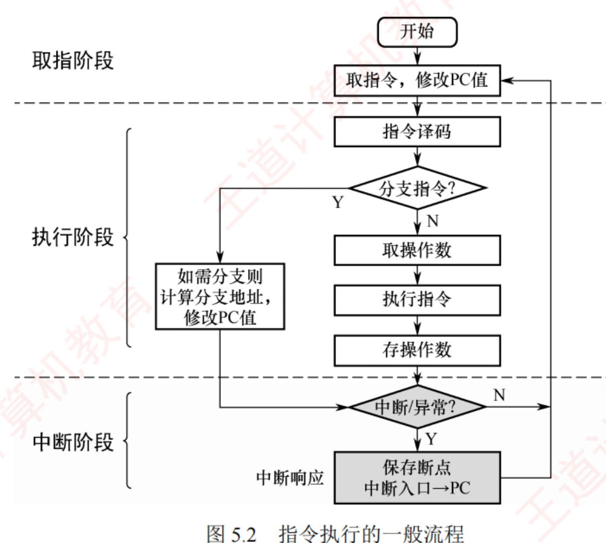
图 5.2（书 p.202） 指令执行的一般流程 。竖着看是三段：取指阶段 〔取指令，同时修改 PC〕→ 执行阶段 〔译码 → 判"是不是分支指令" → 是则算分支地址改 PC，否则取操作数 → 执行 → 存操作数〕→ 中断阶段 〔判"有没有中断/异常" → 无则回到取指，有则保存断点、把中断入口送 PC〕。这张图要记住的是两个菱形判断框的位置 ："分支?"在执行阶段中间 （所以分支指令的 PC 在一条指令内会被改两次）、"中断?"在整条指令的最末尾 （所以中断只在指令边界响应，不会打断半条指令）——这两句话分别是第 03 题和 2011 真题 D 项的全部内容 。
我的补讲 · 「一条无条件转移指令，PC 被改几次？」 ——把图 5.2 的两个箭头数一遍就有答案
书上说 ：首先在取指周期结束后 PC 值自动加 1；在执行周期中 PC 值修改为要转移到的地址 。潜台词是 ：很多人只数到 1 次，因为直觉里"转移指令嘛，把 PC 一改就完事"。但硬件是不会"预知"这是转移指令的 ——
取指阶段结束时它还没译码，所以照例先把 PC 自增一次 ；等到执行阶段译码完了才发现要跳，于是第二次改写 PC 。所以能考 Z ：第 03 题答案是 B（2 次） 。同一条逻辑还派生出两个坑 ：
① 空操作指令 NOP 的 PC 也会自增 （2011 真题 C 项说"任何寄存器内容都不会被改变"，错就错在 PC 变了 ）；
② 条件转移指令若条件不成立，PC 只被改 1 次 （第 09 题 C 项说"执行转移指令时 PC 的值总是修改为目标地址"，错在"总是" ）。记法：PC 的自增发生在取指周期，与指令是什么无关；第二次改写才看指令。
陷阱 · 「取指操作是控制器固有功能」与「所有指令的取指操作都相同」——一对孪生干扰项，一真一假
✅ 对的那句 （第 05 题 C、第 06 题 A）：取指操作是控制器固有的功能，自动进行，不需要在操作码控制下完成 。
理由 ：取指发生在译码之前，此时 CPU 还不知道这是什么指令 ——若取指要靠操作码控制，就成了"先译码再决定要不要取指"的死循环。
⟹ 第 05 题 B 项「为了进行取指操作，控制器需要得到相应的指令」是错的 。❌ 错的那句 （第 06 题 B）：「所有指令的取指操作都是相同的」——错 。
理由 ：双字指令、三字指令与单字指令的取指操作不同 （要访存的次数不一样）。✅ 但加一个前提就对了 （第 06 题 C）：「在指令长度相同的情况下，所有指令的取指操作是相同的」——对 。B 和 C 只差"在指令长度相同的情况下"这半句，一错一对，是本节最刁的一组。
而它同时也是 5.6 的伏笔——正因为变长指令的取指不一样，变长指令才难流水。
知识串联 · 「主频 = 时钟周期的倒数」这条式子，是 ch1 与 ch5 共用的接口
ch1 1.3 CPU 执行时间 = 指令条数 × CPI × 时钟周期 ；MIPS = 主频 ÷ (CPI × 10⁶) 。此处 5.2.2 时钟周期由"相邻状态单元间组合逻辑的最大传播延迟"决定 ⟹ ch1 那个乘式里最后一项的物理来源在这里 。5.4 综 01 「主频 200MHz、每指令 2.5 个 CPU 周期、每 CPU 周期 2 个主频周期 ⟹ 40 MIPS」 ——
那道题看着像 5.4 的题，公式却全是 ch1 的 。🐍 复算：2 × 2.5 × 5ns = 25ns/条 ⟹ 40 MIPS 。5.6 2013 真题「主频 1.03GHz、4 段流水、100 条指令 ⟹ 吞吐率 1.0×10⁹ 条/秒」 ——还是同一个接口 。凡是题目里出现"主频""MHz""GHz"，第一步一律先把它翻成"时钟周期 = 1/主频"，之后所有计算都在时钟周期这个单位里做。
5.2.2 CPU 的时序控制
必记结论 · 时序控制的三句话
① 时钟信号 是时序控制的基础，由机器内部的脉冲源（晶振） 产生，经整形和分频 后形成全机同步使用的节拍信号 。时钟周期的长度，由「数据通路中相邻状态单元之间组合逻辑的最大传播延迟」决定 ——确保信号在下一个时钟边沿到来前稳定。时钟周期是计算机内部最基本、最小的时间单位 （第 01 题）：指令周期、存取周期、总线周期都由若干时钟周期组成。
知识串联 · 第 ② 条不是一句空话，它是本章三处计算题的共同物理依据
5.2.4 单周期 CPU 的时钟周期由"执行时间最长的那条指令"决定 ——因为那条指令的组合逻辑链最长。5.4 多周期 CPU 的时钟周期以"最复杂的那个阶段"为准 ——粒度从"整条指令"细到"一个阶段"，所以周期短了。5.6 流水线的时钟周期 = max{各段延迟} + 段间寄存器延迟 ——粒度又细到"一段"，所以周期更短。
2018 真题（选 27）是唯一给出段寄存器延时的真题：max 80ps + 20ps = 100ps ；
而 2009 真题（选 19）题干写明"忽略流水寄存器时间"，那 20ps 就不加 ——加不加全看题干那半句话，这是本章最容易丢的 2 分。 一条线看下来：从单周期到多周期到流水线，做的是同一件事——把"最大传播延迟"的统计粒度不断切细，好让时钟频率不断提高。
背景 · 考试不碰（但要知道"为什么现在的书不这么写了"）
早期 计算机采用「机器周期 — 节拍 — 脉冲 」三级时序系统 ：一个指令周期划分为若干机器周期（取指、取操作数、执行、中断响应），
每个机器周期又细分为多个节拍，必要时在节拍内插入工作脉冲；不同指令所需的机器周期数和节拍数均可不同。现代 处理器：随着 Cache 广泛应用和集成度提升，已大幅简化时序结构，「机器周期」这一概念逐渐淡化 ——
CPU 内部由统一的系统时钟直接驱动，一个时钟周期即对应一个节拍 。为什么划为背景 ：三级时序的层级名词 统考不直接考。但别整段跳过 ——
5.4 讲硬布线控制器时会用到「节拍 」这个词来编排微操作，那时你需要知道"节拍 ≈ 一个时钟周期"就够了。
我的补讲 · 四种"周期"一次分清 （第 01 题的四个选项，其实是四个不同尺度）
书上说 ：
时钟周期是计算机内部最基本、最小的时间单位 。
潜台词是 ：第 01 题的四个选项
不是并列关系，而是包含关系 ——把它们按尺度从小到大排一遍，答案自明：
周期 是什么 大约多长 时钟周期 （节拍）CPU 内部最基本、最小的时间单位 ；主频的倒数基准，1 总线周期 总线完成一次数据传输所需时间 若干个时钟周期 存取周期 访问一次存储器（读或写）的时间，含恢复时间 若干个时钟周期（本章范例取 5 个） 指令周期 取出并执行完一条指令的全部 时间 最大 ，可含多个上述周期
所以能考 Z ：
问"最小"答时钟周期（第 01 题选 A） ；
问"指令周期是什么"答"取指时间 + 执行时间"（第 02 题选 C） ——
⚠️
第 02 题的 A、B 各只说了一半 （只取指或只执行），
而"间址周期"不是必需的，所以定义里不提它 。
5.2.3 指令周期的基本概念
📄 p.202
指令周期 ＝ 一条指令从主存读出到执行完成所经历的全部时间 。它有两种划分方式：
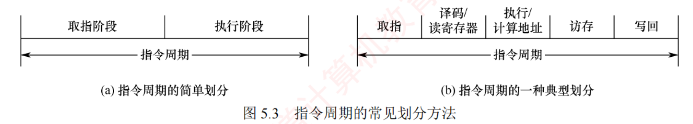
图 5.3（书 p.202） 指令周期的两种划分 。(a) 简单划分 ：取指阶段 + 执行阶段，两段。(b) 典型划分 ：取指 IF → 译码/读寄存器 ID → 执行/计算地址 EX → 访存 MEM → 写回 WB ，五段。(b) 这五个字母务必现在就背下来 ——它就是 5.6 节五段流水线的段划分 ，整节流水线的时空图、冒险分析、真题全部建立在这五个字母上。换句话说：5.2.3 这一页是 5.6 那 20 页的地基，别当概念课划过去。
必记结论 · 五个阶段各做什么（这张表读三遍，5.6 就省一半力气 ）
阶段 做什么 ⚠️ 容易忽略的细节 IF 取指 按 PC 从主存/指令 Cache 读指令送 IR，同时更新 PC 若为变长指令，需在取指阶段初步解析格式才能确定长度 ——这正是变长指令难流水的根源ID 译码/读寄存器 译码、识别操作码与寻址方式，从寄存器堆读操作数 立即数也在本阶段提取 ；还可能组合基址寄存器与偏移量EX 执行/计算地址 算逻指令由 ALU 运算；访存类指令在此算有效地址 ；分支指令算目标地址并判断是否转移 运算状态标志（ZF/CF 等）在此阶段生成并暂存 MEM 访存 通过数据 Cache 或主存完成读/写 寄存器-寄存器类指令不涉及此阶段 （但流水线里仍要占一拍空走）WB 写回 把结果写回寄存器堆 结果可能来自 EX 的 ALU 输出，也可能来自 MEM 读出的数据
⚠️ 书上补充：指令周期的具体划分
因处理器架构而异 ，上述五段仅为一种典型示例；实际系统还可能包含
中断响应阶段 。
必记结论 · 定长 vs 变长指令周期
定长指令周期 ：所有指令的周期长度相同。变长指令周期 ：不同指令包含的时钟周期数可变。现代计算机普遍采用基于时钟信号定时的变长指令周期 ，以提高执行效率。
我的补讲 · 「乘法指令和加法指令的指令周期总是一样长吗」 ——这题的答案取决于你在说哪种 CPU
书上说 ：乘法指令通常比加法指令复杂，若是多周期 CPU，则乘法指令通常需要更多的时钟周期 。潜台词是 ：这句话里的「若是多周期 CPU 」不是废话，而是整道题的开关 ——单周期 CPU 里，所有指令的指令周期都是一个时钟周期，当然一样长 （代价是这个周期被最慢的指令撑得很长）；多周期 CPU 里，周期数按指令复杂度分配，乘法比加法长 ；流水线 CPU 里，单条指令的延迟仍是若干拍，但吞吐是一拍一条 。所以能考 Z ：第 07 题 B 项「乘法和加法的指令周期总是一样长」错在"总是" （默认语境是多周期）；
而同题 D 项「单周期 CPU 中的指令周期就是一个时钟周期 」是对的 ——同一张卷子里，两个看似矛盾的说法各自成立，区别只在有没有"单周期"三个字。
我的补讲 · 「多周期 CPU 是周期数可变还是周期长度可变」 ——第 08 题，两个"可变"只能选一个
书上说 ：多周期 CPU 每个阶段在一个时钟周期内完成 ，时钟周期以最复杂的阶段所花的时间为准 ，阶段划分原则是尽量分成大致相等的若干阶段 ；不同指令所含的时钟周期数可以不同 。潜台词是 ：时钟是全机统一的一个方波，它的周期长度是硬件设计时定死的，运行中不可能"这条指令跑快点、那条跑慢点" 。
可变的只能是"用几个周期"，绝不可能是"每个周期多长"。 所以能考 Z ：第 08 题答案 C（周期数可变、周期长度均匀） 。
四个选项其实是 2×2 的组合，排除法一秒完成——凡是出现"时钟周期长度可变"的选项一律划掉 （B、D 出局），
再排除"周期数相同"（A 出局，那是单周期的特征）。顺带解决第 09 题 A 项 ：「取指令和取操作数阶段一定需要通过总线访问主存」错 ——取操作数可能只碰寄存器 ；
B 项「译码阶段计算操作数地址」错 ——地址计算属于执行阶段 （回看 5.2.3 的五段表，EX 段才算有效地址）；
C 项「所有指令执行阶段必然访存或访 I/O」错 。只有 D 是对的：取指与译码是每条指令必做，取数或写结果不一定访存。
5.2.4 处理器指令执行模型
📄 p.203
考点追踪：单周期和多周期 CPU 的 CPI（2016、2020、2025 ）
必记结论 · 三种处理器模型对照表 （三年三考，2025 刚考过，本节唯一必背的一张表 ）
模型 每条指令的时间 CPI 时钟周期长度由谁决定 关键短板 单周期 所有指令相同 CPI = 1 由执行时间最长的那条指令决定 短指令也占满整个周期 ⟹ 硬件在大部分时间里空闲 多周期 按指令类型动态分配周期数 各指令不同，平均 CPI > 1 以最复杂的那个阶段 所花时间为准 指令之间仍是串行执行 ，无法重叠 流水线 单条指令延迟并未减少 （仍需多拍）理想 CPI = 1 （指吞吐 ）max{各段延迟} + 段寄存器延迟 三类冒险会插入停顿 ⟹ 实际 CPI > 1
⚠️
两句必背对照 ：单周期「
CPI = 1，但时钟周期很长 」；流水线「
CPI 理想为 1，且时钟周期短；单条指令的执行延迟并未减少，提高的是整体吞吐率 」。
我的补讲 · 「单周期 CPI = 1」和「流水线 CPI = 1」是完全不同的两个 1 ——分不清这一点，2016/2020/2025 三道真题会连错三次
书上说 ：流水线靠每个时钟周期启动一条新指令、多条指令重叠执行来提高吞吐率 ，而单条指令的执行延迟并未减少 。潜台词是 ：CPI 这个指标本身就有歧义 ，它衡量的是「平均每条指令占用几个时钟周期」 ，而"占用"在两种机器里含义不同——单周期的 1 ：一条指令真的只花了 1 个时钟周期 ，从头到尾独占硬件。代价是这个周期长得离谱 （要容下最慢的 LOAD）。流水线的 1 ：一条指令实际花了 5 个时钟周期 （IF/ID/EX/MEM/WB），但因为有 5 条指令同时在跑，平均每拍出一条 。
它省的不是"一条指令的时间"，而是"等待的时间"。 所以能考 Z ：凡是问「流水线能不能缩短单条指令的执行时间 」，答案永远是不能 （甚至因为加了段寄存器，单条指令的延迟还略微变长了 ）；
问「流水线提高了什么 」，答案永远是吞吐率 。一个能自查的换算 ：单周期时钟周期 = 5 段之和（设各 1ns ⟹ 5ns），流水线时钟周期 = max 段 = 1ns。
100 条指令：单周期 100×5 = 500ns；流水线 (5 + 99×1) = 104ns。 快了约 4.8 倍，但第一条指令仍然花了 5ns，一纳秒没省。
知识串联 · 「流水线只提吞吐不减延迟」这句话，本章会说三遍 ——这是本章"同一结论三处出现"的头号案例
此处 5.2.4 第一次出现 ，以三模型对照表的一行带过。5.6.2 第二次 ，变成流水线性能指标里的正式结论，并配上吞吐率 / 加速比 / 效率 三个公式。5.8 本章小结 第三次 ，作为思考题 ④「流水线相对传统体系结构的优势是什么」的标准答案。跨章 · ch1 1.3 CPU 执行时间 = 指令条数 × CPI × 时钟周期 ——三模型的差别全在这个乘式的后两项上：单周期压 CPI（=1）但撑大时钟周期；多周期缩时钟周期但抬高 CPI；流水线两头都要（CPI≈1 且时钟周期短） 。用这个乘式看三模型，比死记表格牢得多。 后面两处我不会再重复讲，只会绿块指回这里。
我的补讲 · 「CPU 靠什么区分指令和数据」 ——2009 真题，也是书上四个思考题里的第 ① 题
书上说 ：CPU 根据指令周期的不同阶段 来区分——取指阶段取出的是指令，执行阶段取出的是数据 。潜台词是 ：这道题的四个选项里，A「指令操作码的译码结果」是最毒的干扰项 ，因为它听起来最"技术"。
但它犯的是因果倒置 ——CPU 必须先确定"这玩意儿是指令"，才会把它送去译码 ；
如果要靠译码结果才知道是不是指令，那就成了"先译码再判断该不该译码"的死循环。所以能考 Z ：2009 真题选 C 。书上把这个考点提炼成"时间和空间两条线" ：
时间上 ——取指周期取的是指令、执行周期取的是数据；空间上 ——从内存取到 IR 的是指令，取到 运算器/GPRs 的是数据。
问"如何区分"答时间，问"取到哪儿"答空间。
必记结论 · 5.1 + 5.2 八条题型总纲 （这两节 35 道题全部落在这八条上，考前只看这一块）
# 结论 对应题 ① 位数四连 ：IR = 指令字长 · GPRs = ALU = 机器字长 · PC = MAR = 地址总线宽度 · PC（字地址）= ⌈log₂(容量÷指令字长)⌉10/12/13、2016、2020 ② 可见性三分 ：可见 = GPRs + 基址/变址/SP + PC；只读可见 = FR；完全透明只有 IR、MAR、MDR、页表基址寄存器 06/20、2010 ③ PC 在一条指令内被改几次 ：取指周期自增 1 次；转移成功时执行周期再改 1 次 ⟹ 无条件转移共 2 次 03/09/11 ④ 地址译码器不在 CPU 里 （属于存储器）19/20 ⑤ 区分指令与数据靠"指令周期的不同阶段" ，不是靠译码结果（因果倒置）2009 ⑥ 三模型 CPI ：单周期 CPI=1 周期长 · 多周期 CPI>1 且周期数可变、周期长度均匀 · 流水线理想 CPI=1 只提吞吐07/08、2016/2020/2025 ⑦ 取指操作是控制器固有功能、自动进行 ，不受操作码控制；但指令长度不同则取指操作可能不同 （一对孪生干扰项）05/06 ⑧ 间址周期结束后 MDR 里是"操作数地址" ——间址周期的作用就是取有效地址21
陷阱 · 2011 真题（选 11）四个选项逐个拆，这道题把 5.1+5.2 的坑一次踩全了
题干前提：不采用 Cache、不采用指令预取、机器处于开中断状态 。A. 每个指令周期中 CPU 都至少访存一次 ✅ ——没有 Cache 也没有预取，取指本身就必须访存 。B. 每个指令周期一定大于或等于一个 CPU 时钟周期 ✅ ——时钟周期是最小时间单位。C. 空操作指令的指令周期中任何寄存器的内容都不会被改变 ❌ （答案） ——
取指结束后 PC 一定自增 ，而且 IR 也被写入了这条 NOP 。"什么都不做"的指令，也改了两个寄存器。 D. 当前程序在每条指令执行结束时都可能被外部中断打断 ✅ ——开中断 + 中断只在指令边界响应（见图 5.2 的第二个菱形）。题干那三个前提每一个都在为某个选项服务 ：「不用 Cache 和预取」⟹ 保 A；「开中断」⟹ 保 D。
读到这种"前提写了一长串"的题，先把每个前提对应到哪个选项，答案往往就在没被前提保护的那一个上。
5.3 数据通路的功能和基本结构
📄 p.206
陷阱 · 书上这一节的节号印重复了 ——按书目录找会找不到，先记住正确编号
🔍 我在读这 22 页时抓到的书误（dpi=340 定点复核坐实） ：p.208「5.3.4 单总线结构的数据通路」与 p.210「5.3.4 专用结构的数据通路」用了同一个节号 。5.3.5 ，习题（p.213）应为 5.3.6 ，答案（p.221）应为 5.3.7 。本页一律按正确编号写 ，你按书上目录翻的时候心里有数即可。另一处 ：p.214 单选 03 的选项 B 印作「Ⅱ、Ⅲ、Ⅴ」，而题干只列了 Ⅰ～Ⅳ 四个说法 （根本没有 Ⅴ）。应为「Ⅱ、Ⅲ、Ⅳ」，正确答案 C 不受影响 。
5.3.1 数据通路的功能
不论 CPU 的内部结构多么复杂，都可视为由数据通路（Data Path） 和控制部件（Control Unit） 两大部分组成。
必记结论 · 数据通路的定义（2021、2023 两道真题就考这一句）
数据通路 ＝ 数据在指令执行过程中所经过的路径 ＋ 路径上涉及的硬件部件。 数据从何处开始、中间经过哪些部件、最终被传送到哪里 ；整个数据通路由控制部件控制 ——后者根据每条指令的功能生成相应的控制信号，驱动数据通路完成指定操作。
我的补讲 · 「什么算数据通路、什么不算」只有一条判据 ——2021 真题（选 17）就死在这一条上
书上说 ：ALU、通用寄存器、状态寄存器、Cache、MMU、浮点运算逻辑、异常和中断处理逻辑等，都是指令执行过程中数据流经的部件，都属于数据通路的一部分 。潜台词是 ：这份清单长得吓人，但判据只有一句——「数据本身走不走过它」 。全在数据通路里 ；控制信号 是「指挥棒」，它不携带数据、也不被数据经过 ⟹ 控制部件不属于数据通路 。所以能考 Z ：2021 真题的 C 项说「数据通路不 包含用于异常事件检测及响应的电路」，这是错的 （答案选 C）——
异常检测电路要读运算结果和标志 ，数据实实在在流过它。很多人凭"异常听起来像控制"就放过了这个选项。 记法：会碰数据的都是数据通路，只发号令的才是控制部件。清单不用背，问一句"数据流过它没有"就够了。
知识串联 · 数据通路这个词，其实 ch1 就给过定义了 ——两处口径必须能对上
ch1 1.3 「机器字长 = CPU 内部用于整数运算的数据通路的宽度」 ——那时你只是背了这句话，现在才知道"数据通路"指的是什么 。5.1 2020 真题 「ALU 位数 = 通用寄存器宽度 = 机器字长」 的理由就在这：它们都在同一条数据通路上，必须等宽才能对接 。此处 5.3.1 数据通路的完整清单 （ALU、通用寄存器、状态寄存器、Cache、MMU、浮点逻辑、异常处理逻辑）——2021 与 2017 两道真题考的是同一张清单 。ch3 3.6 MMU 也在数据通路里 ——虚拟地址要经过它才变成物理地址，数据实实在在流过它 。很多人不知道 MMU 算数据通路，就是因为没把"数据流过没有"这条判据用上。 ch1 那句定义、5.1 的位数四连、5.3 的部件清单，是同一件事在三个深度上的三次出现。
我的补讲 · 「三个位宽速算」一次记全 ——本节最容易拿的送分点
器件 速算式 真题现场 译码器 n 位输入 ⟹ 2ⁿ 个互斥输出 （正向）5.4 的操作码译码器；主存片选 多路选择器 MUX N 路输入 ⟹ 控制信号 ⌈log₂N⌉ 位 2015 真题的 MUXop ALU / 移位器 支持 N 种操作 ⟹ 操作控制信号 ⌈log₂N⌉ 位 2015 真题：ALU 7 种 ⟹ 3 位；SR 3 种 ⟹ 2 位 寄存器编号 k 位编号 ⟹ 最多 2ᵏ 个寄存器 2022 真题：rs/rd 各 4 位 ⟹ 16 个
潜台词是 ：
这四条其实是同一个式子的两个方向 ——
"能编出多少种" ↔ "需要多少位" ，
⌈log₂⌉ 和 2ⁿ 互为反函数 。
⚠️
唯一的例外在 5.4 ：
字段直接编码的操作控制字段要写 ⌈log₂(N+1)⌉ ，
因为要留一个"本字段无操作"的编码 。
本节（5.3）的这四条都不 加那个 +1 ——
ALU 的 7 种操作里"直送 A（mova）"本身就是一种操作，不需要额外的"什么都不做"编码。
加不加 1，是 5.3 与 5.4 之间最容易串台的一处。
我的补讲 · 「部件内总线结构」是个不存在的名词 （第 01 题，靠"清点分类"就能选对）
书上说 ：对 CPU 而言，数据通路的基本结构分为总线结构和专用数据通路结构，其中总线结构又分为单总线结构、双总线结构、多总线结构 。潜台词是 ：这份分类是"二分再细分"的树，一共只有四个叶子 ——单总线 / 双总线 / 多总线 / 专用 。
第 01 题的四个选项里，A 单总线、B 多总线、D 专用 都在树上，只有 C「部件内总线结构」是造出来的 。所以能考 Z ：这类"下列不属于……的是"的题，最快的解法是先在草稿上把正确分类默写出来，再逐个对 ——
比逐个琢磨"这个听起来对不对"可靠得多 。顺带澄清一个真实存在的近义词 ：「CPU 内部总线（片内总线）」是真的 ，本章从头到尾都在用它；
书上还特意加了注「此总线为片内总线，不同于系统总线」 ——系统总线是第 6 章的内容 。"部件内总线"和"片内总线"只差两个字，一真一假。
5.3.2 数据通路的组成
考点追踪：数据通路的组成部件（2017、2021、2025） · 三态门、多路选择器的应用（2015、2023、2024）
必记结论 · 操作元件 vs 状态元件 （2023 真题原题，一张表定生死）
组合逻辑元件（操作元件） 时序逻辑元件（状态元件） 输出取决于 仅由当前输入决定，不依赖历史状态 还依赖电路的历史状态 有无记忆单元 无 必然有 受不受时钟控制 不受 必须在时钟同步下工作 有无反馈通路 无输出到输入的反馈 有 成员 加法器 · ALU · 译码器 · 多路选择器 MUX · 三态门 各类寄存器与存储器 ：GPRs、PC 、状态寄存器、移位寄存器、暂存/锁存寄存器
⚠️
2023 真题的干扰项就是 PC ——「程序计数器」听起来像"计数 = 会加法 = 组合逻辑"，
但它存着地址、受时钟控制，是状态元件 。答案是「仅 ALU 与 MUX」（选 B）。
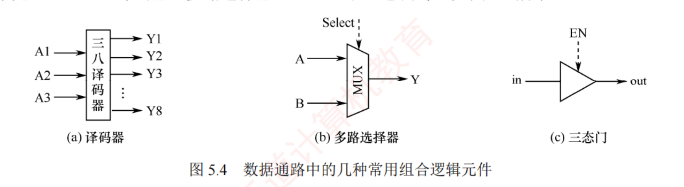
图 5.4（书 p.206） 三种常用的组合逻辑元件 。(a) 3-8 译码器 ：n 位输入 ⟹ 2ⁿ 个互斥输出 （同一时刻只有一根线为 1），用于操作码译码或地址译码。(b) 多路选择器 MUX ：由 Select 信号从多路输入中挑一路送出，N 路输入 ⟹ 控制信号需 ⌈log₂N⌉ 位 。(c) 三态门 ：受控的总线开关 ——EN = 1 打开，out = in；EN = 0 输出呈高阻态 ，所连寄存器与总线彻底断开。这三个元件的"位宽速算"每年都在考 ：2015 真题问 ALUop 和 SRop 各几位（⌈log₂7⌉=3、⌈log₂3⌉=2），2022 真题问 rs/rd 各 4 位能寻址几个寄存器（2⁴=16）。
我的补讲 · 三态门为什么是"总线上必须有的那个东西" ——理解了这一句，5.3 的所有连线图都不用死记
书上说 ：能输出到内部总线的部件均通过一个三态门与内部总线相连 ，EN = 0 时输出端呈高阻态 。潜台词是 ：总线是一组被所有部件共用的金属线 。如果两个部件同时往上面推电压，一个推 0V 一个推 5V，
结果既不是 0 也不是 1，而是一条短路的冒烟通路 。所以硬件必须提供一种「我现在不说话，也不挡别人说话 」的状态——
这就是"高阻态"，而实现它的器件就是三态门 。普通的与非门只有 0 和 1 两种输出，没法"闭嘴" ，所以不行。所以能考 Z ：第 05 题问「CPU 控制某器件实现部件与总线的连接或断开，该器件是什么」，答案必然是 三态门 （不是触发器、不是 MUX、不是与非门）；
2015 真题第 3 问问「SRout 控制的是什么部件」，答案也是三态门 。MUX 与三态门的分工别搞混 ：MUX 是"多路进、一路出"的选择器（在部件输入端选数据来源） ；
三态门是"一路进、一路出或不出"的开关（在部件输出端决定要不要上总线） 。一个管"选谁"，一个管"通不通"。
必记结论 · ⭐ 数据通路的最小时钟周期公式 （本章第一条计算公式，已进模板手册 ）
数据通路可抽象为
时序元件与组合元件交替连接 ：「…… —
状态元件 A —
操作元件（组合逻辑） —
状态元件 B — ……」。
要让 B 在下一个时钟沿正确采到值，一个周期内必须依次容下三段时间：
T时钟周期 ≥ Tclk_to_q ＋ Tmax ＋ Tsetup
项 含义 Tclk_to_q 寄存器延迟 ：从时钟上升沿开始，到寄存器 A 的输出稳定所需的时间Tmax 关键路径延迟 ：A 的输出经组合逻辑处理，所有输出信号达到稳定所需的最长 时间 ⟸ 主控项 Tsetup 建立时间 ：为让 B 能在下一个时钟沿正确采样，其输入必须提前 Tsetup 稳定下来
⚠️
其中 Tmax 是关键因素 ⟹
缩短组合逻辑的关键路径延迟，是提升 CPU 主频的主要手段 。
（图 5.5 里还标了
hold（保持时间） ，与 setup 成对分列时钟沿两侧，
统考未直接考过 hold 。）
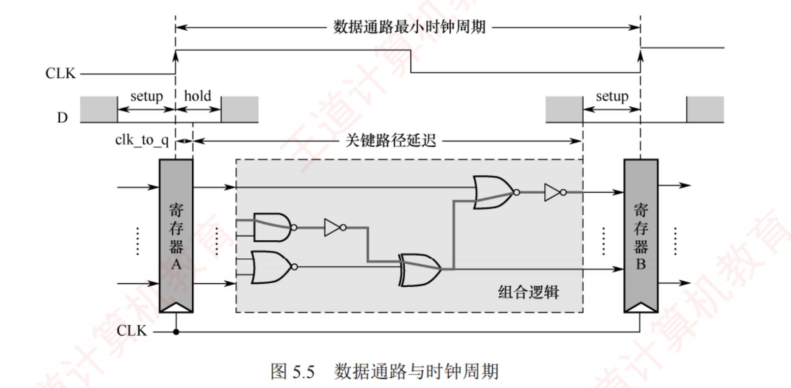
图 5.5（书 p.207） 数据通路与时钟周期 。上半是电路（寄存器 A → 组合逻辑 → 寄存器 B），下半是时序波形，把 clk_to_q / 关键路径延迟 / setup / hold 四段时间标在同一条时间轴上。这张图是 2019 真题（选 16）C 项「时钟周期以相邻状态单元间组合逻辑电路的最大延迟为基准确定」的直接依据 ——那句话不是文字游戏，就是在读这张图。
知识串联 · 「时钟周期 = 关键路径延迟」这一条物理约束，在本章会以四副面孔出现
此处 5.3.2 原始形态 ：T ≥ Tclk_to_q + Tmax + Tsetup ，讲的是相邻两个寄存器之间 。5.3.3 单周期 时钟周期由最慢的那条指令决定 ——因为那条指令的组合逻辑链最长（通常是 LOAD：取指→译码→算地址→访存→写回全串在一个周期里）。5.4 多周期 时钟周期以最复杂的那个阶段为准 ——把长链切成几段，每段各自满足上面那个不等式，于是周期短了、CPI 大了 。5.6 流水线 时钟周期 = max{各段延迟} + 段间寄存器延迟 ——段寄存器的开销就是这里的 Tclk_to_q + Tsetup 。
2018 真题（选 27）把它显式给出来了：max 段 80ps + 段寄存器 20ps = 100ps 。四副面孔是同一张脸 ：把长链不断切短，好让分母（时钟周期）变小 ——这就是从单周期走到流水线的全部动机。
我的补讲 · 「哪些操作一定占满一个时钟周期」 ——第 08 题，五个说法逐个拆，是本节最能检验理解的一题
题 ：下列操作中，从开始到完成所持续的时间
不一定 等于一个时钟周期的是哪些？
说法 判断 理由 Ⅰ. 单总线数据通路中完成一次主存读 不一定 ✅访存受存储器速度限制，通常要多个时钟周期 （本章范例取 5 个）Ⅱ. 单周期 CPU 中执行一条完整指令 一定 单周期的定义就是"一条指令一个时钟周期" Ⅲ. 单总线中 R1 经内部总线传到 R2 一定 状态元件之间的一次传送由时钟同步，正好一拍 Ⅳ. 流水段寄存器之间的数据传递 一定 由时钟边沿触发，严格对应一个时钟周期 Ⅴ. 单周期 CPU 中完成一次 ALU 运算 不一定 ✅ALU 是组合逻辑，延迟由电路决定 ；在单周期 CPU 中它必须小于 一个时钟周期（还要留时间给取指、访存等）
潜台词是 ：
判据只有一条——「它是不是一次'状态元件到状态元件'的传送」 。
是 ⟹ 由时钟卡死，正好一拍 （Ⅲ、Ⅳ）；
不是 ⟹ 要么更长（访存 Ⅰ），要么更短（组合逻辑 Ⅴ） 。
所以能考 Z ：答案
A（Ⅰ、Ⅴ） 。⚠️
Ⅴ 最容易漏 ——很多人觉得"ALU 运算当然占一拍"，
但单周期 CPU 一拍里要装下取指+译码+运算+访存+写回五件事，ALU 只能占其中一小段 。
我的补讲 · 读/写控制信号到底控制什么 （第 13 题，四个选项其实说的是同一件事的三个侧面）
第 13 题 ：CPU 的读/写控制信号的作用是——A 决定数据总线上的数据流方向；B 控制存储器操作的读/写类型；C 控制流入、流出存储器信息的方向；D 以上都是。答案 D。 潜台词是 ：A、B、C 三句话是从三个角度描述同一根信号线 ——站在总线看 ：它决定数据往哪个方向流（A）；站在存储器看 ：它决定这次操作是读还是写（B）；站在信息看 ：它决定信息是流入还是流出存储器（C）。所以能考 Z ：凡是四个选项里有"以上都是"，而前三项彼此不矛盾、只是视角不同，答案基本就是它 。
要警惕的反例是：前三项里有一项掺了假（那时"以上都是"就错）。本题三项全真。 具体到本章的写法 ：主存读写在微操作序列里写作 MemR / MemW（有的题写 read/write、MEMop=read） ，
它与 MDR 的四个信号（MDRin/MDRout/MDRinE/MDRoutE）是配套使用的 ——MemR 管"存储器动作"，MDRinE 管"数据进 MDR 这个动作"，两个都要写。
知识串联 · 单总线的"分时复用"，与第 6 章的总线仲裁是同一个问题的两个尺度
此处 5.3 CPU 内部总线 ：任一时刻只能有一个部件驱动总线，由 CU 发出的 Xout 信号统一指派 ——相当于"一个中央调度员说了算" 。ch6 总线 系统总线 ：多个主设备（CPU、DMA 控制器）都想用总线时，要靠总线仲裁 （集中式：链式查询 / 计数器定时查询 / 独立请求；分布式）来决定谁用。共同的物理原因 都是"一组共享导线上同一时刻只能有一个发送者" ——5.3 那条铁律在 ch6 会被再讲一遍，只是解决冲突的机制从"CU 直接指派"升级成了"仲裁协议" 。跨科 · 操作系统 临界资源与互斥访问 ——总线就是最典型的硬件临界资源 。学到 ch6 时回头看这一节，你会发现总线仲裁不是新知识，只是"一发多收"这条铁律在多主设备场景下的必然产物。
我的补讲 · 「多周期 CPU 可以把指令和数据放在同一个单端口存储器里」 ——第 11 题 C 项，一个反过来考的角度
书上说 ：多周期 CPU 通过分时复用，在不同节拍访问同一存储器，实现指令与数据共存；而单周期 CPU 需要在同一时钟周期内取指和访存，必须采用分离的指令/数据存储器 。潜台词是 ："能不能共用一个存储器"这个问题，答案完全由"取指与访存是否在同一拍"决定 ——单周期 ：一拍内既取指又访存 ⟹ 必须分离 ；多周期 ：取指在第 1 拍、访存在第 4 拍 ⟹ 错开了，可以共用 ；流水线 ：又撞上了 （IF 段与 MEM 段同拍）⟹ 又得分离 （5.6 的结构冒险）。所以能考 Z ：这条线在本章走了个来回——单周期分、多周期合、流水线又分 。
记住那句判据"同一拍里要不要访问存储器两次"，三种情形一次判完。 第 11 题的另外三项都错 ：A（单周期可用单总线）❌、B（单周期总执行时间一定更短）❌、D（单周期硬件成本更低）❌——三个都在 5.3.3 那张六条对照表里能直接查到。
知识串联 · 「单周期 CPI=1 却更慢」——这是 ch1 那个乘式最好的反例教学
ch1 1.3 CPU 执行时间 = 指令条数 × CPI × 时钟周期 。常见误解 "CPI 越小越快" ——单周期 CPI = 1，是所有模型里最小的，但它往往最慢 。为什么 因为乘式有三项 ：单周期把 CPI 压到 1 的代价，是把时钟周期撑到"最慢指令的全长" 。
多周期 CPI 变大了（>1），但时钟周期缩短的幅度更大，所以总时间反而更短 （第 11 题 B 项就是拿这个设陷阱）。流水线的高明之处 它是唯一"两头都要"的方案：CPI ≈ 1 且时钟周期短 ——代价是要处理三种冒险 。看到任何"谁更快"的比较题，一律回到 ch1 那个三项乘式，逐项比，别只看一项。这是 ch1 与 ch5 之间最实用的一条连接。
5.3.3 数据通路的组织与分类
📄 p.207
数据通路有两套 互相独立的分类维度——按部件怎么连 （总线式 / 专用）和按时序怎么分 （单周期 / 多周期 / 流水线）。这两套维度可以自由组合 ，考试常在交叉处设问。
必记结论 · 维度一：按部件连接方式 分（表 5.1 重排）
（1）总线式数据通路 ：把 GPRs、ALU、内部寄存器连到一条或多条
CPU 内部总线 上。
⚠️
此总线是「片内总线」，不同于第 6 章的系统总线 。按总线数量分：
单总线结构 （ALU 的输入与输出
都 通过这一条总线分时传送）、
多总线结构 （双总线 / 三总线，分别走两个源操作数和结果回写）。
（2）专用数据通路 ：
点对点专用连线 ，各通路可并行传输，无总线冲突。
对比维度 总线式 专用 结构复杂度 简单 ，部件共享总线、连线少复杂 ，需大量点对点专线扩展灵活性 强 ，新增部件挂上总线即可弱 ，新增部件要重新布线数据传输效率 低 ，同一时刻仅一组数据高 ，多组可并行硬件成本 低 高 性能瓶颈 总线带宽受限 ，部件越多延迟越大无总线瓶颈，性能随并行度提升 典型场景 教学模型、嵌入式微控制器 高性能通用处理器（如 RISC）
⚠️
第 01 题的坑 ：数据通路的基本结构只有
总线结构（单/双/多总线） 与
专用结构 两类，
「部件内总线结构」是编造的名词 。
必记结论 · 维度二：按时序组织方式 分（单周期 / 多周期 / 流水线）
单周期 多周期 流水线 一条指令 所有操作在一个时钟周期内 完成 划成多阶段，每阶段一个时钟周期 拆成可重叠的若干段，不同指令并发推进 时钟周期长度 由最慢的指令（通常是访存指令）决定 通常以一次存储器访问时间为基准 由最长的那一段决定 中间结果 不锁存（一周期内直通） 各阶段结果在时钟边沿被锁存到寄存器 由流水段寄存器隔离与传递 特点 控制简单，资源利用率低 提高硬件复用率、缩短时钟周期 理想情况下每周期完成一条指令
陷阱 · ⭐ 「单周期处理器不能采用单总线结构」 ——书上的原框，也是 2016 真题（选 15）的唯一答案
书上原文 ：单周期处理器（CPI = 1）不能采用单总线结构的数据通路 ，因为单总线把所有寄存器都连到一条公共总线上，
一个时钟周期内只允许一次操作 ，无法完成一条指令的所有操作。这句话有两个方向都会考 ：2016 真题 问「关于单周期处理器错误 的是」，A 项「可以采用单总线结构数据通路」就是答案 ；第 11 题 反过来问「单周期 CPU 与单总线多周期 CPU 的说法正确的是」，A 项「单周期 CPU 可基于单总线结构实现」同样错 。一句话记法：单总线一拍只能搬一次数，而单周期一拍要搬完一整条指令——数学上就不可能。
我的补讲 · 单周期 vs 多周期的"六条对照" ——09/10/11/15 四道题翻来覆去只考这张表，一次背死
书上说 ：
在一条指令的执行过程中，单周期 CPU 的每个控制信号保持不变，每个部件只能使用一次；多周期 CPU 的控制信号可能发生改变，同一个部件可使用多次 。
潜台词是 ：这两句话的根源只有一个——
「一拍之内，硬件没法改主意」 。
单周期一条指令只有一拍，
控制信号在这一拍里就是一组固定的电平 ，所以
同一个加法器不可能先算地址再算 PC+4 ——只好
造两个加法器 。
多周期把指令切成好几拍，
每拍可以发不同的控制信号 ，于是
同一个 ALU 这一拍算地址、下一拍算加法 ，硬件就复用起来了。
维度 单周期 多周期 出处 CPI = 1 > 1 （至少 2）09/10 题 时钟周期 长 （由最慢指令定）短 （由最复杂阶段定）10 题 B 项 控制信号 一条指令内恒定不变 可能改变 10 题 C 项、2016 真题 C 项 部件复用 每个部件只能用一次 ，需多份实例同一部件可用多次 10 题 D 项 存储器 必须指令/数据分离 可共用单端口存储器 11 题 C 项 能否用单总线 不能 能 2016 真题 A 项 硬件成本 高 （冗余大、利用率低）低 11 题 D 项 支持复杂指令 难 （会把时钟周期拖长）易 （拆成多节拍）09 题 A 项
所以能考 Z ：
八条全部可以从"一拍之内硬件没法改主意"这一句推出来 ，考场上忘了任何一行，现推 5 秒。
⚠️
最反直觉的是"硬件成本"那一行 ：很多人觉得"单周期简单所以便宜"——
错，简单的是控制逻辑，贵的是数据通路 （要多份加法器、要两个存储器）。
陷阱 · 「处理器总是每来一个时钟信号就开始执行一条新的指令」——这句话永远是错的
它在两道题里出现过：第 07 题 A 项、2019 真题（选 16）D 项，都是答案。 为什么永远错 ：只有单周期 CPU 才是"一拍一条新指令"；多周期 CPU 是"一个指令周期（含若干拍）一条新指令"；
流水线 CPU 更微妙——只有在理想情况下（无冒险、无停顿）才是一拍一条 ，一旦发生冒险就要插空泡。命题人喜欢把它和三句正确的话放在一起 （时钟由脉冲源整形分频而来 ✅、时钟周期倒数为主频 ✅、时钟周期以最大组合逻辑延迟为基准 ✅），
那三句你越熟，越容易顺手把第四句也划成对的 。见到"总是每来一个时钟就执行一条新指令"直接选它。
我的补讲 · 「一发多收」——第 06 题只考一个字的差别，但那个字是整条总线的物理本质
书上说 ：每个时刻只有一个器件发出信息（否则会导致总线冲突），每个时刻可以有一个或多个器件接收信息 。潜台词是 ："发"和"收"在电学上是完全不对称的两件事 ——发送 = 往导线上加电压 。两个部件同时发，一个推 0V 一个推 5V ⟹ 短路 ，所以必须唯一 。接收 = 读取导线上的电压 。读是"只看不动"，一百个部件同时读也互不影响 ⟹ 可以多个 。所以能考 Z ：第 06 题四个说法里，Ⅰ（只有一个发） 与 Ⅳ（一个或多个收） 正确，答案 B 。
Ⅱ（可以多个发）和 Ⅲ（只有一个收）都是把不对称性搞反了。 这条"一发多收"还解释了另一件事 ：为什么只有输出端需要三态门，输入端不需要 ——
输出端要能"闭嘴"（高阻态），输入端只要有写使能信号 Xin 控制"要不要把总线上的值锁进来"就够了。
回看图 5.6：三态门（△）全画在部件的输出侧，一个都不在输入侧。
我的补讲 · 为什么是"单总线"最爱出综合题 ——三条约束造就了唯一解
观察一件事 ：书上 10 道综合题里，综 01、02、03、05、06 加上 2009、2015、2022 三道真题，全都是单总线结构 。为什么命题人偏爱它？ 因为单总线的三条铁律把答案逼成了唯一解 ：一拍只能传一个数 ⟹ 每一步微操作占几拍是确定的，不存在"这么写也行那么写也行" ；ALU 必须有 Y 和 Z ⟹ 运算类指令的执行阶段固定是"进 Y → 算进 Z → 回写"三拍 ；访存必经 MAR / MDR ⟹ 访存类指令固定是"送地址 → 等 N 拍 → 取回"三段 。潜台词是 ：约束越强，标准答案越好判卷 。专用通路（图 5.11）虽然更真实，但它一拍能干好几件事，写法五花八门，没法出"写微操作序列"这种题 ——
所以专用通路只用来出选择题（控制信号是什么、有没有 IR）。 所以能考 Z ：见到"单总线"三个字，立刻切换到"数拍子"模式 ；见到"单周期 / 专用通路"，切换到"认控制信号"模式 。
两种题型的解法完全不同，先认清是哪一种再动笔。
知识串联 · 「暂存器」这个概念在 408 里出现过五次，名字每次都不一样
5.3 图 5.6 Y、Z （ALU 的输入/输出暂存器）· 2015 真题 T · 2009 真题 A、AC · 综 05 C、D · 综 06 LATCH 。五个名字，同一个东西 ：都是"因为总线一拍只能传一个数，所以必须先把一个操作数存起来"的产物 。5.6 流水段寄存器（IF/ID、ID/EX、EX/MEM、MEM/WB） 是同一思想的放大版：把整个流水段的中间结果锁住 。跨科 · 操作系统 进程切换时保存现场用的 PCB 、ch4 函数调用时保存返回地址的栈帧 ——都是"临界资源要被别人用了，先把我的东西存起来" 。考场上碰到没见过的暂存器名字（T、LATCH、C、D），不要慌，先问一句"它挡在哪两个部件之间"，答案立刻明了。
我的补讲 · 综 01「ADD R1, (R2)」的微操作序列 ——把三段模板走一遍的最小完整例子
指令功能 ：
(R1) + ((R2)) → R1，即
R1 的内容加上「R2 的内容所指主存单元的数据」，结果回写 R1 。
题干要求"包括 PC 自增的过程"。
按三段模板展开 ：
(PC) → MAR PCout, MARin ——取指段起手
M(MAR) → MDR，(PC)+1 → PC MemR, MDRinE / +1 ——访存与 PC 自增并行（走两条不同总线）
(MDR) → IR ，随后译码 MDRout, IRin
(R2) → MAR R2out, MARin ——取数段：源操作数在主存，先送地址
M(MAR) → MDR MemR, MDRinE
(MDR) → Y （或送 LA/LB 之类的输入锁存器） MDRout, Yin ——ALU 一端必须先锁住
(R1) + (Y) → Z R1out, ALUop=加, （Z 自动锁存）
(Z) → R1 Zout, R1in ——写回
潜台词是 ：
这道题之所以是"第一题"，因为它把三段模板各用了一次且只用一次 ——
取指 3 拍 + 取数 3 拍 + 运算写回 2 拍 。
后面五道自编题都是在这个骨架上加零件 （加变址、加自增、加写回主存）。
⚠️
两个容易漏的细节 ：①
题干点名"包括 PC 自增"，就必须显式写出来 ，不能像 5.3.4 范例那样省掉；
②
目的操作数在寄存器（R1）而不在主存，所以最后一步是 (Z)→R1 而不是再写回主存 ——
对比综 03 的 ADD (R0),R1，那道就要多两拍写回主存。
我的补讲 · 综 03「ADD (R0), R1」为什么比综 01 多两拍 ——目的操作数在主存的代价
指令功能 ：
((R0)) + (R1) → (R0)，
源和目的都是"R0 所指的主存单元" 。
与综 01 的差别只有最后一段 ：
结果不能直接写回寄存器，必须再走一趟主存 ——
……前面与综 01 相同，直到 (Z) 里已是结果 此时 MAR 里还保留着 (R0)，千万别覆盖它
(Z) → MDR Zout, MDRin ——先把结果送进 MDR
(MDR) → M(MAR) MDRoutE, MemW ——写回主存原位置
潜台词是 ：
「MAR 中的内容没有改变」这句话是这类题的隐藏前提 （2009 真题的解析里明写了这一句）——
因为取数时已经把地址送进 MAR，中间没有别的访存动作，所以写回时不必再送一次地址，直接用即可 。
这一条能省一拍，但也是个陷阱：如果中间有第二次访存，MAR 就被覆盖了，必须重新送。
所以能考 Z ：
写完微操作序列后回扫一遍——凡是用到 MAR 的地方，检查它上一次被写入之后有没有被别的访存覆盖过 。
这是"写回主存"类题目最常见的扣分点。
知识串联 · 综 06 的「变址寄存器 XR + 形式地址 D → EAR」，是 ch4 变址寻址的硬件实现
ch4 4.2 变址寻址：EA = (IX) + A ——那时你只是记了个公式 。此处综 06 硬件上真的有一个"地址加法器"和一个"有效地址寄存器 EAR" ：
执行周期第一步就是 (XR) + Ad(IR) → EAR（控制信号 XRₒ, IRₒ, +, EARᵢ ），然后 (EAR) → MAR 才能去访存 。为什么要单独一个加法器 因为 ALU 这时候还要留着算真正的加法（(ACC)+(X)） ——这正是 5.3.5 说的"单周期需要为频繁使用的功能单元配置多组独立实例" 。ch4 的其他寻址方式 相对寻址 EA = (PC) + A 、基址寻址 EA = (BR) + A ——硬件上都走这同一个地址加法器，只是另一个输入端换了个寄存器 。ch4 那张"十种寻址方式"的表，到这里终于有了物理对应：每一行的公式，都对应数据通路上的一条实际路径。
我的补讲 · 「MAR 的输出一直处于使能状态」——2009 真题题干里这半句是在替你省事
题干原话 ：假设 MAR 的输出一直处于使能状态 。潜台词是 ：一般情况下每个能向总线输出的部件都要一个三态门和一个 Xout 信号 ；
但 MAR 的输出不是送内部总线，而是送外部地址总线 AB ——而地址总线上除了 CPU 没有别的主设备在抢 ，
所以干脆让它常通，省掉一个 MARout 信号 。所以能考 Z ：这句话直接影响你写的控制信号数量 ——访存时只需写 MemR / MDRinE，不需要再写 MARout 。
若漏读这半句而多写了 MARout，虽然不算大错，但说明你没读懂图。 对照综 06 ：那道题的答案里明确写了 MARₒ （"M(MAR)→MDR，控制信号 MARₒ, R/W, MDRᵢ"）——
因为那道题没给"MAR 输出常使能"这个前提 。同一个动作，两道题的控制信号栏写法不同，全看题干怎么设定。
知识串联 · 取指周期的 N+2 拍公式，把 ch3 的存取时间接进了 ch5
公式 取指周期 = 1（送地址）+ N（访存）+ 1（送 IR）= N + 2 拍 。那个 N 从哪来 ch3 的"存取时间 / 存取周期" ——题目里"从发出主存读命令到数据送达 MDR 共需 5 个时钟周期"，这个 5 就是 ch3 的存取时间折算成时钟周期数 。ch3 的 Cache 如果有 Cache 且命中，N 会小得多 （命中时间通常 1～3 拍）——这正是 2011 真题特意写"不采用 Cache"的原因 ：不写这句，N 就不确定了 。5.6 流水线里 IF 段只占 1 拍 ——那是因为默认命中指令 Cache ；一旦缺失，流水线就要停下来等（书上「注意」框：Cache 缺失也会引起流水线阻塞） 。N 这个数字是 ch3 与 ch5 之间的接口参数。看到它就该反应过来：题目正在告诉你存储系统有多快。
5.3.4 单总线结构的数据通路
📄 p.208
考点追踪：数据通路中的部件及连接方式（2013、2015、2022） · 指令执行阶段的操作控制分析（2009、2015、2019）
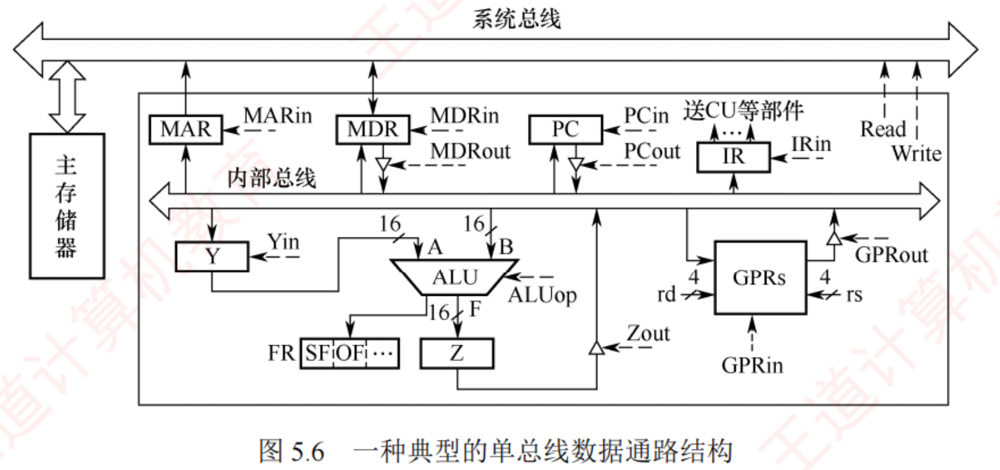
图 5.6（书 p.209） 一种典型的单总线数据通路 ——本章最重要的一张图，2022 统考真题综合大题用的就是它 。要点五条：① GPRs 通用寄存器组 ，输入端 rs / rd 各 4 位 ⟹ 最多 2⁴ = 16 个通用寄存器，rs、rd 来自 IR ；② Y 和 Z 是暂存器 （为什么必须有，见下方红块）；③ FR 标志寄存器 存 ALU 产生的 SF / OF；④ 凡是能向总线输出数据的部件，都通过各自的三态门挂上去 ，避免多个输出同时驱动总线；⑤ 控制信号命名规则「部件名 + in/out」 ——in = 允许从总线写入该部件 （PCin），out = 允许该部件输出到总线 （PCout），另有 Read / Write 两个主存控制信号与 ALUop。ALUop 若为 n 位则最多支持 2ⁿ 种操作；书上约定 ALUop 为 3 位、加法时 ALUop = 000。
必记结论 · 单总线的三条铁律 （04/05/06 题 + 2015、2022 两道大题的共同地基，本节最该背的东西 ）
① 任一时刻，总线上只能有一个 部件发送信息，但可以有一个或多个 部件接收信息。 （总线是一组共享传输线，不能存储信息 ；两个部件同时驱动会冲突，但"广播"给多个接收方没问题。） ② ALU 是无存储能力的组合逻辑，运算时需要两个输入同时 有效 ⟹ 必须先把一个操作数经总线送入暂存器 Y。 ③ ALU 的输出不能 直接连到总线 ⟹ 必须暂存于 Z ——否则输出会经总线反馈回输入端，干扰正在进行的运算。
我的补讲 · 「为什么必须有 Y 和 Z 两个暂存器」 ——2022 真题第 2 问的原题，请把它背成两句话
书上说 ：在单总线数据通路中，任一时刻总线上仅允许一个数据传输 ；而 ALU 运算时需要两个输入同时有效 ；
此外 ALU 输出不能直接连到总线，否则可能通过总线反馈至输入端 。潜台词是 ：这两个暂存器不是设计者的癖好，是被"一条总线"这个前提逼出来的必然产物 ——Y 解决"进不来两个数" ：一条总线一拍只能送一个数。若没有 Y，第二拍送第二个数时，第一个数已经从总线上消失了 ，ALU 的 A、B 两端会同时拿到同一个 值（2015 真题解析的原话）。Z 解决"出去了又绕回来" ：ALU 是组合逻辑，输出随输入连续变化 。如果输出直挂总线，而总线又连着 ALU 的输入端，就形成了组合逻辑环路 ——输出变→输入变→输出又变，结果永远不稳定。Z 是一道闸门，把这个环切开。 所以能考 Z ：考场上写两句就满分 ——「① 单总线一拍只能传一个数，ALU 需两个输入同时有效，故需 Y 缓存其中一个；② ALU 输出若直连总线会反馈至输入端影响运算，故需 Z 缓存输出。」2015 真题（综 08）问的是同一件事，但换了个壳 ：那题叫暂存器 T ，问「为何要设置暂存器 T」，答案就是上面的第 ① 条。换个字母就认不出来，是这类题的主要失分方式。
知识串联 · 暂存器 Y / Z ↔ 流水段寄存器 ——它们是同一个思想在两个尺度上的实现
此处 5.3.4 Y 和 Z 把 ALU 的输入端和输出端"锁住" ，让组合逻辑不会被总线上的变化干扰。5.6.1 流水段寄存器（IF/ID、ID/EX、EX/MEM、MEM/WB）把五个段之间"锁住" ，让每段的中间结果不会被下一条指令冲掉。共同本质 都是"在组合逻辑链上插一个状态元件，把长链切成短链" ——切开之后，
① 中间结果不会互相污染 ；② 每段各自满足 T ≥ clk_to_q + Tmax + setup，于是时钟周期可以变短 。跨科 · 数据结构 这和算法里用额外空间缓存中间量以打破依赖 是同一招（如把递归改成显式栈、把重复子问题缓存进 DP 表）。看到"为什么要加这个寄存器"的问答题，答案永远在这两条里选：要么"输入需要同时有效"，要么"输出会反馈/被覆盖"。
范例一：加法指令的完整微操作序列
指令功能 ：把 rs 和 rd 两个寄存器中的值相加，结果写回 rd。设 rs = 0001、rd = 0010 ；从发出主存读命令到数据送达 MDR 共需 5 个时钟周期 ；暂不考虑 PC 增量 。
必记结论 · 取指阶段（所有指令都一样，闭着眼睛也要写对）
时钟 功能 有效控制信号 C1 (PC) → MAR PCout，MARin C2～C6 MEM(MAR) → MDR MDRin，Read C7 (MDR) → IR MDRout，IRin
🐍
复算：1 + 5 + 1 = 7 个时钟周期 ，与书上 C1～C7 一致。
⟹
取指周期数的通用公式：1（送地址）+ N（访存）+ 1（送 IR）＝ N + 2。
必记结论 · 执行阶段（加法，3 拍 ）
时钟 功能 有效控制信号 C8 (rs) → Y rs = 0001，GPRout，Yin C9 (rs) + (rd) → Z rd = 0010，GPRout，ALUop = 000 C10 (Z) → rd Zout，rd = 0010，GPRin
范例二：取数指令的完整微操作序列
指令功能 ：把「rs 寄存器的值所指向的主存单元」的内容取出，送回 rd。取指阶段与上面完全相同（C1～C7）。
必记结论 · 执行阶段（取数，7 拍 ）
时钟 功能 有效控制信号 C8 (rs) → MAR rs = 0001，GPRout，MARin C9～C13 MEM(MAR) → MDR MDRin，Read C14 (MDR) → rd MDRout，rd = 0010，GPRin
我的补讲 · 两条指令的对照，就是整个 5.3 的骨架 （会写这两张表，10 道综合题就都会写了）
书上说 ：加法执行阶段 3 个周期 （C8～C10），取数执行阶段 7 个周期 （C8～C14）。潜台词是 ：差的那 4 拍，全在"要不要跨出 CPU"这一件事上 ——加法在 CPU 内部倒手 ：GPRs → Y → ALU → Z → GPRs，每一步都是片内总线上的一拍 ；取数要跨总线访存 ：多了 MAR 送地址（1 拍）+ 等主存（5 拍） ，而少了 Y/Z 那两拍 ⟹ 3 − 2 + 1 + 5 = 7 。所以能考 Z ：综合题问"这条指令执行阶段至少几个时钟周期"，数法是固定的三步 ——
① 数它要访问几次主存 （每次 N 拍，题目会给）；② 数它要经过几次总线传送 （每次 1 拍）；③ ALU 运算与它的输出锁存共占 2 拍 （进 Y 一拍、算完进 Z 一拍），结果回写再一拍 。拿 2015 真题（综 09）第 4 问验一下 ：`sub R1, R3, (R2)` 要访存取一个操作数 ，书答是 4 拍 ；
`inc R1` 纯寄存器操作 ，书答是 2 拍 ——正好差在"访存 + 送地址"上 。三步数法与书答完全吻合。
我的补讲 · 写微操作序列时"控制信号栏"怎么填才不丢分 ——三条填法，考场直接用
书上说 ：只需看数据是流入还是流出——流入寄存器 X 就是 Xin，流出寄存器 X 就是 Xout 。潜台词是 ：这一栏的分是"格式分"，阅卷按信号逐个给，不是按整行给 。所以要养成三个填写习惯：一条微操作里有几个箭头端点，就至少有几个控制信号 ——(PC) → MAR 有两个端点，就必须写 PCout, MARin 两个，只写一个扣一半。访存动作要额外补主存控制信号 ：读写主存除了 MDR 相关信号外，还要写 MemR / MemW （有的题写作 read/write、MEMop=read）。ALU 动作要写运算类型 ：ALUop = 000 （加）或直接写 ADD ；PC 自增要单列一个 "+1" 或 "PC+1" ，它不占内部总线，容易漏写。所以能考 Z ：把这三条当检查表，写完每一行回扫一遍"端点数够不够、访存有没有 MemR、运算有没有写 ALUop" 。
2009 真题的参考答案里每一行都恰好满足这三条，可以拿它当模板对照。
知识串联 · 「多路选择器选谁 / 译码器打开谁」这一对分工，在 408 里出现了至少五次
此处 5.3 寄存器堆里：读端口用 MUX（多进一出），写端口用译码器（一进多出） ——2022 真题第 3 问。ch3 3.2 主存芯片的片选：地址高位送译码器，选中某一片 ——同样是"一进多出"。ch3 3.5 Cache 组相联：组号送译码器选组，组内比较器 + MUX 选路 ——译码器和 MUX 在同一张图里各站一头，和寄存器堆一模一样 。ch5 5.4 操作码译码器：n 位操作码 → 2ⁿ 根互斥输出线 ——还是"一进多出"。ch5 5.3.5 RegDst / ALUSrc / MemtoReg 三个控制信号控制的全是 MUX ——全是"多进一出"。一句话总纲：要"从多个候选里挑一个数据"用 MUX；要"把一个动作定向送给多个候选中的一个"用译码器。前者选数据，后者选目标。
我的补讲 · 「RegWr 为什么要和 Overflow 相与」 ——图 5.8 上那个与门是个考点
书上说 ：RegWr 信号和溢出标志位 Overflow 通过「与」门组合后，决定是否允许写入寄存器堆 ；仅当不溢出时才将结果写回 Rd；发生溢出时，会触发异常处理 。潜台词是 ：这个与门是"精确异常"的硬件基础 ——如果溢出了还把错误结果写进 Rd，那么异常处理程序就算想重新执行这条指令也没用了（源寄存器可能已被覆盖） 。
所以硬件必须做到"检测到溢出就不提交 结果" 。所以能考 Z ：这正是 5.5 里"故障（fault）"的定义——「在指令启动之后、执行完成之前被检测到，CPU 在尚未提交该指令结果时即响应」 。
图 5.8 那个与门，就是"尚未提交"这四个字的电路实现。 顺带解释了 5.5 的一条结论 ：溢出属于"故障"，可恢复时重新执行，不可恢复时终止进程 ——
整数溢出通常属于不可恢复（没法凭空造出更多位），所以一般直接终止 。而缺页可恢复（把页调进来就行），所以重新执行。
我的补讲 · 综 02 那道题的"隐藏难点"是六个未画出的寄存器
题设 ：CPU 内部结构图之外，还有 B、C、D、E、H、L 六个寄存器（图中未画出） ，它们的输入/输出端都与内部总线相通，各受 Bin/Bout 之类的信号控制；并假设 ALU 的结果直接送入寄存器 Z 。要求写出 ADD B,C 与 SUB ACC,H 的微操作序列。潜台词是 ："图中未画出"是在告诉你——别去图上找它们，就当它们是一组挂在总线上的普通通用寄存器 。
题干还额外送了一个条件："ALU 的结果直接送入 Z" ，意思是你不用再写一步"把结果锁进 Z"，运算那一拍自动就进 Z 了 。于是两条指令的执行段各是三拍 ：ADD B,C：(B)→Y → (C)+(Y)→Z → (Z)→B ；SUB ACC,H：(ACC)→Y → (H) 与 (Y) 相减→Z → (Z)→ACC 。所以能考 Z ：减法要特别小心操作数顺序 ——SUB ACC,H 的功能是 (ACC) − (H) → ACC ，
所以进 Y 的必须是被减数还是减数，取决于你的 ALU 是算 "A−B" 还是 "B−A" 。考场上写清楚"(ACC)−(H)"这个式子本身，比纠结哪个进 Y 更保险。
知识串联 · 图 5.11 上那个 Zero 标志，就是 ch4 条件转移指令的判断依据
此处 5.3.5 Zero 由 ALU 输出，送给取指令部件的下地址逻辑 ；执行 beq 时 ALU 做减法，结果为 0 则 Zero = 1，表示满足转移条件 。ch2 2.2 ZF（零标志）是四个状态标志之一 ，由 ALU 在运算时产生。ch4 4.2 / 4.3 条件转移指令（je/jne/jg…）读的就是这批标志位 ；2011 真题考过"无符号数比较该看哪个标志" 。5.1 / 5.4 标志寄存器 FR 的输出连到控制部件 CU 的输入端 （2022 真题第 5 问）——CU 靠它决定条件分支走哪条微地址 。5.6 正因为 beq 要等 ALU 算完减法才知道 Zero，转移方向才那么晚才确定 ⟹ 控制冒险 3 拍 。一个 Zero 标志，串起了 ch2（谁产生）、ch4（谁使用）、5.3（走哪条线）、5.4（谁读它）、5.6（为什么慢）五处。
5.3.5 专用结构的数据通路
📄 p.210
※ 书上此节误编为 5.3.4，见本节开头的红块。
本节以单周期数据通路 为例讲专用通路的设计。前提有三条，每一条都直接派生出选择题 ：
必记结论 · 单周期专用通路的三条前提
① 每条指令的取指与执行均在一个时钟周期内完成 ，故时钟周期必须以最耗时的指令为准 。资源无法复用 ⟹ 需要为频繁使用的功能单元（如加法器）配置多组独立实例 。为避免取指与访存冲突，指令和数据被分别存储在独立的存储器中 ，确保两者能在同一周期内并行处理。其中的控制逻辑与数据通路设计思想同样适用于多周期、流水线等更复杂的结构 ——
所以这四张图（5.8～5.11）值得认真看，5.6 的流水线数据通路就是在它上面加段寄存器。
① 取指令部件
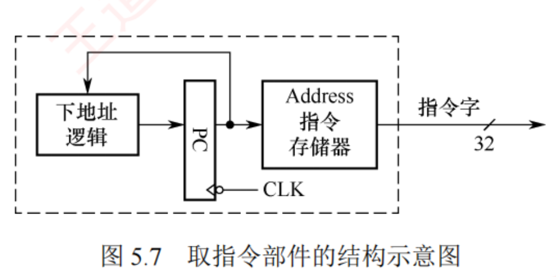
图 5.7（书 p.210） 取指令部件 。链路是：下地址逻辑 → PC（受 CLK 控制）→ 指令存储器 Address 端 → 输出 32 位指令字 ，同时 PC 的输出回连到下地址逻辑。指令存储器仅支持读操作 ，给出地址后经固定延迟即输出指令字 。"下地址逻辑"是这张图的重点 ：它按指令类型分两条路——顺序执行走 PC + 4 ；分支/转移走目标地址计算 （如 beq 比较两个寄存器的内容决定是否转移，再按偏移量算新 PC）。
② R 型运算指令
add rd, rs, rt # R[rs] + R[rt] → R[rd]
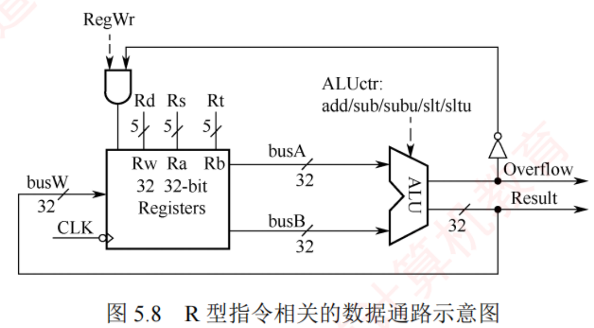
图 5.8（书 p.211） R 型指令的数据通路 。连接规则三条：寄存器堆的两个读地址端 Ra、Rb 分别接 Rs 和 Rt ；写地址端 Rw 接 Rd ；ALU 的结果经 busW 连回寄存器堆的写数据端 。控制信号两个：RegWr 是写使能 ——注意它要与溢出标志 Overflow 经"与"门组合后 才决定是否写入（add/sub 发生溢出时不写回，转去触发异常 ）；ALUctr 选运算类型，ALU 支持 N 种运算则 ALUctr 至少 ⌈log₂N⌉ 位 。R 型指令执行期间 RegWr 恒为 1。
陷阱 · ⭐ 单周期数据通路里没有 指令寄存器 IR （第 14 题，很多人第一次看到会以为图画漏了）
书上原文 ：由于单周期处理器必须在一个时钟周期内完成指令，其数据通路中不设置指令寄存器（IR），而直接从指令存储器中取指令并解析执行 ——
否则仅"取指令到 IR"就要占掉一个时钟周期 。通过组合逻辑直接驱动控制单元、寄存器堆和 ALU ，解析与执行同步进行。同一题的 D 项还有个配套结论 ：单周期数据通路中 PC 无须"写使能"控制信号 ——因为它每个周期都无条件更新为下一条指令地址 ，没有"这拍不写"的情况。对照记 ：单总线多周期的图 5.6 里 IR 是有的 （因为取指本来就单独占了 C7 那一拍）。有没有 IR，是判断一张数据通路图是单周期还是多周期的最快特征。
③ I 型运算指令
addi rt, rs, imm16 # R[rs] + SignExt[imm16] → R[rt]
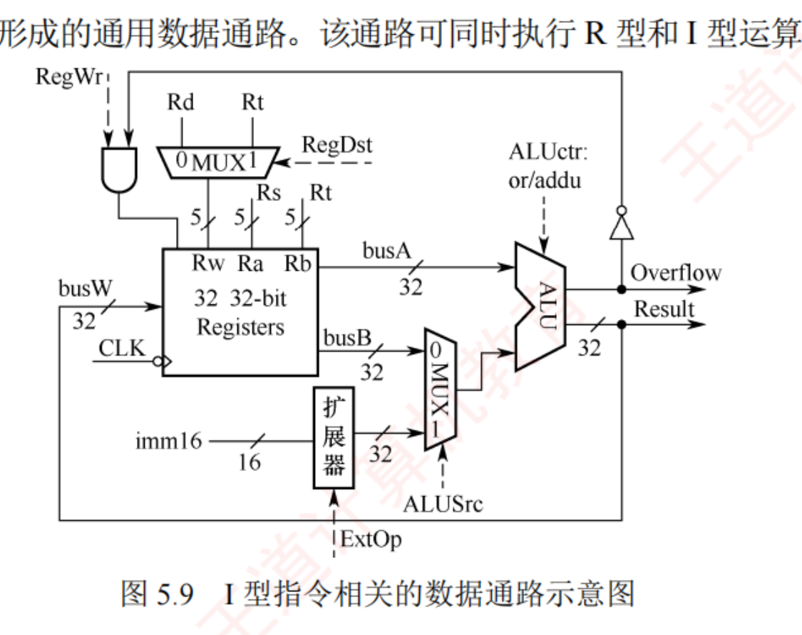
图 5.9（书 p.211） I 型指令的数据通路 。与图 5.8 相比多了三处，每一处都对应一个新控制信号 ：① 写地址端 Rw 前加 多路选择器 + RegDst （RegDst = 1 选 Rd（R 型）、= 0 选 Rt（I 型） ）；② 新增立即数扩展器 + ExtOp （算术类用符号扩展、按位逻辑类用零扩展 ）；③ ALU 第二输入端加 多路选择器 + ALUSrc （ALUSrc = 0 选寄存器 Rt、= 1 选扩展后的立即数 ）。"多一种指令类型，就多一个多路选择器"——这就是整套控制信号的来历，不用死背。
④ 访存指令（LOAD / STORE）
lw rt, imm16(rs) # M[ R[rs] + SignExt(imm16) ] → R[rt]
sw rt, imm16(rs) # R[rt] → M[ R[rs] + SignExt(imm16) ]
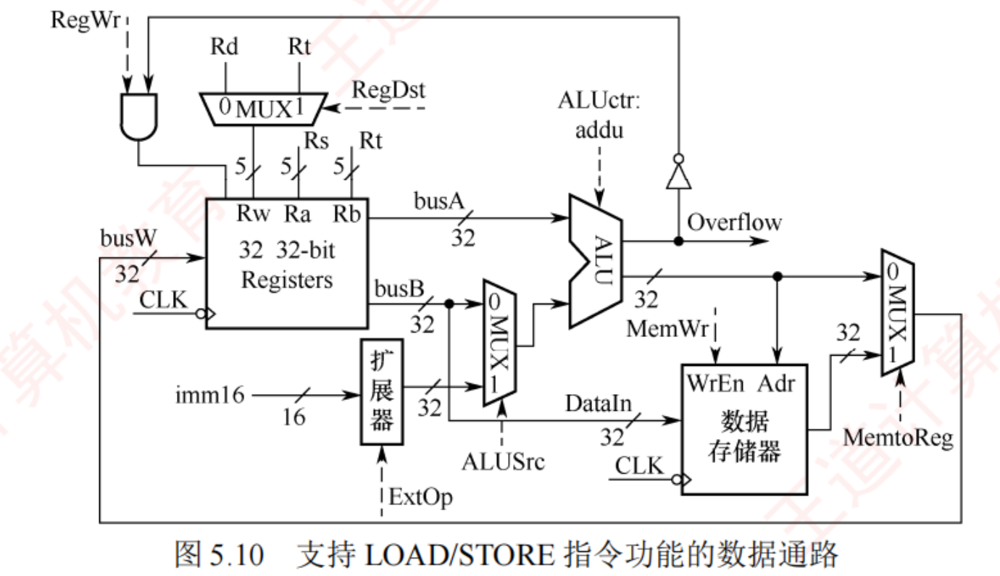
图 5.10（书 p.212） 支持 LOAD / STORE 的数据通路 。与图 5.9 相比多了两处 ：① busW 处再加一个多路选择器 + MemtoReg （= 0 选 ALU 结果（运算类）、= 1 选存储器读出的数据（LOAD） ）；② 新增数据存储器 ——它的地址端 Adr 直接接 ALU 输出 （访存地址由 ALU 算），寄存器堆的第二读端口 busB（即 Rt）接到数据存储器的 DataIn （供 STORE 写数据），输出接回 busW 的选择器，写使能是 MemWr 。LOAD 与 STORE 的地址计算逻辑完全一致 （符号扩展 imm16 后与 R[rs] 相加，用不判溢出的 addu ），唯一区别是数据流向 。
⑤ 完整的单周期数据通路
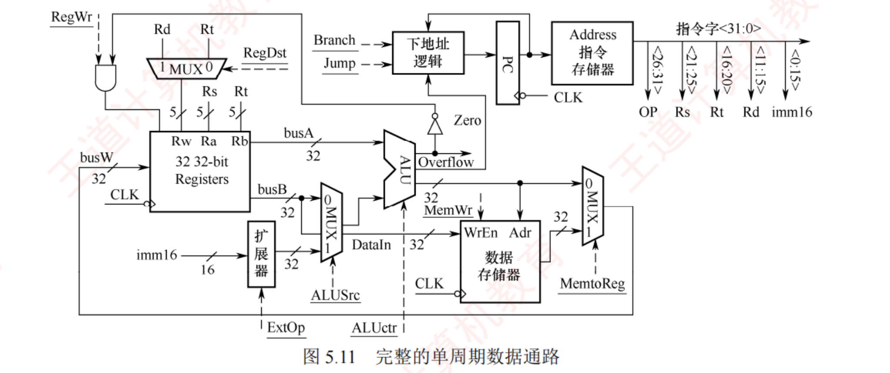
图 5.11（书 p.213） 完整的单周期数据通路 ——本节的总图，把 5.7～5.10 四张图拼成一张 。图中所有加下划线的信号都是控制信号，用虚线画 。指令字 <31:0> 分段为 OP <26:31> · Rs <21:25> · Rt <16:20> · Rd <11:15> · imm16 <0:15> （书上标注如此）。取指令部件在图 5.7 基础上还要接收三个外部信号：Branch （执行分支指令时置 1）、Jump （无条件转移时置 1）、Zero 标志 （由 ALU 输出 ——beq 时 ALU 做减法，结果为 0 则 Zero = 1，表示满足转移条件）。
必记结论 · ⭐ 单周期处理器的五个特点 （书 p.213 原文，五条全是选择题）
# 特点 后果 ① 存储器分离 ：指令存储器与数据存储器相互独立取指与访存可并行，一个周期内同时完成 ② 无指令寄存器 IR ：指令各字段直接驱动控制信号与地址输入解析与执行在同一周期内同步完成 ③ 时钟周期由最慢指令决定 （通常是访存指令）简单指令（如 R 型加法）效率受限 ④ 资源专用、无法复用 ：加法器等关键单元要配多个独立实例硬件开销大 ⑤ 控制信号单周期有效 ：一拍内保持不变无流水线分段
必记结论 · ⭐ 单周期专用通路的八个控制信号 （图 5.9–5.11 全套，MIPS 口径，建议默写 ）
信号 控制什么 取值含义 RegDst 写回哪个寄存器 1 = Rd（R 型）· 0 = Rt（I 型） ExtOp 立即数怎么扩展 算术类用符号扩展 · 按位逻辑类用零扩展 ALUSrc ALU 第二操作数选谁 0 = 寄存器 Rt · 1 = 扩展后的立即数 MemtoReg 写回的数据来自哪 0 = ALU 结果 · 1 = 存储器读出 RegWr 寄存器堆写使能 与 Overflow 相与后才真正写入 MemWr 数据存储器写使能 STORE 时为 1 Branch / Jump 下地址逻辑走哪条路 分支 / 无条件转移时置 1 ALUctr ALU 做哪种运算 支持 N 种运算则至少 ⌈log₂N⌉ 位 Zero （非控制信号）由 ALU 输出 ，送给下地址逻辑beq 做减法，结果为 0 则置 1
我的补讲 · 八个控制信号不用背，用"数选择器"的方法现推
书上说 ：每加入一类新指令，就在数据通路上增设多路选择器 并配一个控制信号。潜台词是 ：控制信号的个数 ≈ 数据通路上"岔路口"的个数 。考场上给你一张陌生的数据通路图问"需要哪些控制信号"，方法是——沿着数据从头走到尾，每遇到一个岔路口就记一个信号 ：RegDst ；② 第二操作数从哪来？→ 岔路（寄存器 / 立即数）⟹ ALUSrc ；
③ 立即数怎么扩？→ 岔路（符号 / 零）⟹ ExtOp ；④ 写回的数从哪来？→ 岔路（ALU / 存储器）⟹ MemtoReg ；
⑤ 下一条指令地址从哪来？→ 岔路（PC+4 / 分支 / 跳转）⟹ Branch、Jump 。再加上两个"要不要动手"的使能信号（RegWr、MemWr）和一个"做哪种运算"的选择（ALUctr），正好八个。 所以能考 Z ：2024 真题（在 ch4）给的那张部分数据通路只有三个信号 Ext / ALUBsrc / ALUctr ，
用同样的数法一秒对上 ——那张图上只有两个岔路口（扩展方式、第二操作数）加一个运算选择。
数岔路口这一招，比背清单管用得多，因为真题的图从来不和课本一模一样。
知识串联 · 「指令存储器与数据存储器分离」这件事，你已经在三个地方见过它
此处 5.3.5 单周期必须分离 ——一拍之内既要取指又要访存，共用一个单端口存储器做不到。ch3 3.1 哈佛结构 vs 冯·诺依曼结构 ：分离的指令/数据存储器正是哈佛结构 的定义特征。ch3 3.5 现代 CPU 的 L1 Cache 一律分成 I-Cache 和 D-Cache ——物理上主存还是一个，但一级缓存是分离的 ，等价地解决了同一个问题。5.6.3 结构冒险 ：五段流水线中 IF 段要取指、MEM 段要访存 ，若共用一个存储器就会撞车 ⟹ 教材给的第一个解法就是"设置分离的指令和数据存储器" 。一句话：从单周期到流水线，只要"同一拍里要访问两次存储器"，答案永远是把存储器分开。
我的补讲 · 综 04 那道"给寄存器起名字"的题 ——四个未命名寄存器怎么认出来
题 ：给一张简化的 CPU 与主存连接图（省略了所有多路选择器 ），有一个 ACC、一个状态寄存器和四个未命名的寄存器 a、b、c、d，要你写出它们的名称。认法只看"连到哪儿"三条线 ：连到主存地址 端的那个 = MAR ；连到主存数据 端、且双向的那个 = MDR ；输出送去"微操作信号发生器/译码"的那个 = IR ；自带 "+1" 增量逻辑的那个 = PC 。潜台词是 ：这类"认部件"题永远不靠记忆，靠的是"每个寄存器都有一个别人没有的特征连线" ——
MAR 独占地址线、MDR 独占数据线的双向、IR 独占译码输出、PC 独占自增 。四个特征互不重叠，所以四个位置唯一确定。 所以能考 Z ：后面五问（取指数据通路、存取访问、LDA X、ADD Y、STA Z）全都用 5.3.4 那套微操作模板即可 ——
LDA 是"取数"、ADD 是"取数 + 运算"、STA 是"存数"，正好把三种数据流各练一遍。
我的补讲 · 2017 真题（选 26）：数据通路里唯一不包括的是控制部件 ——和 2021 是同一道题的两种问法
2017 真题 ：数据通路包括程序计数器、ALU、通用寄存器、状态寄存器、异常和中断处理逻辑 等，不包括控制部件 。2021 真题 ：问"关于数据通路错误的是"，答案是 C「数据通路不包含用于异常事件检测及响应的电路」 。潜台词是 ：这两道题一正一反，考的是同一条边界线 ——2017 让你确认"异常处理逻辑在 数据通路里"，2021 让你否定"它不在 " 。注意 2017 那份清单里还有一个容易被忽略的成员：程序计数器 PC 。
PC 既是控制部件的成员（5.4 第 18 题），又是数据通路的成员（2017 真题） ——这不矛盾 ：
它存的是地址（数据流过它），同时它又决定执行顺序（控制作用） 。"部件归属"和"数据通路成员"是两套正交的划分。 所以能考 Z ：唯一在两套划分里都明确"不属于数据通路"的，只有"产生控制信号的电路"本身 。
其余部件只要数据流过，一律算数据通路。
我的补讲 · 综合题的分怎么丢的 ——三类扣分，两类可以零成本避免
把书上 10 道综合题的参考答案逐份对完，扣分只集中在三处： 漏写控制信号 （占比最高）——一条微操作有两个端点却只写一个信号，或访存忘写 MemR/MemW 。
零成本对策：写完每行数一遍箭头端点。 依赖关系写错 ——把两件抢同一条内部总线的事塞进同一拍 ，或在数据还没到 MDR 时就往下走 。
零成本对策：每一拍只问一句"内部总线这一拍被谁占了"。 题干给的特殊前提没用上 ——如"包括 PC 自增""MAR 输出常使能""ALU 结果直接送 Z""读写不能同拍" 。
这一类最可惜，因为题干已经把答案的形状告诉你了。对策：开做前把题干里所有"假设/已知/注意"圈出来。 所以能考 Z ：前两类靠机械检查就能消灭，第三类靠审题习惯 。
这三条加起来，比多背两道题的答案有用得多——因为综合题的图每年都换，格式和依赖关系却从不变。
5.3.6 综合大题实战：四道统考真题的共同解法
📄 p.218
我的补讲 · ⭐ 微操作序列的书写模板 ——10 道综合题共用这一套，考场上照抄格式即可
书上说 ：
有效控制信号的安排并不难，只需看数据是流入还是流出——流入寄存器 X 就是 Xin，流出寄存器 X 就是 Xout 。
潜台词是 ：这类题
看起来千变万化，其实只有三个固定段落 ，把它们当作填空模板背下来：
(PC) → MAR 控制信号：PCout, MARin ——「读写主存前必先送地址」
M(MAR) → MDR ，同时 (PC)+1 → PC 控制信号：MemR, MDRinE / PC+1 ——「访存必经 MDR；PC 自增可并行」
(MDR) → IR 控制信号：MDRout, IRin ——「指令送 IR，然后译码」
取数段 ：`地址源 → MAR` → `M(MAR) → MDR` → `(MDR) → Y`（或送某个暂存器）。
执行段 ：`(另一操作数) + (Y) → Z` → `(Z) → 目的`；
若结果要写主存 ，再补 `(Z) → MDR` → `(MDR) → M(MAR)`。
所以能考 Z ：
三条硬规矩，缺一个就扣分 ——
①
访存前一定先有一拍把地址送进 MAR ；②
数据进出主存一定经过 MDR ；
③
ALU 的两个输入不能同一拍从总线来 （必有一个先进 Y）。
⚠️
MDR 有两套控制信号，别写混 ：
MDRin / MDRout 对的是 CPU 内部总线 ，
MDRinE / MDRoutE 对的是外部数据总线 DB 。
从主存读进来写 MDRinE，从 MDR 写回主存写 MDRoutE ——2009 真题的题干专门解释了这一点，就是在提示你别写错。
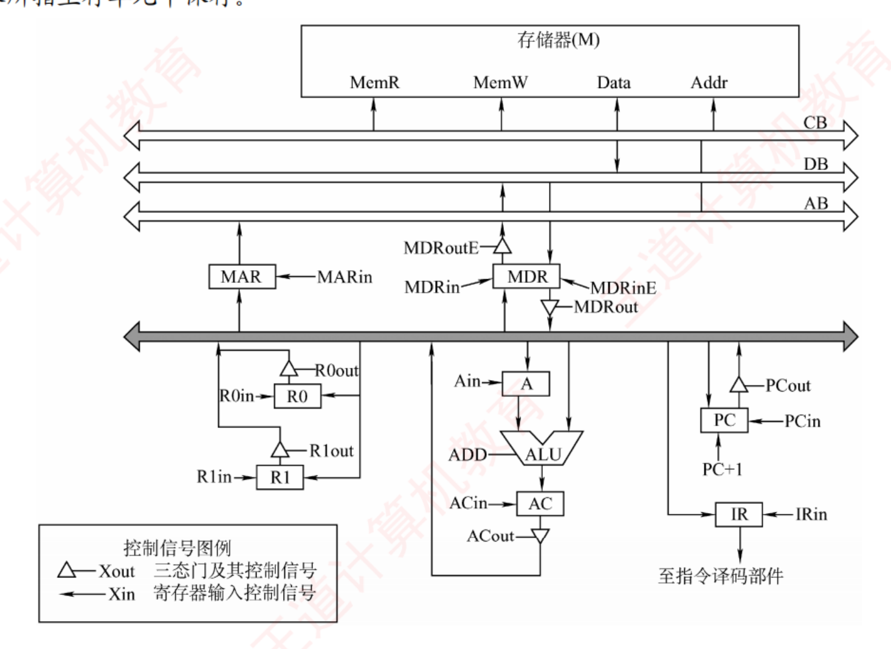
2009 统考真题（书 p.218 综 07） 部分数据通路结构 。16 位定长指令字，要实现 ADD (R1), R0 ，功能是 (R0) + ((R1)) → (R1) ——一个操作数在寄存器、一个在主存，结果写回主存 。图上要认的东西：△ 是三态门，配控制信号 Xout；← 是寄存器输入控制信号 Xin ；MAR 输出一直使能 ；MDR 有内外两套信号（MDRin/MDRout 对内部总线，MDRinE/MDRoutE 对 DB） ；ALU 的一端固定接暂存器 A ，输出进 AC 。
必记结论 · 2009 真题的参考答案（书上给了两套，第二套省一拍 ）
方案一（书上主答案，C5～C10 共 6 拍） ：
时钟 功能 有效控制信号 C5 MAR ← (R1) R1out, MARin C6 MDR ← M(MAR) MemR, MDRinE C7 A ← (MDR) MDRout, Ain C8 AC ← (A) + (R0) R0out, ADD, ACin C9 MDR ← (AC) ACout, MDRin C10 M(MAR) ← (MDR) MDRoutE, MemW
方案二（书上明说"答案不唯一"，5 拍） ：把
C6 的访存与 (R0) → A 合并成一拍 （
两者不冲突：一个走外部 DB，一个走内部总线 ），
于是 C7 直接算
AC ← (MDR) + (A) ，
整体省下 1 拍 。
我的补讲 · 2009 真题真正在考的是"哪两件事可以塞进同一拍" ——这也是所有微操作题的最高难点
书上说 ：若在 C6 执行 M(MAR) → MDR 的同时完成 (R0) → A，并不会发生总线冲突，这种方案可节省 1 个节拍 。潜台词是 ：能不能并行，只看这两件事有没有抢同一条总线 ——外部数据总线 DB （信号是 MDRinE ，带 E）；CPU 内部总线 （信号是 R0out、Ain）；两条总线是物理上分开的两组线 ⟹ 可以同拍。 而 `(MDR) → A` 和 `(R0) → A` 就绝对不能同拍 ——它们都要占内部总线，而且都要写进 A。所以能考 Z ：做微操作题时，每写一拍先问一句"这一拍占了内部总线的哪一次传送" 。
内部总线一拍只能用一次，这是唯一的硬约束 ；PC+1、访存、ALU 运算这些不占内部总线的动作可以搭顺风车。 考场策略 ：先按"一拍一件事"的保守写法写全，拿到基本分；有把握再合并 。
书上把两套方案都列为参考答案，说明阅卷时保守写法同样给分 ——别为了省一拍写错依赖关系而丢大分。
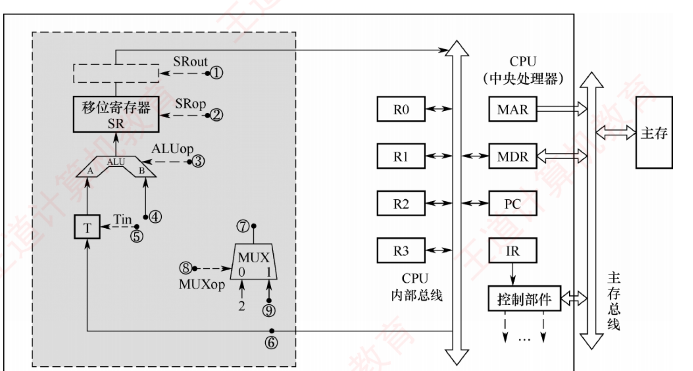
2015 统考真题（书 p.219 综 08） 16 位机的单总线数据通路 。灰底框内是要你补全的部分：SR 移位寄存器 （可 mov / left / right 三种操作，控制信号 SRop，输出由 SRout 控制）、ALU （可 mova / add / sub / and / or / not / inc 七种 操作，控制信号 ALUop）、暂存器 T 、二路选择器 MUX （一个输入端是常数 2 ）以及端点 ①～⑨。六问全部围绕三件事 ：位宽速算（⌈log₂7⌉ = 3、⌈log₂3⌉ = 2 ）、暂存器 T 的必要性、以及那个常数 2 是干什么的 。
必记结论 · 2015 真题（综 08）六问速答
问 答 ① 哪些寄存器程序员可见？为何要设暂存器 T？ 可见：R0～R3 和 PC 。因为是单总线，若无 T，则 ALU 的 A、B 端口会同时获得两个相同的数据，数据通路无法正常工作。 ② ALUop 和 SRop 至少几位？ ALU 7 种操作 ⟹ ALUop ≥ 3 位 ；SR 3 种操作 ⟹ SRop ≥ 2 位 。🐍 ⌈log₂7⌉=3、⌈log₂3⌉=2，复算一致。③ SRout 控制的是什么部件？ 一个三态门 ，用于控制移位器与总线之间通路的通断。④ 哪些端点接控制部件输出端？ ①、②、③、⑤、⑧ （都是控制信号线）。⑤ 补哪两条连线？ ⑥ → ⑨ ；⑦ → ④ 。⑥ MUX 的一个输入端为何是常数 2？ 指令 16 位、按字节编址 ⟹ 每条指令占 2 个内存单元 ⟹ 顺序执行时下条地址 = (PC) + 2 ，MUX 接常数 2 就是为了做这个自增。
知识串联 · 「MUX 的输入端是 2 还是 4」，答案在 ch4 的一条铁律里
ch4 4.2 PC 增量 = 指令长度 ÷ 编址单位 。2015 真题 ：16 位指令 ÷ 按字节编址 = 2 ；MIPS（图 5.7） ：32 位指令 ÷ 按字节编址 = 4 ，所以那里写的是 PC + 4 。5.1 同一条铁律的另一面：「PC 顺序执行时自动加 1」里的"1"指的是一条指令的长度，不是 1 字节 （第 11 题 B 项就错在这）。5.6 2014 综 02 的分支目标 = (PC) + 4 + OFFSET × 4 ——前一个 4 是 PC 自增，后一个 ×4 是"偏移量以指令条数计" 。两个 4 含义完全不同，混淆就整题错。 看到 PC 相关的常数，先问"编址单位是什么、指令多长"，两个数一除就出来了。
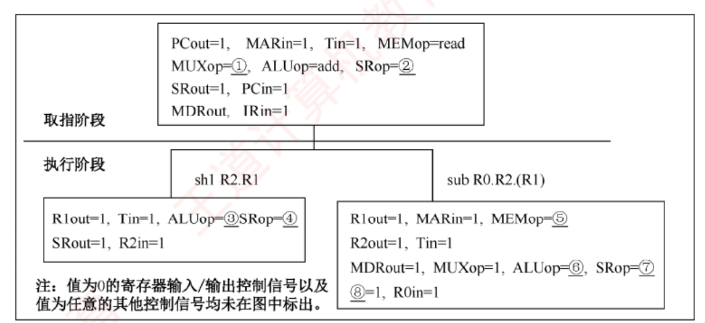
2015 统考真题（书 p.220 综 09） 某段指令执行过程的控制信号 。左边是取指阶段，右边两个框分别是 shl R2,R1 与 sub R0,R2,(R1) 的执行阶段，标号 ①～⑧ 处的信号要你填。答案：①0 ②mov ③mova ④left ⑤read ⑥sub ⑦mov ⑧SRout 。🔧 我在裁这张图时抓到自己的一处转录错误 ：讲义原先把右框第三行抄成 MUXop=⑥, ALUop=⑨，但图中标号只有 ①～⑧，根本不存在 ⑨ ；dpi=420 复核后确认原书写的是 MUXop=1, ALUop=⑥。又一次印证：对不上时先怀疑自己抄错，书基本没错。
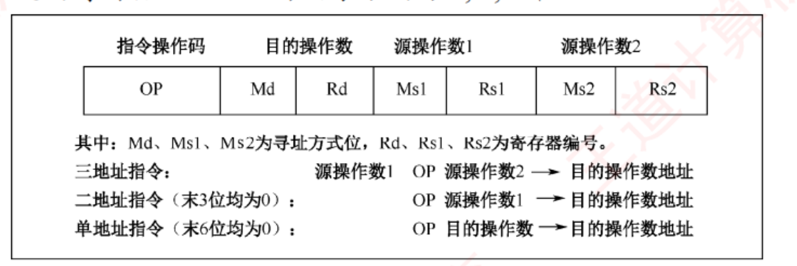
2015 统考真题（书 p.220 综 09） 指令格式 。字段划分：OP(7) | Md(1) Rd(2) | Ms1(1) Rs1(2) | Ms2(1) Rs2(2) ，合计 7+1+2+1+2+1+2 = 16 位 。M 是寻址方式位（0 = 寄存器直接、1 = 寄存器间接），R 是寄存器编号（R0～R3 编号 0～3） 。三地址指令用满全部字段；二地址指令末 3 位全 0 ；单地址指令末 6 位全 0 。操作码 7 位 ⟹ 最多定义 2⁷ = 128 条指令 （第 1 问）。
必记结论 · 2015 真题（综 09）第 2 问：三条机器码的完整编码过程（🐍 三条全部复算零误差 ）
编码公式 （按字段从高到低拼）：
机器码 = (OP<<9) | (Md<<8) | (Rd<<6) | (Ms1<<5) | (Rs1<<3) | (Ms2<<2) | Rs2
指令 字段值 (OP,Md,Rd,Ms1,Rs1,Ms2,Rs2) 二进制 机器码 inc R101H, 0, 1, 0, 0, 0, 0 0000001 0 01 0 00 0 00 0240H shl R2, R102H, 0, 2, 0, 1, 0, 0 0000010 0 10 0 01 0 00 0488H sub R3, (R1), R203H, 0, 3, 1 , 1, 0, 2 0000011 0 11 1 01 0 10 06EAH
第 4 问 ：
sub R1, R3, (R2) 执行阶段至少
4 个时钟周期 （含一次访存取操作数）；
inc R1 至少
2 个时钟周期 （纯寄存器操作）。
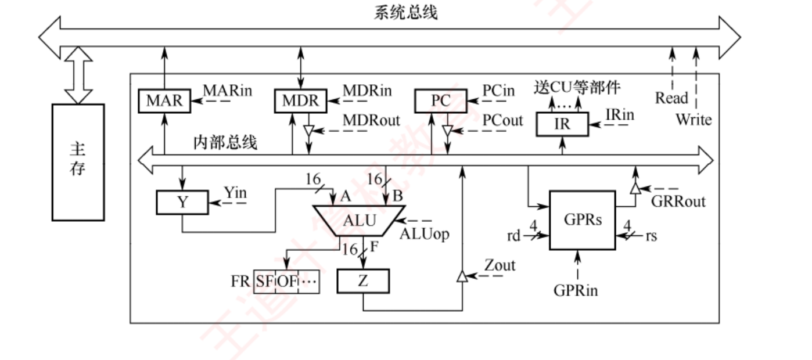
2022 统考真题（书 p.220 综 10） 某 CPU 的部分数据通路 ——与正文图 5.6 是同一张图 。这不是巧合：王道正文那一节就是照着这道真题写的 ，所以把图 5.6 的五个要点吃透，这道 15 分大题就等于提前做过 。图中 GPRs 是通用寄存器组、FR 是标志寄存器 ；带箭头虚线是控制信号（Read / Write 是主存读写，MDRin 表示内部总线的数据写入 MDR，MDRout 表示 MDR 内容送内部总线）。
必记结论 · 2022 真题（综 10）五问速答——每一问都能在图 5.6 的正文里找到原话
问 答 ① SF 与 OF 的逻辑表达式 SF = F₁₅ （符号标志就是结果的最高位）。A 加 B 时 ：OF = A₁₅ ·B₁₅ ·F₁₅ ＋ A₁₅·B₁₅·F₁₅ （同号相加得异号 ⟹ 溢出） A 减 B 时 ：OF = A₁₅ ·B₁₅·F₁₅ ＋ A₁₅·B₁₅ ·F₁₅ （异号相减得反号 ⟹ 溢出） ② 为什么要设暂存器 Y 和 Z 单总线一时刻只有一个数据有效，而 ALU 有两个输入端 ⟹ 需 Y 缓存其中一个输入；ALU 输出时总线正被占用 ⟹ 需 Z 缓存输出。③ 最多几个通用寄存器？rs/rd 来自哪？rd 接译码器还是 MUX？ rs、rd 都是 4 bit ⟹ 最多 2⁴ = 16 个 ；都来自指令寄存器 IR ；rd 是"写哪个寄存器"的编号 ⟹ 接地址译码器 （读端口才接多路选择器）。④ 取指阶段控制信号序列与周期数 ① PCout, MARin （1 拍）→ ② Read ，数据入 MDR（5 拍 ）→ ③ MDRout, IRin （1 拍）⟹ 至少 7 个时钟周期 。 ⑤ 控制信号由谁产生？哪些寄存器的输出连到它的输入端？ 由控制部件 CU 产生 ；指令寄存器 IR 和标志寄存器 FR 的输出 连到 CU 的输入端。
我的补讲 · 第 ③ 问「rd 接译码器还是多路选择器」是这道题最容易丢的 2 分
书上说 ：rd 表示寄存器编号，应连接地址译码器 。潜台词是 ：寄存器堆内部有一读一写两条路 ，两条路的选择机制是反着的 ——读 ：16 个寄存器的输出都摆在那儿，要从中挑一个送出去 ⟹ 多路选择器（多进一出） ；写 ：总线上只有一个数据，要把它送进 16 个中的某一个 ⟹ 需要一根"只对目标寄存器有效"的写使能线 ⟹ 地址译码器（n 进 2ⁿ 出，只有一根为 1） 。所以能考 Z ：判据是"数据的方向" ——多进一出用 MUX，一进多出用译码器 。
rd 是写 端口的编号 ⟹ 译码器；rs 是读 端口的编号 ⟹ 多路选择器。MUX 和译码器在寄存器堆里各站一头，正好是一对 。
知识串联 · OF 的逻辑表达式（2022）↔ ch2 的「双进位异或」判据 ——两种写法必须能互相翻译
ch2 2.2 OF = Cn ⊕ Cn−1 （最高位进位 异或 次高位进位）——从加法器内部看 。此处 2022 OF = A₁₅ B₁₅ F₁₅ + A₁₅B₁₅F₁₅ ——从操作数与结果的符号位看 。怎么互译 两者等价：同号相加而结果变号，等价于"进位没进到最高位却从次高位进了" 。
题目给什么就用什么口径 ——给你 A₁₅/B₁₅/F₁₅ 三个变量就用符号位法，给你加法器电路图就用双进位法 。ch2 也讲过的第三种 用变形补码（双符号位）判：两个符号位不同即溢出。 三种判据是同一件事的三种观察角度，能互相验证；考场上哪种能直接代入题给变量就用哪种。
背景 · 考试不碰
5.3.3 中「专用数据通路的
布线复杂、扩展性差、成本较高 」这一段的工程细节，以及表 5.1 里「
典型应用场景 」那一行（教学模型 / 嵌入式微控制器 vs 高性能通用处理器），
统考从未直接命题 ——它们的作用是帮你理解"为什么书上用单总线举例、而真实 RISC 用专用通路"，
读一遍有个印象即可，不必记忆 。
另外，综 01～06 这六道
自编 综合题（非真题）的题图各不相同，
但解法完全落在上面那套微操作模板里 ——
它们的价值是练手，不是新知识 ，已全部收进
练习系统 并配了原图，
在这里不再逐题展开 。
我的补讲 · 综 04、05、06 三道自编大题的共同套路 ——"给你一张陌生的部件图，让你写指令周期流程"
这三道题的图各不相同 （有的带变址寄存器 XR 和有效地址寄存器 EAR，有的连线都要你自己画），
但解法完全一样 ，分三步：
先把题给的部件按"三类"归位 ：① 挂总线的寄存器 （PC、IR、MAR、MDR、通用寄存器）；② ALU 及其暂存器 （Y/LATCH/C/D）；③ 特殊部件 （XR 变址寄存器、EAR 有效地址寄存器、地址加法器、移位器）。特殊部件通常就是这道题的"考点"所在 。
照搬取指周期模板 ：(PC)→MAR → M(MAR)→MDR（并行 (PC)+1→PC）→ (MDR)→IR → 译码。这三拍所有题都一样，闭着眼睛写。
执行周期按"寻址方式"展开 ：题干说的是什么寻址方式，就照 ch4 那一节的有效地址公式一步步算 ——
综 06 是变址寻址 ，所以要先 (XR)+Ad(IR)→EAR（这一步用的正是那个"地址加法器"），再 (EAR)→MAR 去访存；
综 05 是自增型寄存器间接寻址 ，所以最后要补一条 (R2)+1→R2。
所以能考 Z ：
陌生图不可怕，因为流程是固定的 。
真正要现场判断的只有两件事 ——
① 这个特殊部件是干什么的（看它的名字和连线）；② 这条指令的寻址方式要几步取到操作数（回 ch4 查表）。
⚠️
综 05 还多问一句"画出各部件之间的连线" ——
画法就一条规矩：凡是要往总线上送数的部件，输出端画一个三态门接总线；凡是要从总线取数的，输入端画一根带 Xin 的箭头。
我的补讲 · 第 12 题「单总线 vs 专用通路」的四个选项 ——一句话判据
题 ：与专用通路结构相比，单总线结构的数据通路——A 性能更高；B 数据冲突更严重；C 硬件规模更大、实现更复杂；D 控制逻辑更复杂。答案 B。 潜台词是 ：单总线是"省硬件、牺牲性能"的方案，所以凡是说它"更大、更复杂、性能更高"的一律错 ：A 性能更高 ❌ —— 分时串行传输，性能低 ；C 硬件规模更大 ❌ —— 恰恰相反，共享总线连线少、硬件简单 ；D 控制逻辑更复杂 ❌ —— 状态少、控制逻辑简洁 ；B 数据冲突更严重 ✅ —— 同一时刻仅能传输一次数据，容易引发总线冲突 。所以能考 Z ：把单总线的四个属性背成一串——"简单、便宜、易扩展、但慢且冲突多" 。
专用通路正好全反过来——"复杂、贵、难扩展、但快且无冲突"。
⚠️ 别把这里的"硬件规模"与 5.3.3 那张表里"单周期硬件成本高"搞混 ：
前者比的是"单总线 vs 专用通路"（连接方式），后者比的是"单周期 vs 多周期"（时序方式）——两个维度，别串。
知识串联 · 「专用通路 vs 总线式」的取舍，和 ch3 的「多体交叉存储」是同一种思路
此处 5.3.3 总线式共享一条线 ⟹ 便宜但分时串行 ；专用通路点对点 ⟹ 贵但可并行 。ch3 3.3 单体存储器 vs 多体并行（连续编址 / 交叉编址） ——多个存储体各有各的读写线路，于是能并行访问 ，正是"专用通路"的思路搬到了存储器上 。ch6 总线 单总线 / 双总线 / 三总线结构 ——同一组取舍在系统级又出现一次 ：总线越多越贵，但并行度越高 。共同的判据 "这两件事需不需要同时发生" ——需要就得给它们各自的通路，不需要就分时复用同一条 。408 里但凡出现"并行 vs 复用"的选择题，答案永远在"成本 ↔ 并行度"这条曲线上；问性能选专用/多体/多总线，问成本与扩展性选共享/单体/单总线。
5.4 控制器的功能和工作原理
📄 p.228
我的补讲 · 先说清这一节的"考法" ——它是全章唯一「选择真题很多、综合真题为零」的节
数据 ：5.4 有
7 道选择真题 （2009 / 2012 / 2014 / 2017 / 2019 / 2021×2），
综合真题 0 道 。
潜台词是 ：
统考从不在这一节出大题，但每隔一两年就来一道 2 分的选择题，而且十有八九是"算位数" ——
2012 算操作控制字段 15 位、2014 算后继地址字段 8 位。
所以本节的复习策略和 5.3 完全相反 ：
・
5.3 ：图要看熟，微操作序列要会写整段（大题）；
・
5.4 ：
概念对照表要背死，一个"字长三步法"要算到不用想 （选择题）。
所以能考 Z ：书上那 5 道
自编 综合题虽然不是真题，但
它们全是同一个计算模板的变式 ——
我已把整套模板收进计算模板手册 。
把模板练熟，选择题里的位数计算就是送分。
5.4.1 控制器的结构和功能
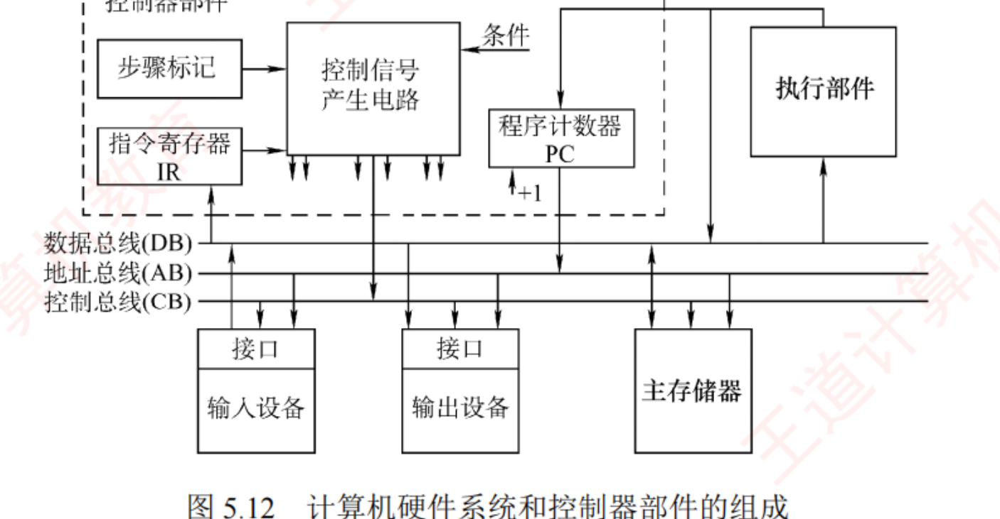
图 5.12（书 p.228） 计算机硬件系统与控制器的组成 。虚线框内是控制器 ，含四样东西：步骤标记 · 指令寄存器 IR · 控制信号产生电路 · 程序计数器 PC（带 +1） ，「条件」信号从右侧回连进来。框外是执行部件 ；下方横贯 数据总线 DB / 地址总线 AB / 控制总线 CB ，再往下接输入设备接口、输出设备接口和主存储器。看图记住那根"条件"回线 ——它就是状态标志送回 CU ，正是条件转移指令能工作的物理基础，也是 5.4.2 里「CU 的三类输入」中的第三类。
必记结论 · 控制器的三项职责 ＋ 一条分类总纲
三项职责 ：① 取出待执行的指令并计算下一条指令的位置（更新 PC） ；② 对操作码解码，产生时序信号和控制信号 ；③ 管理 CPU、主存和 I/O 设备间的数据流向及时序 。⭐ 分类总纲 ：依据「微操作控制信号的生成方式」不同，控制器分为硬布线控制器与微程序控制器。
两者都包含 PC 和 IR ，但在指令执行步骤的表现形式 以及控制信号的生成机制 上有本质区别。
我的补讲 · 「哪些部件属于控制部件」 ——第 18 题，四选一里三个都对，最后一个最容易漏
题 ：下列部件中属于控制部件的是 Ⅰ 指令寄存器、Ⅱ 操作控制器、Ⅲ 程序计数器、Ⅳ 状态条件寄存器。答案是 D（四个全是） 。潜台词是 ：前三个没有争议，Ⅳ「状态条件寄存器」才是这道题的考点 ——很多人把它归给运算器（因为它的内容是 ALU 产生的）。但判据不是"谁产生它"，而是"谁使用它" ：状态条件寄存器的输出送进 CU，用来决定条件转移走哪条路 （回看图 5.12 那根从右侧回连的"条件"线、图 5.13 那路"标志"输入）。
它是控制流的输入，所以归控制部件。 所以能考 Z ：2022 真题第 5 问问「哪些寄存器的输出连到控制部件的输入端」，答案是 IR 和 FR ——正好就是这道题的 Ⅰ 和 Ⅳ 。
两道题隔了十几页，考的是同一根线。
知识串联 · 「操作码译码器 n 位 → 2ⁿ 根线」——这是本书出现频率最高的一个电路
此处 5.4.2 IR 的 n 位操作码 → 操作码译码器 → 2ⁿ 根互斥输出线 → CU 。ch4 4.1 定长操作码 n 位 ⟹ 最多 2ⁿ 条指令 ——这个上限的物理原因就是译码器只有 2ⁿ 根输出线 。ch4 4.1 扩展操作码 之所以要"短码不能是长码的前缀"，正是为了让译码器仍能唯一识别 。2015 真题（综 09） 「操作码 7 位 ⟹ 最多定义 2⁷ = 128 条指令」 ——原题第 1 问，一步到位。ch3 3.2 主存的片选译码 ：地址高位 → 译码器 → 选中某个芯片。同一个电路，换了个输入。 把译码器理解成"一个把编号变成一根选中线的装置"，它在 408 里的每一次出现就都是同一件事了。
我的补讲 · 硬布线控制器的设计流程 ——书上一句话带过，但它解释了"为什么改不动"
书上说 ：设计时，先用逻辑表达式描述各控制信号，经化简后实现为硬件电路 。潜台词是 ：每一个控制信号 Cᵢ 都是一个布尔函数 ，形如
Cᵢ = （某操作码译码线）·（某节拍 Tⱼ）+（另一操作码线）·（另一节拍）+ …——
它把"哪条指令、在第几拍、要发这个信号"全部枚举出来，再化简成门电路 。于是"改不动"的原因就一目了然 ：新增一条指令，意味着几乎每一个 Cᵢ 的表达式都要重新加一项、重新化简、重新布线 ——
这不是改一行代码，是重画一张芯片版图 。所以能考 Z ：这解释了表 5.2 里"扩充修改困难"和"烦琐、不规整"两行 ；
也解释了为什么 RISC 用它——RISC 指令少而规整，表达式项数少，化简后电路才不会爆炸。 对照微程序 ：微程序改指令只要改 ROM 里的内容 ，本质上是把"组合逻辑"换成了"查表" ——
这正是"存储逻辑"这个词的含义 。用空间（CM）换取了可维护性。
知识串联 · 「节拍」这个词的来龙去脉 ——它在 5.2 出现、在 5.4 被用起来
5.2.2 时钟信号经整形和分频后形成节拍信号 ；现代处理器里"一个时钟周期即对应一个节拍" （那一段被我划成了背景灰块）。5.4.2 节拍发生器产生 T₀, T₁, …, Tₙ 送入 CU ——这就是"节拍"真正被用起来的地方 ：
CU 靠"操作码译码线 × 节拍线"两个维度的组合，决定这一拍该发哪些微命令 。5.4 综 05 那道题问的"微操作命令及节拍安排"，写的 T₀/T₁/T₂/T₃ 就是这些节拍 。5.3 而单总线数据通路的微操作序列里写的 C1、C2……，是同一个东西的另一种记号 （时钟周期编号）。「节拍 Tᵢ」「时钟周期 Cᵢ」「机器周期内的第 i 拍」在本章是同义词 ，不同题目用不同记号，别被吓住 。
我在 5.2.2 把三级时序划成背景，但特意留了一句"5.4 会用到节拍这个词"——就是为了这里。
5.4.2 硬布线控制器
📄 p.229
硬布线控制器 由复杂的组合逻辑电路和触发器 构成，也称组合逻辑控制器 。它根据指令需求、当前时序和内部状态，按时间顺序生成一系列微操作控制信号 。为简化 CU 设计，通常把 IR 中的 n 位操作码经译码电路转换为 2ⁿ 个输出信号 ，每种操作码唯一激活一条输出线 。
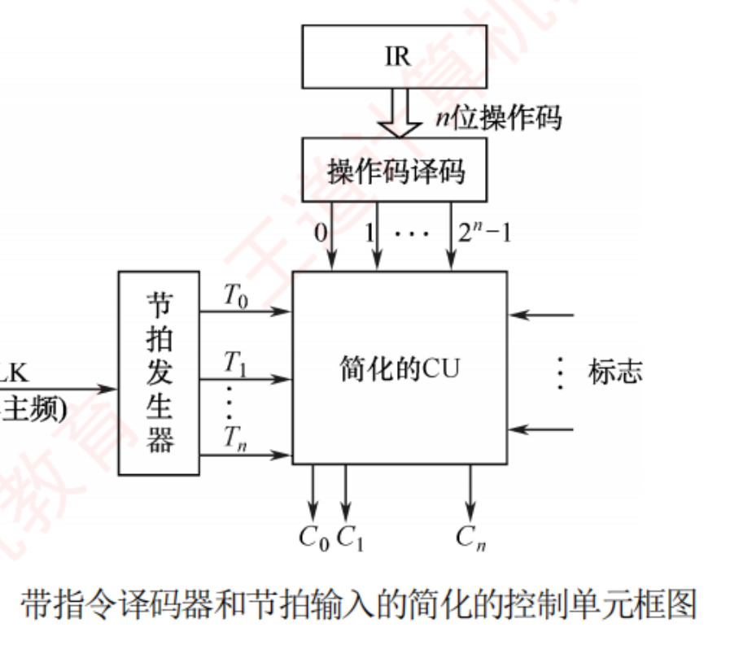
图 5.13（书 p.229） 简化的控制单元框图 。三路输入汇进 CU：① IR 的 n 位操作码 → 操作码译码器 → 2ⁿ 根互斥输出线 ；② CLK（机器主频）→ 节拍发生器 → T₀, T₁, …, Tₙ ；③ 执行单元反馈回来的状态标志 。CU 的输出是 C₀, C₁, …, Cₙ 一组微操作控制信号 。这张图就是选择题 02「微操作控制信号的形成主要与什么信号有关」的答案 ——答案是「指令译码信号和时钟」 ，而不是"操作码和地址码"（地址码根本不进 CU）。
必记结论 · CU 的三类输入（02 题原题）与硬布线的性能代价
三类输入 ：① 操作译码器输出的指令信息 （与节拍共同生成微操作控制信号）；② 时钟脉冲 （频率即机器主频，用于划分节拍）；③ 执行单元反馈的状态标志 （使 CU 能按 CPU 当前状态动态调整）。性能与代价 ：性能主要受限于电路延迟 ，故响应速度快 ；但灵活性差 ——修改或新增指令需重新设计电路 ；且随着指令系统增强，控制信号数量急剧增加，电路规模庞大、调试困难 。正是为克服这些缺点，微程序设计方法应运而生。
陷阱 · 「微程序控制器是为了提高速度」——永远是错的 （第 08、16 两题的同一个坑）
第 08 题 A 项 「采用微程序控制器是为了提高速度」❌ ——恰恰相反，微程序控制器比硬布线慢 ，
采用它是为了结构规整、灵活性强、易于维护和扩充 。第 16 题说法 Ⅰ 「微程序控制方式可以使指令执行速度更快」❌ ——同一个坑换了个说法。为什么慢 （第 05 题的答案）：每条微指令都要从控制存储器 CM 中读出 ，这个读取时间是硬布线（组合逻辑即时产生）所没有的。
⚠️ 第 05 题的三个干扰项都在换"从哪读" ：不是从磁盘、不是从主存、不是从 IR，是从控制存储器 。顺带解决第 08 题另外三项 ：B「控制存储器由高速 RAM 组成」❌ （是 ROM ）；
C「微指令计数器决定指令执行顺序」❌ （μPC 只决定微指令顺序，机器指令顺序由 PC 决定 ）；
D「一条微指令存放在一个控制存储器单元中」✅ 就是答案 。
我的补讲 · 「相容 vs 互斥」的判据是"能不能同时发"，不是"会不会冲突" （第 14 题四个选项只差几个字）
书上说 ：相容性微命令是指可同时有效、协同完成某一功能的微命令；互斥性微命令是指在同一时刻不允许同时有效的微命令 。潜台词是 ：第 14 题把这两句话拆开重组成四个选项，正确的只有 A ：同一时钟周期中可以同时出现的叫相容性微命令 。B 把两个名字对调了 ❌；D 也对调了 ❌；C 「在执行过程中可能引起总线冲突的叫互斥性微命令」——这个最像对的，但它把"互斥"的定义窄化了 。
互斥的原因不止总线冲突一种 ：比如"ALU 做加法"和"ALU 做减法"这两个微命令互斥，与总线毫无关系 ，纯粹是因为一个 ALU 一次只能做一件事。所以能考 Z ：互斥 = 物理上不可能同时成立（同一个部件、同一条线只能干一件事） ；相容 = 分属不同部件、可以并行 。
这正是字段直接编码"互斥的放同一字段、相容的放不同字段"的依据 ——同一字段一次只能译出一个命令，正好对应"互斥"。
我的补讲 · 「取指微程序放在 CM 的 0 号单元」为什么是个自然选择
书上说 ：系统启动或每条指令执行完毕后，将取指微程序的入口地址（通常为 CM 的 0 号单元）送入 μPC 。潜台词是 ：这个"0 号"不是随便定的，它有两个好处 ——硬件上把 μPC 清零就是"回到取指" ，复位电路天然就把寄存器清零，所以开机后第一条微指令自动就是取指 ；每条机器指令执行完都要回到这里 （工作过程的第 ④ 步），把它放在固定的 0 号单元，微地址形成部件就不需要为"返回取指"专门存一个地址 。所以能考 Z ：这解释了那条容量公式里为什么"公共微程序只算一份" ——它在 CM 里只有一份物理拷贝，所有机器指令共用 。
综 02 那道题的 (4−1)×80 + 1 里，那个孤零零的 "+1" 就是它。 对照 2014 真题 ：那题说"公共的取指令微程序包含 2 条微指令 "，所以是 32×4 + 2 = 130 ——
公共微程序不一定只有 1 条，题干说几条就是几条 。
知识串联 · 微指令的"操作控制 + 顺序控制"二段式，与机器指令的"操作码 + 地址码"是同构的
机器指令 （ch4）微指令 （5.4）前半段 操作码 OP ：这条指令干什么操作控制字段 ：这一步发哪些微命令后半段 地址码 A ：操作数在哪顺序控制字段（下址） ：下条微指令在哪编码技巧 扩展操作码 （短码不能是长码前缀，要留扩展窗口）字段直接编码 （互斥同段、相容异段，每段留一个"无操作"）"垂直"的那一版 — 垂直型微指令：μOP | Rd | Rs ——几乎就是一条机器指令的样子
⟹
把微指令理解成"CPU 内部的机器指令"，整节 5.4 会变得简单很多 ：
CM 相当于内存、μPC 相当于 PC、μIR 相当于 IR、微程序相当于程序 。
唯一的差别是：这一层对程序员完全不可见，而且它的"内存"是只读的 ROM。
我的补讲 · 第 07 题「控制存储器属于谁的一部分」 ——三个字的送分题，但错的人不少
答案：C（CPU）。 潜台词是 ：四个选项 主存 / 外存 / CPU / 缓存 里，"缓存"是最像的干扰项 ——
因为 CM 也是"高速的、在 CPU 附近的、只读为主的"存储器。但它和 Cache 是两回事 ：Cache 存的是主存内容的副本 ，内容随程序运行不断变化，对程序员透明但内容来自主存 ；CM 存的是微程序 ，出厂固化、运行中只读不写、内容与用户程序毫无关系 。所以能考 Z ：三个标签一起记——CPU 内 · ROM · 按微地址访问 。
2017 真题（选 24）考的就是这三个标签中的第三个（错误项说它"按内容访问"）。 顺带把"主存 MM vs 控制存储器 CS"那张表再对一遍 ：位置（外/内）· 存什么（指令数据/微指令）· 器件（RAM 为主/ROM）· 访问方式（按地址/按微地址） ，四行全都不同。
我的补讲 · 微地址形成部件的三种工作情形 ——它不是"一个加法器"那么简单
书上把它拆成三种情形 ，
每一种走不同的通路 ：
情形 下条微地址从哪来 触发条件 ① 微程序入口 由 IR 的操作码经微地址形成部件生成 一条新机器指令刚进入 IR，取指微程序刚结束 ② 顺序执行 增量方式：μPC + 1 ；断定方式：读当前微指令的下址字段 微程序段内无转移 ③ 条件分支 下址字段给的转移目标 + 状态条件信号共同决定 需按标志位选不同执行路径
潜台词是 ：
情形 ① 是"从机器指令层跳进微指令层"的唯一入口 ——
它把操作码"翻译"成微地址 ，
这就是"微程序是机器指令的硬件级解释逻辑"这句话的具体机制 。
所以能考 Z ：
问"微程序的入口地址由什么形成"，答"机器指令的操作码字段" （第 03 题）——
⚠️
那道题的三个干扰项分别是"机器指令的地址码字段""微指令的微地址码字段""微指令的微操作码字段" ，
都在"机器指令/微指令 × 操作码/地址码"这个 2×2 里做文章 。
只有"机器指令 + 操作码"这一格是对的。
知识串联 · 硬布线 vs 微程序 ↔ CISC vs RISC ↔ 硬件与软件的责任划分
5.4 表 5.2 硬布线用于 RISC，微程序用于 CISC 。ch4 4.4 RISC 指令少而规整 ⟹ 控制逻辑简单 ⟹ 用组合逻辑硬连就够了 ；
CISC 指令又多又复杂 ⟹ 硬连电路会爆炸 ⟹ 只能用微程序"解释执行" 。因果链是从指令集推到控制器实现的。 5.6 RISC 定长指令 ⟹ 好流水 ；而 CISC 的现代做法是"先把变长指令译成定长 μop 再流水" ——那个翻译层本质上还是微程序思想 。性能的代价在哪 微程序每条微指令都要读 CM ⟹ 慢 ；但改指令系统时只要改 ROM 内容，不用重新设计电路 ⟹ 灵活 。把 ch4 的 CISC/RISC 表和 5.4 的表 5.2 并排放，你会发现它们其实是同一张表的上下两半：上半讲指令集长什么样，下半讲控制器怎么实现。
5.4.3 微程序控制器
📄 p.229
核心思想 ：采用存储逻辑 ——把控制器所需的微操作控制信号组织成微指令 ，把执行每条机器指令所需的微指令序列（微程序） 预先存入一个专用的高速存储器（控制存储器 CM ）中；运行时依次读取微指令，生成控制信号。执行一条机器指令的过程，实质上就是顺序执行其对应微程序的过程。
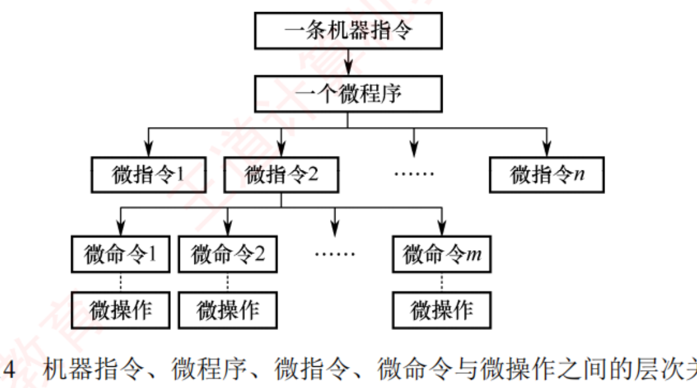
图 5.14（书 p.230） 五个概念的层次关系 ——本节最该先看的一张图 。自上而下：一条机器指令 → 一个微程序 → 微指令 1、2、…、n → 微命令 1、2、…、m → 微操作 。四条量化关系一起记 ：一条机器指令 ↔ 一个微程序 （一般情形）；一个微程序 ↔ 一个指令周期 ；一条微指令 ↔ 一个微周期 ≈ 一个时钟周期 ；微命令与微操作一一对应 （微命令是发出去的控制信号，微操作是执行部件收到后做的动作 ）。
必记结论 · 五个基本概念（每一个都被单独出过题）
概念 定义 ⚠️ 易混点 微命令 控制部件向执行部件发出的最基本控制信号 ，是构成控制序列的最小单位 相容性微命令 可同时有效；互斥性微命令 同一时刻不许同时有效微操作 执行部件收到微命令后所做的具体动作 与微命令一一对应 微指令 若干微命令的集合，含操作控制字段（微操作码） ＋顺序控制字段（下址） 两部分 结构与机器指令的「操作码+地址码」同构 微周期 执行一条微指令所需的基本时间，通常为一个时钟周期 别与"指令周期"混 微程序 微指令的有序集合，由计算机体系结构设计者编写 ，固化于 CM 对程序员完全透明
⚠️
书上原框 ：
硬布线控制器中同样存在微命令与微操作的概念 ，只是实现方式不同——
不要以为"微命令"是微程序控制器专有的 。
我的补讲 · 「程序 vs 微程序」的四条分界线 ——2021 真题（选 27）问「CPU 能直接执行的是什么」就靠这四条
书上说 ：
微程序本质上是机器指令的「硬件级解释逻辑」。对程序员而言，微程序的存在完全透明 。
潜台词是 ：把「程序」和「微程序」放进同一张表逐行对比，答案自己就浮出来了：
程序 微程序 由谁写 软件开发者 计算机体系结构设计者 存在哪 主存或辅存 控制存储器 CM（CPU 内、ROM） 干什么用 完成特定功能 解释和执行机器指令 对程序员 可见、可改 完全透明
所以能考 Z ：2021 真题问「
CPU 能理解并直接执行的 是哪些」，答案是
机器指令 + 微指令 （Ⅱ、Ⅲ）——
高级语言程序和汇编语言程序都必须先翻译成机器语言 ，而
微指令是比机器指令更低一层、CPU 直接执行的东西 。
⚠️
这道题的"陷阱"在于"直接"二字容易被读成"程序员能写" 。
"能被 CPU 直接执行" ≠ "程序员能用" ——
微指令恰好是"CPU 能执行但程序员碰不到"的那一类。
必记结论 · ⭐ 四个极易混的寄存器 （2017、2021 真题反复考，务必分清哪个装指令、哪个装微指令 ）
寄存器 存什么 在哪 可见？ MAR 地址寄存器主存 读/写地址CPU 内 ❌ IR 指令寄存器当前机器指令 CPU 内 ❌ μPC（CMAR） 微地址寄存器待执行微指令 在 CM 中的微地址 控制器内 ❌ μIR（CMDR） 微指令寄存器从 CM 读出的当前微指令 控制器内 ❌（2021 真题干扰项 ）
⚠️
μPC 不能取代 PC ：μPC 只知道
微程序内部 的下一步，
不知道下一条机器指令在哪 ——两个计数器分属两个层次。
⚠️
2021 真题（选 26）的正确答案 ：汇编语言程序员
可见 的是
基址寄存器、状态/标志寄存器、PC、通用寄存器组 ；
MAR、MDR、IR、μIR 都不可见 。
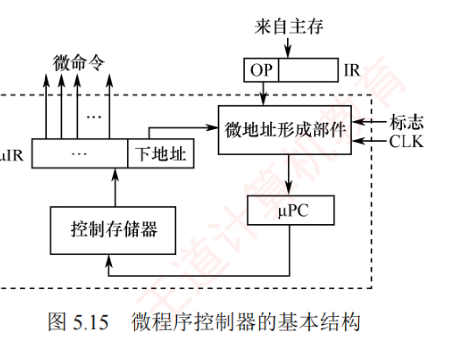
图 5.15（书 p.231） 微程序控制器的基本结构 。数据流是一条清晰的环：来自主存的指令 → IR，取出 OP 字段 → 微地址形成部件 （另接「标志」与 CLK 两路输入）→ μPC → 控制存储器 CM → μIR ；μIR 分成两半——左半是"微命令输出"（送执行部件） ，右半是"下地址"（回连微地址形成部件） ，环就此闭合。这张图画的是"断定方式" （下条微地址由当前微指令的下址字段显式给出），书上明确说明了这一点。
必记结论 · 微程序控制器的四个部件 ＋ 四步工作循环
四个部件 ：①
微地址形成部件 （按操作码生成微程序
入口地址 ，并据下址字段与状态条件产生后续微地址）；②
μPC 微指令地址寄存器 （作为 CM 的读地址）；③
控制存储器 CM （
核心部件 ，存放所有微程序）；④
μIR 微指令寄存器 （把操作控制字段与顺序控制字段
分别送执行单元和微地址形成部件 ）。
四步循环 ：
执行取指令公共操作 ：把取指微程序的入口地址（通常是 CM 的 0 号单元） 送入 μPC，读出取指微指令并执行，最终机器指令进入 IR。
生成本条指令的微程序入口地址 ：由 IR 中的操作码 经微地址形成部件产生起始微地址，送入 μPC。
顺序执行微程序 ：从 CM 逐条读微指令送 μIR 并执行，直至该微程序结束。
返回循环 ：自动转回取指微程序入口（第 ① 步），开始处理下一条机器指令。
⭐ 由此得到一条公式 ：
控制存储器中的微程序总数 ＝ 机器指令条数 ＋ 公共微程序数（取指 / 间址 / 中断等）
知识串联 · 「公共取指微程序」为什么能被抽出来 ——答案在 5.2，不在这里
5.2.1 / 5.3.4 「所有指令的取指阶段数据流完全相同」 ——图 5.6 的范例里，加法和取数两条指令的 C1～C7 一模一样。此处 5.4.3 正因为完全相同，才能把它抽成一段公共微程序，放在 CM 的 0 号单元，所有机器指令共用。 计算题里的后果 算控存容量时，公共取指微指令只算一次 ——
综 02：80 条指令、每条平均 4 条微指令，答案不是 80×4 = 320，而是 (4−1)×80 + 1 = 241 。跨科 · 数据结构 这就是「把重复代码提取成公共子程序」 的硬件版；间址、中断也各有一段公共微程序 ，道理相同。做控存容量题时，第一句话先问自己："取指微指令是共用的还是每条指令各算一份？"题干的措辞决定加还是乘。
我的补讲 · 选 20 那道带图的综合选择题 ——它把本节的四个计算点串成了一道题，值得单独拆
题设 ：某微程序控制器，
μPC 是 8 位寄存器、μIR 是 32 位寄存器，一条机器指令平均由 4 条不同的微指令组成（不含取指部分） ，问哪个描述
错误 。
选项 判断 依据 A. 微指令的地址形成方式是增量法 ❌ 就是答案 图上 μIR 里有「转移控制」字段、右侧还有「起始和转移地址发生器」 ⟹ 是断定方式（下址字段法） ，不是单纯的增量法B. 条件码来自标志寄存器 ✅ 图上"条件码"输入正是 FR 的输出（同上一节第 18 题） C. 最多有 64 条不同的机器指令 ✅ 🐍 μPC 8 位 ⟹ CM 有 2⁸ = 256 个单元 ⟹ 最多 256 条微指令；256 ÷ 4 = 64 。⚠️ 严格说取指微指令还要占地方，所以机器指令数应小于 64，"最多 64 条"是宽松上界 D. 控制存储器的容量为 1KB ✅ 🐍 256 × 32 bit = 8192 bit = 1024 B = 1KB
所以能考 Z ：
「μPC 几位」这一个条件同时决定了两件事——CM 有多少个单元（2ⁿ）、能装多少条微指令 ；
「μIR 几位」就是微指令字长 ，两者相乘就是 CM 容量。
这两句话是本节所有容量题的入口。
⚠️
判断"增量法还是断定法"只看一处：微指令里有没有"下址字段 / 转移控制字段" 。
有 ⟹ 断定法；只靠 μPC+1 ⟹ 增量法。
我的补讲 · 「水平型 vs 垂直型」四条对比，其实由一句话推出 （12、13、15 三题的统一解法）
那一句话是 ：「一条微指令能不能同时发出多个微命令」 。其余四条全是它的推论 ：并行能力强、效率高 （推论 1）；要给每个微命令留位置 ⟹ 字长长 （推论 2）；微程序短 （推论 3）；编写难 （推论 4）。垂直型把这四条全部反过来 ：一次一个基本操作 ⟹ 并行差、字长短、微程序长、好写。所以能考 Z ：第 12 题问"谁一次只能完成一个基本操作"，答"后者（垂直型）" ；
第 13 题问垂直型的特点，答"采用微操作码" ——⚠️ 那三个干扰项要各自破掉 ：
「控制信号经过编码产生」和「强调并行控制功能」说的是水平型（字段编码也属水平型） ，
「微指令格式垂直表示」是纯粹望文生义的假选项，"垂直"指的是"像机器指令那样一次一个动作"，不是排版方向 。第 15 题的 Ⅳ「水平型微指令能充分利用数据通路的并行结构」✅ ——正是推论 1 的换句话说。
我的补讲 · 做微指令字长题的四步检查表 （考场上按这个顺序走，五道综合题通吃）
先认编码方式 ：题干出现「直接控制（编码）方式」 ⟹ 操作控制字段位数 = 微命令总数 ；出现「相斥类微命令组」「分成 n 个互斥类」 ⟹ Σ⌈log₂(组内数 + 1)⌉ 。认错这一步，整题崩。
算判别测试字段 ：⌈log₂(可判定条件数 + 1)⌉ ，那个 +1 是"不转移"。有的题会直接告诉你这一字段几位（如综 04 给的 2 位），那就别自己算。
算后继地址字段 ：⌈log₂(控制存储器单元数)⌉ 。控存单元数由"微指令总条数向上取到 2 的幂"决定；题干若直接给出 CM 容量（如 512×40 位），那 512 就是单元数。
做自洽检验 ：三段相加是否等于题给的微指令字长？ 相等 ⟹ 放心；题目若给了字长而没给某一段，就用减法反求那一段 （综 04 的后继地址 8 位就是 28 − 18 − 2 这么来的）。
所以能考 Z ：
综 03 是"三段相加恰好等于 40 位"的正向检验 ，
综 04 是"用总字长反求一段"的逆向应用 ——
两道题正好把这套模板的两个方向各练一遍。
⚠️
最后别忘了容量题的收尾 ：
CM 容量 = 单元数 × 微指令字长 ，
单位换算时注意 8 bit = 1 B （综 02 的 256×32 bit = 1KB，综 04 的 2⁸×28 位 = 7168 位）。
微指令的编码方式
考点追踪：字段直接控制的编码方式（2012）
编码方式（也称控制方式）指对微指令操作控制字段 的组织方法，目标是在保证速度的前提下尽量缩短微指令字长，从而节省控制存储器空间 。
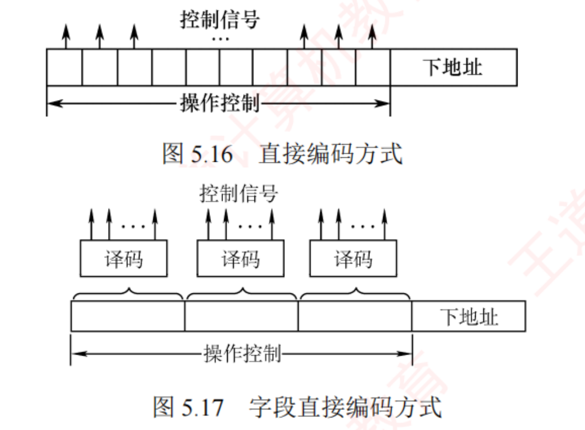
图 5.16 与图 5.17（书 p.232） 直接编码 vs 字段直接编码 。上半（图 5.16 直接编码） ：操作控制区里每一位直接对应一个微命令 ，要发就置 1，不需要任何译码器 。下半（图 5.17 字段直接编码） ：操作控制区被切成若干互斥段，每段各接一个译码器 ，译码后在本段的互斥微命令里激活一个。两张图的差别只有一样东西——有没有那几个译码器 ，而这一样东西同时决定了字长（长 vs 短）和速度（快 vs 略慢）。
必记结论 · ⭐ 三种编码方式对照（15 题说法 Ⅲ 的坑就在这张表的最后一行 ）
直接编码 字段直接编码 字段间接编码 做法 每一位对应一个微命令 ，无须译码切成互斥段 ，每段独立编码后译码 某字段的含义由另一字段的编码共同决定 分段原则 — 互斥的放同一字段，相容的放不同字段 ；每段位数不宜过多；每段还要留一个编码表示"本字段无操作" — 字长 最长 （n 个微命令要 n 位）较短 最短 速度 最快 （并行发出、无译码延迟）略慢 （一级译码）最慢 （两级依赖译码，仅用于特定场合）
⚠️
「效率最低的是直接编码」永远是错的 ——
直接编码是三者中效率最高的 ，它只是
费控存 。
字长与速度这两列，方向正好相反。
我的补讲 · 书上那个"8 个微命令"的例子，是理解三种编码的最快路径 （值得亲手算一遍）
题设 ：有两类互斥操作——ALU 操作（加、减、与、或，共 4 种） 与存储器操作（读、写、取指、间址，共 4 种） 。
ALU 内部互斥、存储器内部互斥，但 ALU 与存储器之间相容 （可以"加法 + 写内存"同时发生）。三种编码各要几位 ：直接编码：8 位 ——每个微命令占一位，一位不能省。字段直接编码：6 位 ——分成两个字段，每字段 4 种命令 + 1 种"无操作" = 5 种状态 ⟹ ⌈log₂5⌉ = 3 位 ，两字段共 6 位。字段间接编码：4 位 ——只用一个 3 位操作字段 + 一个 1 位类型字段 ：类型 = 0 时 001 表示 ALU 加法，类型 = 1 时 001 表示主存读。潜台词是 ：三种编码是同一条权衡曲线上的三个点 ——越省位数，就越要靠译码把"含义"重新算出来，于是越慢 。
字段间接编码之所以"仅适用于特定场合"，是因为它把 8 位压到 4 位，代价是每次都要先看类型字段才知道操作字段什么意思 ，等于串了两级译码。所以能考 Z ：凡是问"哪种最省控存"答字段间接；问"哪种最快"答直接编码；问"实际最常用"答字段直接编码 ——它在两头之间 。
陷阱 · ⭐⭐ 两个「+1」是本节最大的失分点 （2012 真题 + 综 04 + 06 题说法 Ⅰ 全在考它）
规则一（操作控制字段） ：某字段有 n 个互斥微命令，所需位数不是 ⌈log₂n⌉，而是 ⌈log₂(n+1)⌉ ——
必须留出一个编码表示「本字段不发出任何微命令」 。例：3 位字段最多只能表示 7 个 互斥微命令（不是 8 个），通常用 000 表示无操作。 规则二（判别测试字段） ：有 m 个可判定的外部条件，所需位数是 ⌈log₂(m+1)⌉ ——要留一个编码表示「不转移」 。06 题说法 Ⅰ 就错在这 ：「两组互斥微命令各 4 个和 9 个，分别只需 2 位和 4 位」——
错，应是 ⌈log₂5⌉ = 3 位和 ⌈log₂10⌉ = 4 位 。但「+1」不是每次都咬人 ：只有当组内微命令数恰为 2 的整数幂时，加不加 1 才会改变位数 ——这是我做完这一节所有题后总结出的判据，下面用两道真题验证。
我的补讲 · 🔍 2012 真题其实"验不出"那条 +1 规则 ——我算完两道题才发现这件事，请务必看完
2012 真题（选 22） ：字段直接编码，33 个微命令分成 5 个互斥类，各含 7、3、12、5、6 个，问操作控制字段至少几位。书答 ：各需 3、2、4、3、3 位，共 15 位 （选 C）。🐍 我的复算 ：各组 +1 得 8、4、13、6、7 ⟹ ⌈log₂⌉ = 3、2、4、3、3 = 15 位 ✅ 与书答一致。但请注意一件事 ：如果不加那个 +1 呢？ ⌈log₂7⌉=3、⌈log₂3⌉=2、⌈log₂12⌉=4、⌈log₂5⌉=3、⌈log₂6⌉=3 ——还是 15 位！ 潜台词是 ：2012 那道真题根本区分不出你有没有掌握「+1」规则 ，因为 7、3、12、5、6 没有一个是 2 的整数幂 。真正能区分的是书上的综 04 ：5 个互斥类各含 5、8、2、15、22 个微命令——其中 8 = 2³、2 = 2¹ 是 2 的整数幂 。
加 +1：(6,9,3,16,23) ⟹ 3、4、2、4、5 = 18 位；不加：(5,8,2,15,22) ⟹ 3、3、1、4、5 = 16 位。差 2 位。 所以能考 Z ：判据是——组内微命令数恰为 2 的整数幂时，「+1」才会把位数顶上去一位 。
考场上无论会不会咬人，一律先加 1 再取对数 ，因为加了永远不会错，不加则可能整题错。
必记结论 · ⭐⭐ 微指令字长设计三步法 （本节唯一的计算模板，五道综合题全考它，已进模板手册 ）
操作控制字段产生本步的微命令
判别测试字段选转移条件
后继地址字段下条微指令在哪
字段 直接编码时 字段直接编码时 操作控制字段 位数 = 微命令总数 （每位一个）位数 = Σ ⌈log₂(第 i 组微命令数 + 1)⌉ 判别测试字段 ⌈log₂(可判定外部条件数 + 1)⌉ （与编码方式无关；「+1」是"不转移"）后继地址字段 ⌈log₂(控制存储器单元数)⌉ = ⌈log₂(微指令总条数)⌉ （与编码方式无关）
配套的容量公式 ：
CM 容量 ＝ 微指令总条数（向上取到 2 的幂）× 微指令字长
微指令总条数 ＝ Σ（每条机器指令的微指令数）＋ 公共微程序的微指令数
必记结论 · 三道题把三步法走一遍 （🐍 全部复算零误差，其中综 03 自带检验点 ）
题 题设 算法 答案 综 03 （直接编码）28 个微命令；CM 为 512×40 位；6 个互斥的可判定外部条件 操作控制 = 28 位 （直接编码，位数 = 微命令数）；后继地址 = ⌈log₂512⌉ = 9 位 ；判别测试 = ⌈log₂(6+1)⌉ = 3 位 28 + 3 + 9 = 40 位 ⭐ 恰好等于题给的控存字长 40 位 ⟹ 自洽检验通过 综 04 （字段直接编码）5 组互斥微命令各 5、8、2、15、22 个；条件测试字段 2 位；微指令字长 28 位 操作控制 = ⌈log₂6⌉+⌈log₂9⌉+⌈log₂3⌉+⌈log₂16⌉+⌈log₂23⌉ = 3+4+2+4+5 = 18 位 ；后继地址 = 28 − 18 − 2 = 8 位 CM 容量 = 2⁸ × 28 位 ＝7168 位 综 02 （控存容量）80 条指令；每条指令平均 4 条微指令，其中取指微指令公用 ；微指令 32 位 总条数 = (4−1)×80 + 1 = 241 ；向上取 2 的幂 = 256 CM = 256×32 位 = 1KB
⚠️
审题分辨"直接编码"还是"字段直接编码"的关键词 ：出现
「直接控制（编码）方式」 就用
位数 = 微命令数 ；
出现
「相斥类微命令组」「分成 n 个互斥类」 就用
Σ⌈log₂(nᵢ+1)⌉ 。
两者差别巨大（综 03 是 28 位，综 04 只要 18 位），审错整题崩。
我的补讲 · 2014 真题的「+2 条公共微指令」是命题人精心设计的一脚 （🐍 复算坐实）
题 ：32 条指令，公共取指微程序含 2 条微指令 ，各指令的微程序平均 4 条 ，采用断定法，问后继地址字段至少几位。算 ：32 × 4 = 128 条，再加公共的 2 条 ⟹ 总共 130 条 ⟹ ⌈log₂130⌉ = 8 位 （选 C）。潜台词是 ：128 恰好是 2⁷ 。如果忘了加那 2 条，你会算出 ⌈log₂128⌉ = 7 位，选错 。
命题人把指令数设为 32、微指令数设为 4，就是为了让乘积正好落在 2 的幂上 ——
然后用那 2 条公共微指令，把你顶过 128 这条线。 所以能考 Z ：看到微指令条数计算题，先算总条数，再看它离最近的 2 的幂有多远 。
凡是算出来恰好等于 2ⁿ 的，几乎一定是漏了什么"公共微指令 / 无操作编码" ——这是本节两道真题共用的出题手法。 注意 2014 与综 02 的方向相反 ：2014 是"32×4 再 +2"（乘完再加） ，综 02 是"(4−1)×80 + 1"（先减再乘再加） 。
差别全在题干那半句：「平均 4 条微指令」里包不包含 公共取指微指令 ——包含就要先减 1 再乘，不包含就直接乘完再加。审题时圈出这半句。
我的补讲 · 断定方式的定义，四个选项里有两个长得几乎一样 （第 19 题）
书上说 ：断定方式是在当前微指令中显式指定下条微地址 。第 19 题的四个选项 ：A 用 PC 产生 （❌，PC 管的是机器指令）；B 用 μPC 产生 （❌，那是增量方式 ）；
C「通过后继微指令地址字段由设计者指定，或转移控制字段控制产生」 （✅ 答案 ）；D「通过指令中指定一个专门字段」 （❌，是"微指令"里的字段，不是"指令"里的 ）。潜台词是 ：B 和 C 的区别就是"谁说了算" ——增量方式是硬件自动加 1（机器说了算） ，断定方式是微程序设计者在写微程序时把地址填进下址字段（人说了算） 。
"断定"两个字的意思就是"当场断定，不用推算" 。D 项那个"指令 vs 微指令"的一字之差非常毒 ——机器指令里绝不可能有微地址字段 ，
因为微程序对程序员完全透明 ，指令格式里不可能暴露 CM 的地址。
知识串联 · 「留一个编码表示无操作」——ch4 和 ch5 用的是同一招
5.4 字段直接编码 n 个互斥微命令要 ⌈log₂(n+1)⌉ 位 ，那个 +1 是「本字段不发出任何微命令」 。5.4 判别测试字段 m 个可判定条件要 ⌈log₂(m+1)⌉ 位 ，那个 +1 是「不转移」 。ch4 扩展操作码 4 位操作码要表示 15 条三地址指令，只能用 0000～1110，必须留下 1111 作为"向下一级扩展"的窗口 ——同样是"留一个" 。ch3 Cache 有效位 V ：也是"留一位表示这块还没装东西"。数据结构视角 哨兵节点、空指针 NULL ——都是"在值域里留一个特殊值表示'什么都没有'" 。但要分清什么时候不 加 1 ：ALU 的 7 种操作要 ⌈log₂7⌉ = 3 位，不加 1 ——
因为"直送 A（mova）"本身就是一种操作，ALU 不存在"什么都不做"的状态 。
判据：这个部件有没有"闲着"的合法状态？有就加 1，没有就不加。
微指令的地址形成方式与格式
考点追踪：微指令后继地址字段位数与微指令条数的关系（2014）
必记结论 · 下条微地址的两种形成方式与三种典型情形
两种基本方式 ：① 增量方式（计数器方式） ——由 μPC 自动加 1 生成，适用于顺序执行段；② 断定方式（下址字段方式） ——在当前微指令中显式指定 下条微地址。图 5.15 的微程序控制器采用的就是断定方式。 三种典型情形 ：① 微程序入口地址 ——由 IR 的操作码 经微地址形成部件产生；② 顺序执行 ——增量方式用 μPC+1，断定方式则要在每条微指令的下址字段里填顺序地址；③ 条件分支 ——微地址形成部件结合下址字段给的转移目标与条件信号 共同决定。
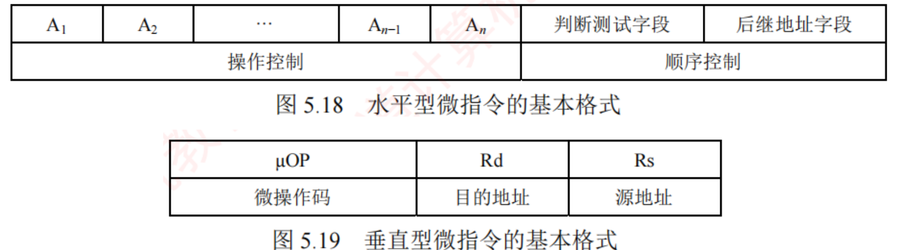
图 5.18 与图 5.19（书 p.233） 水平型 vs 垂直型微指令格式 。上半（水平型） ：A₁ | A₂ | … | Aₙ | 判断测试字段 | 后继地址字段，前面一大片是"操作控制"，后面两段是"顺序控制" ；每一位（或每一字段）直接对应一个微命令，一条微指令可同时定义多个并行微操作 。下半（垂直型） ：μOP | Rd | Rs，即微操作码 + 目的地址 + 源地址 ——格式和一条机器指令几乎一模一样 ，这正是"垂直型好写"的原因，也是它"一条只能做一个基本微操作"的原因。
必记结论 · ⭐ 水平型 vs 垂直型（四条对比，全是选择题原句）
水平型微指令 垂直型微指令 一条能做多少事 可同时定义多个并行微操作 通常只定义一个基本微操作 并行能力 / 效率 强、高 弱、低 微指令字长 长 短 微程序长度 短 长 编写难度 难 易 （像写机器指令）结构特征 操作控制字段按位/按段对应微命令 有微操作码字段 ，需译码
⚠️
归属关系必须记牢 ：
直接编码、字段直接编码、字段间接编码三种都属于水平型微指令 ——
"编码方式"和"格式类型"是两个维度，别把"字段编码"当成垂直型。
⚠️
13 题的四个干扰项 ：「控制信号经编码产生」「强调并行控制」都是
水平型 的特征，「格式垂直表示」是
望文生义的假选项 ——
垂直型的唯一判据是「采用微操作码」 。
陷阱 · 三个"望文生义"的假命题 （第 15、16、17 三题各埋一个）
① 「采用微程序控制器的处理器称为微处理器」 （第 15 题 Ⅰ）❌ ——
"微处理器"指的是把 CPU 集成在单个芯片上的处理器，与用不用微程序毫无关系 。纯粹是两个都带"微"字造成的误认。 「若采用微程序控制方式，则可用 μPC 取代 PC」 （第 16 题 Ⅱ）❌ ——
μPC 只知道微程序内部的下一步，不知道下一条机器指令在哪 。两个计数器分属两个层次，缺一不可。 「指令周期也称 CPU 时钟周期」 （第 16 题 Ⅳ）❌ ——只有单周期 CPU 里两者才相等 。第 15 题答案 B（Ⅱ、Ⅳ） 、第 16 题答案 C（只有 Ⅲ：控制存储器可以用 ROM 实现） 。顺带记住第 17 题 ：一个微程序的周期对应一个指令周期 （答案 A）——
因为一条机器指令对应一个微程序，执行完这个微程序就等于执行完这条指令 。不是时钟周期（那是一条微指令的量级）。
知识串联 · 「控制存储器是 ROM」这一条，把 ch3 的存储器分类接了进来
ch3 3.2 ROM 的典型用途 ：BIOS、字库、控制存储器 CM ——三者的共同点是"内容出厂即定、运行中只读不写" 。此处 5.4 微程序由体系结构设计者写好，固化进 CM，用户改不了 ⟹ 用 ROM 天经地义 。2017 真题的干扰项 「控制存储器按内容访问」❌ ——"按内容访问"是相联存储器的特征 （ch3 的 TLB、全相联 Cache 才按内容访问 ）。这是一道跨到 ch3 的干扰项，答对它靠的是 ch3 的知识而不是 ch5 的。 现代变体 现在有些机器用可写控制存储器（WCS） 做微程序更新，但统考口径一律按 ROM 答 。做本节的题时，只要看到"控制存储器"三个字，先在脑子里贴三个标签：CPU 内 · ROM · 按微地址访问。
我的补讲 · 综 05 那道"节拍安排"题 ——它藏着一个只有单总线机器才有的坑
题 ：写出取指周期的微操作命令及节拍安排，前提是
(PC)+1 → PC 需要由 ALU 完成 。
书上的参考答案 （四拍）：
(PC) → MAR，1 → R PC 通过总线送 MAR
M(MAR) → MDR，(PC)+1 → R2 PC 通过总线送 ALU 完成加 1
(MDR) → IR，OP(IR) → 微操作命令形成部件 MDR 通过总线送 IR
(R2) → PC R2 通过总线送 PC
潜台词是 ：
题干那句"PC+1 需要由 ALU 完成"是整道题的机关 ——
它意味着 PC 自增不再是"免费的顺风车"，而要真的占用总线和 ALU 。
于是自增被拆成了两拍 ：
先把 PC 送进 ALU 算出结果存到 R2（第 2 拍），再把 R2 送回 PC（第 4 拍） 。
所以能考 Z ：
书上答案后面那句"此题的关键是要考虑总线冲突的问题"就是提示 ——
第 2 拍里 PC 送 ALU 与 M(MAR)→MDR 能并行，是因为一个走内部总线、一个走外部数据总线（和 2009 真题的合并技巧同源） ；
但第 4 拍的 (R2)→PC 必须单独占一拍，因为它要走内部总线，而第 3 拍那条总线被 MDR→IR 占着 。
⚠️
对照 5.3.4 的范例 ：那里写的是"暂不考虑 PC 增量"，所以取指只要
N+2 拍；
一旦要考虑而且自增要经 ALU，就得再加拍 。
做题时先看题干有没有豁免 PC 增量。
我的补讲 · 本节的"位数计算"一共有几种，一次列全
要算什么 式子 加不加"+1" 操作控制字段（直接编码） = 微命令总数 —（不涉及） 操作控制字段（字段直接编码） Σ ⌈log₂(第 i 组微命令数 + 1 )⌉ 加 （本字段无操作）判别测试字段 ⌈log₂(可判定条件数 + 1 )⌉ 加 （不转移）后继地址字段 ⌈log₂(控存单元数)⌉ = ⌈log₂(微指令总条数)⌉ 不加 μPC 位数 = 后继地址字段位数 不加 操作码位数 → 指令条数 n 位 ⟹ 最多 2ⁿ 条 不加
潜台词是 ：
"加不加 1"的判据只有一条——这个字段有没有"什么都不做"这个合法状态 。
操作控制字段和判别测试字段有（不发命令 / 不转移），所以加 ；
后继地址字段没有（下一条微指令总得有个地址），所以不加 。
⚠️
最容易搞混的是"微指令总条数"和"控存单元数" ：
前者是实际用了多少条，后者要向上取到 2 的幂 。
算地址位数 时两者等价（都取 ⌈log₂⌉），算容量 时必须用取整后的 2 的幂 （综 02：241 条 ⟹ 256 单元 ⟹ 1KB）。
知识串联 · 「⌈log₂(n+1)⌉」这个式子，你在 ch2 也见过一个近亲
5.4 n 个互斥微命令 + 1 个"无操作" ⟹ ⌈log₂(n+1)⌉ 位 。ch3 海明校验 k 个校验位要覆盖 n 个信息位，需满足 2ᵏ ≥ n + k + 1 ——那个 +1 是"无错"这个状态 。同样是"留一个编码表示什么都没发生" 。ch2 补码 n 位补码表示范围 −2ⁿ⁻¹ ～ 2ⁿ⁻¹−1，正负不对称 ——因为 0 只有一个编码，占了正数那边的一格 。还是"特殊状态要占编码"。 ch4 扩展操作码 留出一个码字作为向下扩展的窗口。 408 里凡是算编码位数，先问一句："除了我要表示的那些东西，还有没有一个'什么都不是'的状态需要占位？"有就 +1。
这一问能同时救下 5.4、ch3 海明码、ch4 扩展操作码三处的计算。
5.4.4 硬布线 vs 微程序：一张表收尾
考点追踪：硬布线控制器和微程序控制器的特点（2009） · 主存储器和控制存储器的区别（2017）
必记结论 · 表 5.2 两种控制器对比（2009 真题原题）
对比项 微程序控制器 硬布线控制器 工作原理 控制信号以微程序形式存放在 CM 中，执行时读出 控制信号由组合逻辑电路根据指令码、状态和时序即时产生 执行速度 慢 （每条微指令都要访问 CM）快 （只受电路延迟限制）规整性 较规整 烦琐、不规整 应用场合 CISC CPU RISC CPU 易扩充性 易扩充修改 扩充修改困难
一句话记法 ：
硬布线 = 组合逻辑即时产生 ⟹ 快、但改不动（RISC 用）；微程序 = 存储程序读出来 ⟹ 慢、但好改好扩（CISC 用）。
⟹
题干说"实时性要求高"选硬布线，说"需要灵活修改指令系统"选微程序。
必记结论 · 主存储器 MM vs 控制存储器 CS（2017 真题，逐行对照，错一行就错整题 ）
主存储器 MM 控制存储器 CS（CM） 位置 CPU 外 CPU 内（在控制器里） 存什么 指令 + 数据 微指令（微程序） 器件 RAM + ROM（主要是 RAM） ROM（只读，机器运行时只读不写） 访问方式 按地址访问 按地址（微地址）访问 ⚠️ 不是"按内容访问"
⚠️
2017 真题的答案 B 就错在"按内容访问" ——
"按内容访问"是相联存储器（如 TLB、全相联 Cache）的特征 ，
控制存储器老老实实按微地址访问 。
这是一个跨到 ch3 的干扰项。
知识串联 · 本节四根跨章的线，每一根都在别处被单独考过
ch3 3.2 控制存储器用 ROM ——CM 是 ROM 最典型的用途；而 「按内容访问」是相联存储器（TLB / 全相联 Cache） ，2017 真题正是拿它来当干扰项。ch4 4.1 字段直接编码的「互斥 / 相容 + 留一个无操作编码」 ，与扩展操作码的「短码不能是长码的前缀、要留出扩展窗口」 是同一手法 ——都在拿编码空间换字长，都要预留一格 。⌈log₂(n+1)⌉ 与扩展操作码的逐级前缀口径是一家人。 ch4 4.4 CISC 用微程序、RISC 用硬布线 （表 5.2 最后两行）——回到 ch4 那张 CISC/RISC 对照表，这一行就是它的第 7 条 。5.1 / 5.2 μPC 自增与 PC 自增是两个层次上的两个计数器 ：PC 走机器指令，μPC 走微指令，一个指令周期里 PC 动一次、μPC 动好几次 。ch2 / ch4 状态标志送 CU 决定条件分支 ——同一批标志位（ZF/CF/OF/SF）在 ch2 由 ALU 产生、在 ch4 被条件转移指令使用、在这里被 CU 读取 ，三处是同一组触发器 。结构同构 微指令的「操作控制 + 顺序控制」二段式 ↔ 机器指令的「操作码 + 地址码」二段式 ——
把微指令当成"CPU 内部的机器指令"来理解，整节都会变简单 ；垂直型微指令更是长得几乎一模一样。
背景 · 考试不碰
5.4.3 里
字段间接编码 那段的电路实现细节（「译码线路更为复杂，时间开销较大，仅适用于特定场合」）——
统考只考"它最省位数、最慢"这两句结论，从不考它怎么接线 。
另外，
综 01 那道 MIPS 计算题 （主频 200MHz、指令周期含几个 CPU 周期 → 求 MIPS）
本质上是 ch1 1.3 的性能指标题 ，
只是换了个"微程序"的壳，
本节不重复讲 ——公式在
第 1 章 。
（🐍 顺手复算：0.025μs/条 →
40 MIPS ；0.1μs/条 →
10 MIPS ，与书答一致。）
5.5 异常和中断机制
📄 p.242
我的补讲 · ⭐ 这五页是全章性价比最高的五页 ——先看这一段再决定花多少时间
数据 ：5.5 只有 5 页 ，却压着 4 道统考真题 （2015、2016、2020、2021），真题密度 0.80 / 页，全章第一
（对照：5.4 = 0.50、5.1 = 0.50、5.2 = 0.40、5.3 = 0.36）。书上的考点追踪还标着「对中断和异常事件的判断（2009、2016、2020、2025）」——四考，2025 刚考过。 潜台词是 ：这一节薄，但一点都不能省 。而且它没有一道综合题、没有一张要裁的图、没有一个公式 ——
整节就是"分类 + 判断"，全部是可以在一晚上背完的东西 。换算成投入产出比，它是全章最划算的一节。 所以能考 Z ：本节只要吃透两张表就够了 ——「故障/自陷/终止/外中断」的四行表（断点在哪、处理后回哪） ，
以及「这是异常还是中断」的一条判据 。下面两张表就是全节的核心，其余都是它们的注脚。还有一件事让这一节特殊 ：它是 408 四科交汇最深的地方 ——组原讲硬件怎么检测与响应，
《操作系统》讲服务程序与进程切换，ch7 I/O 讲中断方式的优先级与屏蔽字。在这里多花的每一分钟，OS 那边都会还给你。
5.5.1 异常和中断的基本概念
考点追踪：异常事件的性质（2015） · 异常响应的时机（2023）
必记结论 · 异常（内中断）vs 中断（外中断）
异常（内中断） 中断（外中断） 来源 CPU 执行指令过程中，由其内部检测到的同步 事件 由外部设备（如 I/O 控制器）发起的异步 事件 举例 除零、非法操作码、缺页 外设数据就绪、传输完成、时钟到时 与当前指令 由当前指令直接引发 ，确定、可重现 与当前指令无关 ，随机 检测时机 指令执行过程中或完成时立即响应 仅在一条指令完整执行结束后才被检测 （指令执行期间不采样中断信号）处理后 通常需重新执行第 i 条指令 （如缺页调入后重试访存）从第 i+1 条指令继续
书上原话 ：
异常和中断的处理流程大致相同，这也是为什么有些教材把它们统称为中断的原因。
知识串联 · Cache 缺失 vs 缺页 ——一道题就能验出你 ch3 学没学透
Cache 缺失 纯硬件处理，无须异常处理程序，CPU 不进内核 ——缺失时硬件自动去主存取块、替换、重试，程序完全不知情 。缺页 属于故障类异常，必须调出操作系统内核的缺页异常处理程序 ，处理后重新执行该指令 。ch3 3.5 / 3.6 的那句话 「Cache 对程序员透明；虚拟存储对程序员透明，但对操作系统不透明」 ——这里就是它的硬件侧证据 ：
透明到连异常都不用报的是 Cache，要惊动 OS 的是缺页 。5.6 的 2014 综 03 那道题同时数"读磁盘几次"和"查 TLB 几次" ，答案是 1 次 和 1001 次 ——
差别正是"缺页只发生一次，而 TLB 每次访存都要查" 。一句话：Cache 缺失是硬件的家务事，缺页是要报告给操作系统的事故。
我的补讲 · 「自陷一定是出现异常情况才发生的吗」 ——第 01 题，一个字改变整道题
书上说 ：自陷是一种预先安排的、用于主动转入操作系统内核的同步事件 ，通过特殊指令（如断点指令）或特定标志（如单步跟踪标志）显式设置 。潜台词是 ："异常"这个词在中文里有两个意思，命题人在这里做文章 ——技术含义 ：异常 = 内中断，是一个分类名词。自陷确实属于异常（内中断） 。日常含义 ：异常 = 出错了、不正常。而自陷恰恰是程序故意 安排的，一点都不"出错" ——系统调用、断点调试都是正常流程 。所以能考 Z ：第 01 题的 C 项「一定是出现某种异常情况才会发生自陷」是错的（答案） ；
而 A（人为预先设定）、B（可由访管指令或自陷指令进入）、D（进入内核程序执行）三项全对 。2020 真题（选 12）考的是同一个词的另一面 ：A 项说自陷是"外部中断事件"——错，它是内部异常 。
两道题合起来：自陷"是异常（分类上）、不是出错（语义上）、更不是外中断（来源上）"，三句话三个维度。
我的补讲 · 「中断隐指令」——一个书上没用这四个字、但考试爱用的名词
书上把它叫"响应过程" ：关中断 → 保存断点和程序状态 → 识别事件类型并转移 ，整个响应过程由硬件自动完成，具有高度原子性 。这三步在很多教材（和统考题干）里被合称为「中断隐指令」。 潜台词是 ：「隐」字是关键——它不是一条真正的机器指令 ：指令系统里没有它的操作码 ，汇编程序员写不出来 ，反汇编也看不到它 ；它是硬件在指令边界自动插入的一串微操作 ，作用相当于一条指令，所以叫"隐指令"。所以能考 Z ：问"中断隐指令完成哪些工作"，答那三步 ；问"中断隐指令是不是一条真正的指令"，答不是 ；
问"保存通用寄存器现场是不是中断隐指令做的"，答不是 ——隐指令只保存断点和 PSW，其余通用寄存器由中断服务程序（软件）保存 。2020 真题（选 12）那句"CPU 执行陷阱指令后会自动地根据不同陷阱类型进行相应的处理"，说的就是这套硬件动作。
知识串联 · 「用栈保存现场」——后进先出天然支持嵌套，这不是巧合
此处 5.5.3 断点与 PSW 被压入内核栈 ，书上说这样"天然支持中断与异常的嵌套处理 "。为什么是栈 多重中断的发生顺序与返回顺序天然相反 ——后发生的中断先返回。这正是 LIFO 的定义 。
若用固定单元存断点，第二次中断就会把第一次的断点覆盖掉，永远回不去了。 ch4 4.3 函数调用的栈帧 ：同样是"后调用的先返回"，同样用栈。跨科 · 数据结构 栈的三大经典应用：递归、表达式求值、括号匹配 ——共同点全是"嵌套结构" 。跨科 · 操作系统 每个进程有自己的内核栈 ，这正是"中断嵌套 + 进程切换"能同时工作的原因 。一句话：凡是"嵌套"的地方就一定有栈；反过来，看到题目说"支持多重中断"，就该想到"断点存在栈里"。
5.5.2 异常和中断的分类
📄 p.242
考点追踪：异常或中断处理后指令重新执行的断点（2021） · 自陷的原理和性质（2020） · 对中断和异常事件的判断（2009、2016、2020、2025）
必记结论 · ⭐⭐ 故障 / 自陷 / 终止 / 外中断 四行表 ——本节的心脏，2021 真题就是照它出的
事件 归属 检测时机 断点（返回地址） 处理后 故障 Fault 缺页 · 非法操作码 · 除零 内部异常 指令启动之后、执行完成之前 （结果尚未提交）当前指令的地址 可恢复 ⟹ 重新执行当前指令 ；不可恢复 ⟹ 终止进程 自陷 Trap 系统调用 · 断点调试 · 单步跟踪 · MIPS 的 teq 内部异常 指令正常执行完毕之后 （结果已完整提交）自陷指令的下一条 指令地址 从下一条指令继续 终止 Abort 控制器出错 · 存储器校验错 · 总线错误 硬件中断 指令执行过程中；并非由某条特定指令引发，不可预测 可以是当前指令或下一条指令的地址 无法恢复 ⟹ 终止程序 / 重启 外中断 I/O 完成 · DMA 结束 · 打印机缺纸 · 时钟 硬件中断 一条指令执行结束、取下条指令之前 下一条指令的地址 从下一条指令继续
⭐ 一句话口诀 ：
「故障退回重做，自陷与中断都往下走，终止直接不走了。」
⭐ 两条归属结论 ：
故障 + 自陷 ＝ 程序性异常（软件中断） ；
终止 + 外中断 ＝ 硬件中断 。
我的补讲 · 为什么故障要"退回重做"、自陷要"往下走" ——不是死记，是由"结果提没提交"决定的
书上说 ：故障是在指令启动之后、执行完成之前被检测到 ，CPU 在尚未提交该指令结果时即响应 ；
而自陷是在指令正常执行完毕之后才被触发的，因此 CPU 能够完整提交该指令的结果 。潜台词是 ：断点写哪个地址，只取决于一件事——"这条指令算不算干完了"。 故障 ：指令干到一半被拦下，它的效果一件都没落地 （缺页时那次访存根本没成功）。
所以处理完必须从这条指令的开头重来一遍 ，否则这条指令就白执行了 ⟹ 断点 = 当前指令地址 。自陷 ：指令完完整整执行完了 （syscall 就是要进内核，它的"功能"已经实现），再重做一遍等于系统调用调了两次 ⟹ 断点 = 下一条指令地址 。外中断 ：中断根本不是这条指令引起的，而且要等它执行完才采样 ⟹ 当然 = 下一条指令地址 。所以能考 Z ：2021 真题（选 13）问「处理程序执行后必须回到当前指令重新执行的是哪个」 ，
选项里有系统调用（自陷 ⟹ 下一条） 、DMA 传送结束（外中断 ⟹ 下一条） 、打印机缺纸（外中断 ⟹ 下一条） ，
只有"缺页"是故障 ⟹ 当前指令 ，答案是 B。09 题的一字之差 ：外中断的断点是「下一条指令的地址」 ，不是「刚执行完的那条指令的地址」 ——这两句听起来像同一件事，但地址差一条指令。
必记结论 · ⭐ 「这是异常还是中断」的唯一判据 （2009 / 2016 / 2020 / 2025 四考，本章最高频考点）
判据一句话 ：这件事是不是「当前这条指令自己干出来的」？ ✅ 是 ⟹ 异常（内中断） ：缺页 · 整数除 0 · 存储保护错 · 无效操作码 · 地址越界 · 运算溢出 · 系统调用 · 断点 。❌ 否 ⟹ 中断（外中断） ：DMA 传送结束 · I/O 完成 · 打印机缺纸 · 键盘缓冲满 · 采样定时时间到 · 电源掉电。命题人最爱的三个陷阱 ：「访存时缺页」是异常不是中断 （2016 真题 A 项 ）——它发生在指令执行途中，是这条指令自己的访存引发的。「自陷」是内部异常不是外部中断 （2020 真题 A 项 ）——虽然它是"人为预先设定"的，但触发者是指令本身 。「无效操作码」是内部异常 ——译码阶段 CPU 自己发现的，没有任何外设参与。
陷阱 · 2015 真题（选 10）D 项 ：不是所有内部异常都能"返回原断点继续执行"
题干 ：内部异常分故障、陷阱、终止三类，问下列叙述哪个错误 。三个正确项先记住 ：① 内部异常包括非法指令、地址非法、校验错、页面失效、运算溢出、除数为零，都在指令执行过程中产生 ；
② 内部异常由 CPU 自身检测，不必通过外部信号通知 CPU ；③ 内部异常不能被屏蔽，一旦出现应立即处理 。D 项（答案） ：「内部异常处理后都能回到原断点执行」——错 。
对于非法指令、除数为零这类不可恢复 的故障，无法通过异常处理程序修复，只能终止进程 。这条和上面那张四行表要对着看 ："故障 ⟹ 重新执行当前指令"这句话只对可恢复 的故障成立 （缺页是典型的可恢复），
不可恢复的故障（非法指令、除零）直接杀进程 。四行表里我特意把这两种情况都写进了"处理后"那一列。
我的补讲 · 「内部异常能不能被屏蔽」 ——一条容易和"可屏蔽中断"混起来的结论
书上说 （2015 真题解析原句）：内部异常不能被屏蔽，一旦出现应立即处理 。潜台词是 ："可屏蔽 / 不可屏蔽"这组概念只适用于外中断 ——INTR 可屏蔽、NMI 不可屏蔽 。
而内部异常压根不在这个分类体系里 ：它是当前指令自己捅出来的娄子，不处理就没法继续执行 （除零之后拿什么当结果？缺页之后拿什么当数据？）。所以能考 Z ：凡是问"某个内部异常能否被屏蔽"，答案一律是不能 。
而"响应中断的第一步是关中断"里的"关中断"，关的只是可屏蔽的外中断 ——NMI 和高优先级异常在此期间仍可能发生 （书上原话）。两句话别串台 ：「关中断」是响应过程的第一步，目的是保证保存现场的原子性 ；
「不可屏蔽」是 NMI 与内部异常的属性 。前者是动作，后者是属性。
知识串联 · 中断向量表 ——你会在三门课里各见它一次，名字略有不同
此处 5.5.3 组原口径 ：系统初始化时把各类事件的服务程序入口地址（中断向量）按类型号填入中断向量表 ；事件发生时 CPU 以类型号为索引查表转移，全程无须软件介入 。ch7 I/O 程序中断方式 会再讲一遍，并补上中断优先级排队电路与中断屏蔽字 ——那才是"多个设备同时请求怎么办"的答案 。跨科 · 操作系统 中断向量表 ＝ OS 里的"中断描述符表 / 陷阱表" ，系统调用号就是它的索引 ——这也是"系统调用属于自陷"这句话的落地方式 。数据结构视角 它本质上就是一张"以类型号为下标的函数指针数组" ——O(1) 查表，这正是"向量中断比软件轮询快"的复杂度解释 （轮询是 O(n) 地问每个设备"是不是你"）。把"向量 vs 非向量"翻译成"查表 O(1) vs 遍历 O(n)"，这组概念就再也不会记反。
我的补讲 · 「向量中断 vs 非向量中断」不是"有没有优先级"的区别 （一个很常见的误记）
书上说 ：向量中断 ——CPU 自动获取类型号，并以此为索引直接访问向量表，获取目标地址并转移，全程无须软件介入 ；
非向量中断 ——CPU 响应请求后转移至统一入口，操作系统需要依次读取各设备的状态寄存器，通过查询确定中断源 。潜台词是 ：这组概念区分的是"怎么找到服务程序的入口地址"，与优先级、与能否嵌套都无关 。找入口地址的方式 ⟹ 向量 / 非向量 ；能不能被屏蔽 ⟹ 可屏蔽 INTR / 不可屏蔽 NMI ；服务期间能不能被打断 ⟹ 单重 / 多重 。三组二分法互相独立，可以任意组合 （一个中断可以同时是"可屏蔽的、向量的、允许多重的"）。所以能考 Z ：题干问"哪种方式效率更高"答向量中断（硬件查表 O(1)） ；
问"现代系统主要用哪种"答向量中断（书上说非向量方式"现代系统已极少使用"） ；
但如果题干问的是"优先级怎么排"，那是 ch7 的中断屏蔽字的事，与向量不向量无关。
5.5.3 异常和中断的响应过程
📄 p.243
必记结论 · ⭐ 响应过程三阶段（由硬件自动完成，具有原子性 ）
关中断 ：CPU 自动屏蔽可屏蔽中断（清零标志寄存器中的 IF 位；IF = 0 关中断，IF = 1 开中断 ）。目的是保证上下文保存的原子性。
⚠️ 不可屏蔽中断（NMI）和部分高优先级异常在此期间仍可能发生。
保存断点和程序状态 ：① 断点（返回地址） ——异常通常是当前指令地址，中断则是下一条指令地址 ；② 程序状态字 PSW ——含条件码、中断允许标志、特权级。这些信息通常被压入内核栈 ，既保证安全，又天然支持嵌套 。
识别事件类型并转移 ：向量中断 ——每类事件有唯一类型号，系统初始化时把服务程序入口地址（中断向量 ）按类型号填入中断向量表 ，事件发生时 CPU 以类型号为索引直接查表转移，全程无须软件介入 ；非向量中断 ——CPU 转到统一入口，由 OS 依次读取各设备状态寄存器轮询 确定中断源，效率低，现代系统已极少使用 。
⟹
响应结束后，CPU 开始执行服务程序的第一条指令。后续处理逻辑（缺页调入、系统调用分发）由操作系统内核的软件 实现。
完整的异常与中断处理是软硬件紧密协同的结果。
陷阱 · 「响应」是硬件干的，「处理」是软件干的 ——这条线一模糊就会踩坑
硬件负责 ：关中断 → 保存断点与 PSW → 查向量表转移 （这三步合称"中断隐指令 "，它不是一条真正的指令，程序员写不出来 ）。软件负责 ：中断服务程序本身 ——保存其余通用寄存器、判断具体原因、调页 / 分发系统调用 / 打印错误、恢复现场、执行中断返回指令。典型的坑 ：「进程上下文切换由硬件完成」——错，那是内核程序（软件）做的 ；
而「异常与中断的响应 由硬件完成」——对 。两句话只差一个词，一个是"切换"一个是"响应"。 另一个说法要记住 ：正常控制流 = 顺序执行 + 转移指令产生的地址序列；异常控制流 = 被异常/中断打断后形成的意外地址序列。
进程上下文切换与异常/中断响应，都会产生异常控制流 ——这是 OS「进程切换」与组原「中断响应」在概念上的接合点。
必记结论 · 中断的四组二分法（填空式考点，逐组背）
维度 一边 另一边 能否被屏蔽 可屏蔽中断 ：走 INTR 线，可被中断屏蔽寄存器挡住不可屏蔽中断 ：走专用 NMI 线，软件挡不住 ；用于电源掉电、内存校验错 怎么找入口地址 向量中断 ：硬件直接提供服务程序入口地址 （查中断向量表）非向量中断 ：软件轮询 各设备状态寄存器确定中断源能否嵌套 单重中断 ：服务期间禁止新中断多重中断 ：允许高优先级嵌套性质归属 程序性异常（软件中断） = 故障 + 自陷硬件中断 = 终止 + 外中断
知识串联 · ⭐ 本节是全章 `.link` 最密的一节 ——九条跨科连线，逐条就地点名
枢纽 ① 缺页故障 → 重新执行当前指令 ↔ ch3 虚拟存储器的缺页处理 ↔ OS 请求分页的缺页中断 。
三科讲的是同一件事 ：组原告诉你"为什么必须重做"（结果没提交），ch3 告诉你"重做前要把页调进来"，OS 告诉你"谁去调、按什么算法淘汰"。枢纽 ② Cache 缺失由硬件处理、不进内核；缺页必须进内核 ↔ ch3「Cache 对程序员透明，虚拟存储对程序员透明但对 OS 不透明」 ——这就是那句话的硬件侧证据 。枢纽 ③ 中断在"一条指令执行结束后"检测 ↔ 5.2.1 图 5.2 的第二个菱形判断框 ↔ 2011 真题 D 项 。同一件事在本章出现了三次。 枢纽 ④ 可屏蔽/不可屏蔽 · 向量/非向量 · 单重/多重 ↔ ch7 I/O 的程序中断方式 ——ch7 会把这套分类再讲一遍，并补上优先级排队与中断屏蔽字 。在这里背熟，ch7 直接省一节。 枢纽 ⑤ 断点与 PSW 压入内核栈 ↔ ch4 的 x86 栈帧 ↔ OS 的 PCB 与现场保护 ↔ 数据结构的栈 （后进先出天然支持中断嵌套 ——这就是为什么用栈而不是用固定单元存断点）。枢纽 ⑥ 系统调用属于自陷 ↔ OS 的用户态/内核态切换 ——OS 那边的原话是"自陷是用户程序主动进内核的唯一合法途径" 。枢纽 ⑦ 关中断保证原子性 ↔ OS 的临界区与原语 （关中断是最原始的互斥手段 ）。枢纽 ⑧ 终止类异常（存储器校验错） ↔ ch3 的海明校验 / CRC ——校验电路发现错误后，就是靠这条路上报的 。枢纽 ⑨ 2014 综 03（在 5.6）一道题里同时考 Cache 命中率、TLB、缺页与流水线 ——那道题就是本节这些枢纽的集中兑现 。
背景 · 考试不碰
5.5.3 里关于「具体行为取决于体系结构设计 」的那句限定（NMI 与高优先级异常在关中断期间的行为），
以及「早期系统常采用软件轮询方式」的历史沿革，统考只考"非向量中断靠软件轮询、效率低"这一句结论 ，
不考具体是哪一代机器怎么做的 。但"关中断期间 NMI 仍可能发生"这一条不能划走 ——它是"NMI 不可屏蔽"的另一种说法，属于必考的四组二分法之一。
5.6 指令流水线
📄 p.247
我的补讲 · ⭐⭐ 整章分值第一的一节，先看清它的分量再动手
数据 ：5.6 共 20 页 ，压着 18 道统考真题 （选择 15 + 综合 3），真题密度 0.90 / 页，全章第一
（对照：5.5 = 0.80 · 5.4 = 0.50 · 5.1 = 0.50 · 5.2 = 0.40 · 5.3 = 0.36）。
而且 2025 刚考 2 道、2023 与 2024 各 1 道，热度不减；2014 的两道综合题是同一道 23 分大题的上下半。 潜台词是 ：这一节是"不考才不正常"的节 。它同时占着选择题主场和综合题主场，是全章唯一两头都要的节 。而它的内容其实只有三块 ：四个公式 （时钟周期、总时间、吞吐率、超标量）——算得快就是分 ；三种冒险 （结构 / 数据 / 控制）的成因与解法对照表 ——近三年最热的是"转发能治什么、不能治什么" ；一套画时空图的机械手法 ——2012、2014、2016、2019、2023 五道真题用的是同一套画法 。所以能考 Z ：把这三块吃透，18 道真题里能稳拿 15 道以上 。下面我按这三块的顺序重排了这一节，不按书的顺序。 本节我一张图都没多裁 ：书上表 5.3～5.9 和三道综合题的时空图全部用可搜索的网格表重排 ——
时空图本来就是网格，重排比裁图清楚，而且窄屏能收缩 （承 CLAUDE.md §6「能重排就不裁图」）。
5.6.1 指令流水线的基本概念
必记结论 · ⭐ 提升并行性的两条途径（01 题就考这一句，别搞反 ）
时间上的并行 空间上的并行 做法 把一个任务分解为多个子阶段 ，各阶段由专用功能部件依次处理 ，允许多个任务在不同阶段同时推进 在一个处理器内配置多个相同的功能部件 ，使其并行工作 叫什么 流水线技术 超标量处理器 本质 分时复用同一套功能部件 复制多套功能部件
⚠️
01 题 A 项的坑 ：「流水线技术通过复制多个功能部件实现空间并行处理」——
错，那是超标量。流水线是时间并行。
⚠️ 同题另两个坑：
CISC（如 x86）也广泛采用流水线 （不是 RISC 专属）；
流水线在单核 CPU 里就能实现 （不需要多核）。
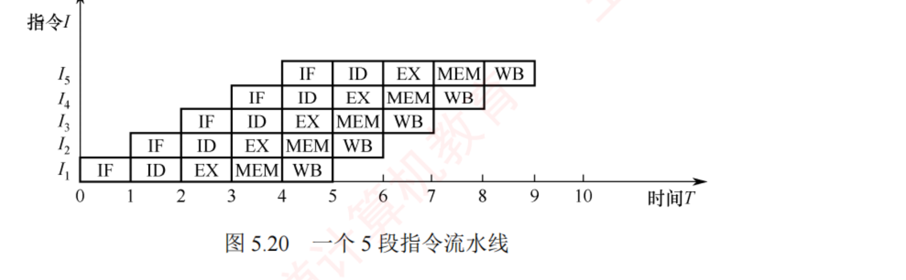
图 5.20（书 p.247） 一个 5 段指令流水线的理想执行时序 。I₁～I₅ 五条指令阶梯状错开一拍进入，第 k 条指令处于 ID 段时，第 k+1 条正好开始 IF 。这张图要读出的是"满载"的含义 ：当第一条指令进入 WB 段时，五个流水段里各有一条不同的指令，此时最多可同时有 5 条指令在不同阶段推进 。理想情况下（无冒险、无停顿），每个时钟周期都有一条新指令进入、一条指令完成，CPI 趋近于 1 。
必记结论 · 五段流水线的段划分（书上脚注：本书的划分参考了历年统考真题 ）
IF 取指 （从指令存储器/缓存读指令）→ ID 译码/读寄存器 （译码并从寄存器堆读操作数）→ EX 执行/计算地址 （算逻运算或算有效地址）→ MEM 访存 （读写主存）→ WB 写回 （结果写回寄存器堆）。这五个字母在 5.2.3 已经出现过一次 ——那里讲的是"一条指令分五个阶段"，这里讲的是"五条指令各占一个阶段" 。同一套划分，两种读法。
知识串联 · ⭐ 流水线对指令集的四条要求，就是 RISC 的四条核心特征 （2011 真题原题）
流水线的要求（5.6.1） 为什么 ↔ ch4 的 RISC 特征 ① 指令长度统一 避免因变长指令导致取指周期不确定 ——变长指令连"取几个字节"都得先译码才知道，IF 段就切不出固定长度 RISC 定长指令字 ② 指令格式规整 源操作数寄存器字段位置固定 ⟹ 可以在译码完成前就预取操作数 RISC 寻址方式少、格式少 ③ 采用 LOAD/STORE 架构 只有 load/store 访存，其余只碰寄存器 ⟹ MEM 段的职责单一，流水段好划分 RISC 只有取数/存数指令访存 ④ 数据与指令按边界对齐 单次访存即可取到完整操作数 ，不会出现"跨两个周期访问"破坏流水段的原子性ch2 2.3 的数据对齐
ch4 4.1 / 4.4 「
定长指令有利于流水线 」这句话在 ch4 说了三遍却
没解释为什么 ——
答案就是上表第 ① 行 。
2011 真题 直接问「指令长度一致、按边界对齐、仅 load/store 访存是否有利于流水线」，
三条全对，答案 D 。
现实中的 x86 变长指令怎么办？先把变长指令译成定长的微操作（μop），再去流水 ——
相当于在硬件里塞了个翻译层 ，这也正是 5.4 说的「CISC 用微程序」的现代变体。
⟹
一句话：RISC 不是"为了简单而简单"，它的每一条特征都是为流水线量身定做的。
我的补讲 · 2025 真题（选 33）：「通用寄存器组中应该包含程序计数器」为什么是错的
题 ：下列关于 CPU 中的数据通路和控制器的叙述中，错误 的是——A 通用寄存器组中应该包含 PC；B 控制器中一定包含操作码译码电路；C 单周期 CPU 的控制器比多周期的更简单；D 流水线 CPU 需解决数据相关和控制相关。答案是 A。 潜台词是 ：这道题在考「用户可见 ≠ 属于通用寄存器组」 这个区别——PC 确实是用户可见的 （5.1.3 讲过，2010 真题考过）；但"可见"和"是通用寄存器"是两回事 ：通用寄存器组 GPRs 是一组能被指令用编号点名的等价寄存器 （R0～R15），
而 PC 是专用寄存器，不在这个编号空间里 （这正是 5.1 那条「机器指令中不能显式使用 PC」）。所以能考 Z ：另外三项都对 ——C 项「单周期控制器更简单」是对的 ，因为单周期一条指令只有一拍，控制信号恒定不变，不需要状态机 ；
多周期要用状态机记住"现在走到第几拍了"。⚠️ 注意"控制器更简单"与"硬件成本更高"并不矛盾 ——
单周期贵在数据通路（多份加法器、两个存储器），省在控制器 。5.3 那张六条对照表里我特意分开写了这两行。
我的补讲 · 2025 真题（选 32）：「程序的 CPI 与 Cache 缺失率无关」为什么是错的
答案是 B（它就是那个错误项）。 潜台词是 ：课本里说"基本流水线理想 CPI = 1"，那个"理想"包含三个前提 ——无冒险、无 Cache 缺失、无中断 。
现实中 Cache 一旦缺失，流水线就要停下来等主存 （书上 5.6.4 的「注意」框写得很清楚：Cache 缺失、中断或异常的发生也会引起流水线阻塞 ），
那些停顿周期均摊到每条指令上，实际 CPI 就被抬高了 。所以能考 Z ：实际 CPI = 理想 CPI + 各类停顿带来的额外周期 。
这也是 ch3 那个「平均访问时间 = 命中时间 + 缺失率 × 缺失代价」公式在 CPU 侧的表现 ——两个公式描述的是同一批停顿周期 。同题另外三项都对 ：A 不同类型指令的 CPI 可能不一样 （多周期 CPU 里乘法比加法长）；
C 单周期时钟周期以最耗时指令为准 ；D 流水线时钟周期以最长流水段为准 。C 和 D 正好是 5.3.3 与 5.6.2 那两条设计原则的原文。
我的补讲 · 「满载时最多有几条指令在流水线里」 ——一个一句话的送分点
书上说 ：当第一条指令进入 WB 段时，各流水段分别包含一条不同的指令，此时流水线达到满载状态，最多可同时有 5 条指令处于不同的执行阶段 。潜台词是 ："同时有几条指令" = 流水段数 k ，而不是"5 条指令要跑几拍"。这两个数很容易被题干绕混 ：同时在流水线里的指令数 = k （本例 5 条）；装满流水线要花的拍数 = k （第 k 拍末达到满载）；跑完 n 条指令要花的拍数 = k + n − 1 。所以能考 Z ：三个数虽然都跟 k 有关，但问的是三件事 。
做题时先把题干的问句翻译成这三个之一，再套式子。 超标量的对应说法 ：度为 m 的超标量流水线，满载时最多有 k × m 条指令在跑 （每段同时容纳 m 条）。
这就是它 CPI < 1 的直观来源。
知识串联 · 2009 与 2018 两道"算时钟周期"的真题，差别只在题干一句话 ——这组对照值得单独记
2009 选 19 四段延迟 90 / 80 / 70 / 60 ns ，题干写明「忽略流水寄存器时间 」⟹ Δt = max = 90ns 。2018 选 27 五个部件延迟 80 / 50 / 50 / 70 / 50 ps ，题干给出「流水段寄存器延时 20ps 」⟹ Δt = 80 + 20 = 100ps 。书上「注意」框 「流水段寄存器本身也引入一定时延。但在考试中，若无明确说明，则可忽略寄存器时延。」 ——这一框就是为这两道题写的 。对照 5.3.2 那条最小时钟周期公式 T ≥ T_clk_to_q + T_max + T_setup ——2018 题里那 20ps 正是 clk_to_q + setup 的合计值 。
两个公式是同一件事，5.3 给的是原理，5.6 给的是考法。 做流水线时钟周期题的第一个动作：在题干里搜"寄存器""锁存""忽略"这几个词。找到了就按它办，找不到就只取 max。
我的补讲 · 2011 真题（选 21）：三条 RISC 特征全都"有利于流水线" ——为什么三条都对
题 ：指令长度一致、按边界对齐存放、仅 Load/Store 指令访存——这三条是否都有利于简化流水线？答案 D（三条全对）。 逐条给出"为什么" （这才是这道题真正的价值）：指令长度一致 ⟹ IF 段一次取固定字节数就够，取指时间恒定 。变长指令要先看头几个字节才知道还要取多少，IF 段长度不确定 ⟹ 段切不出来 。按边界对齐存放 ⟹ 一次访存就能取到完整的指令/操作数 。不对齐时可能跨两个存储字，要访存两次 ⟹ 破坏流水段的原子性 。仅 Load/Store 访存 ⟹ 只有这两类指令用 MEM 段，其余指令的 MEM 段是空的 。若每条运算指令都能访存，EX 与 MEM 就要来回穿插，段序排不出来 。所以能考 Z ：这三条的共同点是"让每一段的工作量确定且固定" ——流水线最怕的不是慢，是"不确定" 。
把这句话记住，以后遇到"某某特征是否有利于流水线"，就问一句：它让某一段的时间变确定了吗？
5.6.2 流水线的基本实现
📄 p.248
考点追踪：流水线时钟周期的设计（2009、2025） · 流水线吞吐率的计算（2013） · 存在流水段寄存器时延的时钟周期设计（2018）
必记结论 · ⭐ 流水线设计的两条原则（直接就是计算题公式 ）
① 流水段的数量 以最复杂指令所需的功能段数为准 （MIPS 里就是 lw 的 5 段）；② 每个流水段的时长 以最耗时的操作为准 （即 Δt = max(各段延迟) ）。
我的补讲 · ⭐ 书上那个 750ps vs 1000ps 的例子，是整节最该亲手算一遍的东西
题设 ：某指令各阶段延迟为 ① 取指 200ps ② 译码 100ps ③ 执行 150ps ④ 访存 200ps ⑤ 写回 100ps。算一遍 ：单周期 ：一条指令走完全部五段，总执行时间 = 200+100+150+200+100 = 750ps 。流水线 ：时钟周期取各段最大值 Δt = 200ps ；一条指令仍要走 5 段 ⟹ 总延迟 = 5×200 = 1000ps 。1000ps > 750ps ——流水线让单条指令变慢 了。 潜台词是 ：这个"变慢"不是缺陷，是必然代价 。因为每一段都被拉长到了最慢那段的长度 ——
译码本来只要 100ps，现在也得占满 200ps 干等着。你用"每段都浪费一点"换来了"五条指令同时跑"。 再算 N 条指令 ：单周期 = N × 750ps ；流水线 = (N + 4) × 200ps 。
N = 100 时：75000ps vs 20800ps ，快了约 3.6 倍 。N 越大，那个"+4"越可以忽略，倍数越接近 750/200 = 3.75。 所以能考 Z ：凡是问"流水线能否缩短单条指令的执行时间"，答案永远是不能（甚至更慢）；问"流水线提高了什么"，答案永远是吞吐率。
这道题的数字本身就是最好的证据——把 750 和 1000 记住。
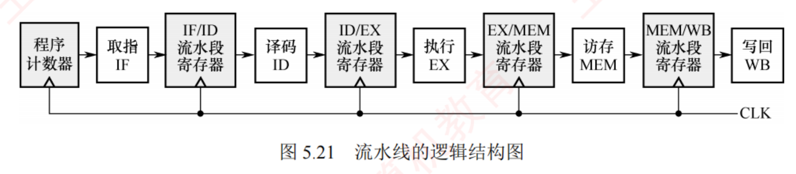
图 5.21（书 p.248） 流水线的逻辑结构 。链路是：PC → IF → [IF/ID 寄存器] → ID → [ID/EX] → EX → [EX/MEM] → MEM → [MEM/WB] → WB，所有寄存器和数据存储器统一接同一个 CLK 。每个流水段之后都必须有一个流水段寄存器 ——每来一个时钟脉冲，各段处理完的数据锁存到段尾寄存器，作为下一段的输入；同时本段接收前一段经寄存器传来的数据。这就是"指令在流水线中逐级推进"的物理机制。
必记结论 · ⭐ 流水段寄存器五条（选 07、08 两题的全部 考点）
① 每个流水段后都要有流水段寄存器 ，锁存本段输出供下段用，统一由 CLK 同步 。控制信号在 ID 段一次生成，随后靠流水段寄存器逐级传递到各段 ——这是选 07 的唯一正确项 。各流水段寄存器的位数不一定相同、存放的信息也不同 （选 07 的 B/C 项错）。流水段寄存器对用户程序透明 ，指令无法指定访问哪一个（选 07 的 D 项错）。时钟信号不只作用在流水段寄存器上 ——PC、各类寄存器、存储器等状态元件都受它同步（选 08 的 B 项错）。IF 与 ID 是公共流水段、不需要控制信号 （选 08 的 D 项正确 ）——因为控制信号是 ID 之后才产生的 。
陷阱 · ⭐ 流水段寄存器的延时"加不加"，全看题干那半句话 （2009 与 2018 两道真题方向相反）
书上原框 ：
流水段寄存器本身也引入一定时延。但在考试中，若无明确说明，则可忽略寄存器时延。
真题 题干怎么说 怎么算 答案 2009 选 19 给出四段延迟 90 / 80 / 70 / 60 ns，题干写明"忽略流水寄存器时间" Δt = max(各段) = 90ns 90ns 2018 选 27 A~E 五个部件延迟 80/50/50/70/50 ps，并明确给出"流水段寄存器延时 20ps" Δt = max(各段) + 寄存器延时 = 80 + 20 100ps
⟹
2018 是历年唯一明确给出段寄存器延时的真题。见到题干里出现"流水段寄存器延迟/锁存器延迟"字样，就必须加；没出现就不加。
这一句话之差是 2 分。 （🐍 两题复算均与书答一致。）
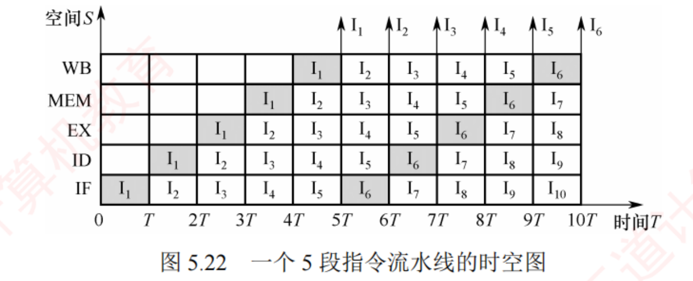
图 5.22（书 p.249） 5 段流水线的时空图 。横轴是时间（单位为时钟周期 T），纵轴是流水段（空间） ——这就是"时空图"三个字的由来。I₁ 在时刻 0 进入、5T 完成；I₂ 在 T 进入、6T 完成；从 5T 起每个周期末都有一条指令完成 ，到 10T 时已完成 I₁～I₆ 共 6 条 。对照单周期 ：每条指令约需 750ps ÷ 200ps = 3.75 个时钟周期 ，10T 内只能完成 2～3 条 。同样的 10 拍，6 条 vs 2 条——这就是吞吐率的差别。
必记结论 · ⭐⭐ 流水线四大公式 （全部已进计算模板手册 ，设 k 段、时钟周期 Δt、任务数 n）
Δt ＝ max(各段延迟) ［＋ 流水段寄存器延时，仅当题目明确给出时 ］
完成 n 个任务的总时间 Tk ＝ (k ＋ n − 1) · Δt
吞吐率 TP ＝ n ÷ [(k ＋ n − 1)Δt] n→∞ 时 TPmax ＝ 1/Δt
超标量（度 m） T ＝ [ k ＋ (n − m)/m ] · Δt
公式 真题现场 数字 Tk = (k+n−1)Δt 选 03（3 段 12 条）· 2013 选 22 （4 段 100 条）· 2012 综 01（5 段 4 条） 3+11 = 14Δt · 4+99 = 103 · 5+3 = 8 TP = n/Tk 2013 选 22 ：主频 1.03GHz、4 段、100 条1.03G × 100 ÷ 103 = 恰好 1.0×10⁹ 条/秒 超标量 T = k+(n−m)/m 选 04（度 4、3 段、20 条） 3 + (20−4)/4 = 7Δt
🐍
三处复算全部与书答零误差。2013 那道"恰好整除"是命题人设计好的，算出非整数就说明你算错了。
陷阱 · ⭐⭐ 首条指令的完成时刻 = 各段实际 时间之和，不是 k×Δt （选 05 的坑，我第一次也算错了）
题 ：三段流水线，取指 2ns、分析 2ns、执行 1ns，问 100 条指令全部执行完需多久。错解 ：Δt = max(2,2,1) = 2ns ⟹ 首条 3×2 = 6ns ⟹ 6 + 99×2 = 204ns ❌正解 ：首条指令是"真跑"完的，它的三段各花实际时间 2 + 2 + 1 = 5ns ；之后每隔 Δt = 2ns 出一条 ⟹ 5 + 99×2 = 203ns ✅（选 D）为什么 ：流水线的"每段拉齐到 Δt"是为了让后续指令能整齐地一拍一步 ；但第一条指令没有人跟它抢，它是一段接一段跑完的，最后一段只用 1ns 就结束了。 复算：max = 2；首条 5ns；5 + 198 = 203 ，与书答一致。判据 ：只有"各段时间不等长"时这个坑才咬人 （等长时两种算法结果相同）。题干一给出不等长的段时间，就要警觉。
我的补讲 · 「流水线一定比单周期快吗」 ——第 06 题的 D 项揭穿了一个常见误解
第 06 题 D 项 ：「任何时候各个流水段的功能部件都不可能 执行空操作」——这是错的（答案） 。书上说 ：流水段个数以最复杂指令所用的功能段个数为准，流水段长度以最复杂的操作所花的时间为准。因此，其他指令可以通过加入「空操作」功能段向最复杂的指令靠齐。 潜台词是 ：流水线为了整齐，是要付出"空转"代价的 ——R 型指令的 MEM 段、sw 指令的 WB 段、beq 指令的 WB 段都是空段 ，
那一拍里对应的功能部件什么也不干 。这不是设计缺陷，是"规整性优先"的必然结果 （和 beq 把写 PC 硬塞进 MEM 段是同一个动机）。所以能考 Z ：同题另外三项都对 ——A「各个子功能都要包含在某个流水段中」✅；B「所有子功能都必须按一定顺序经过流水段」✅；
C「各子功能实际用时可能不同，但经过每个流水段的时间都一样」✅（这一条正是"Δt = max(各段)"的另一种说法 ）。把 C 和 D 放在一起看 ：正因为"每段时间都被拉齐成一样"，短的段才必须空转补齐。C 是因，D 是果。
我的补讲 · 表 5.3「各类指令在各流水段干什么」——三行表，但每一格都可能被单独考
指令类 IF ID EX MEM WB ALU 运算 取指 译码 + 读寄存器堆 执行运算 —（空段） 结果写回寄存器堆 取 / 存（lw/sw） 取指 译码 + 读寄存器堆 计算访存有效地址 访存（读或写） lw：读出数据写回寄存器堆—（空段） 转移（beq） 取指 译码 + 读寄存器堆 计算转移目的地址，设置条件码 若条件成立，把目的地址送 PC —（空段）
潜台词是 ：
这张表把"哪条指令在哪一拍读寄存器、哪一拍写寄存器"钉死了 ，
而所有数据冒险题都建立在这两个时刻上 ：
・
读寄存器一律在 ID 段 （第 2 拍）；
写寄存器一律在 WB 段 （第 5 拍）；
・
ALU 结果在 EX 段末就有了 （第 3 拍末，可转发）；
lw 的数据要到 MEM 段末才有 （第 4 拍末，转发不及）。
所以能考 Z ：
画时空图前先默写这四个时刻 ，
"谁什么时候有结果、谁什么时候要用"一目了然，冒险判断就成了对时刻表 。
⚠️
特别注意 beq 那一行：它在 EX 段"设置条件码"、在 MEM 段"送 PC" ——
这就是控制冒险 3 拍的时刻依据。
知识串联 · 「插空段」的两条原则，其实就是结构冒险的第一个解法
5.6.3 插空段原则 ① 每条指令对任一功能部件至多使用一次 ；② 相同功能部件必须在固定阶段使用 （寄存器写回总在第 5 阶段）。5.6.4 结构冒险解法 1 「遵循功能部件使用原则：确保每个功能部件在每条指令中至多使用一次，且总在固定阶段使用」 ——逐字相同 。选 09 的说法 Ⅱ 「规定每条指令只能在指定流水段访问特定功能部件，可减少结构冒险」✅ ——还是同一条 。为什么这两条能防冲突 ：如果所有指令都在第 5 拍写寄存器堆，那么任一时刻最多只有一条指令在写 ；
反之若 A 指令第 4 拍写、B 指令第 5 拍写，它们就可能在同一拍撞上 。"固定阶段"＝"错开时间"。 5.6.3 那两条看似只是"为了凑齐 5 段"的技术细节，实际上是流水线避免结构冒险的第一道防线。同一句话在本节出现了三次。
5.6.3 MIPS 指令集的流水段分析
📄 p.249
每条 MIPS 指令的前两个功能段完全相同 ：IFetch 取指 （取指令并算 PC+4）、Reg/Dec 读寄存器并译码 。后面的段则按指令类型分岔。
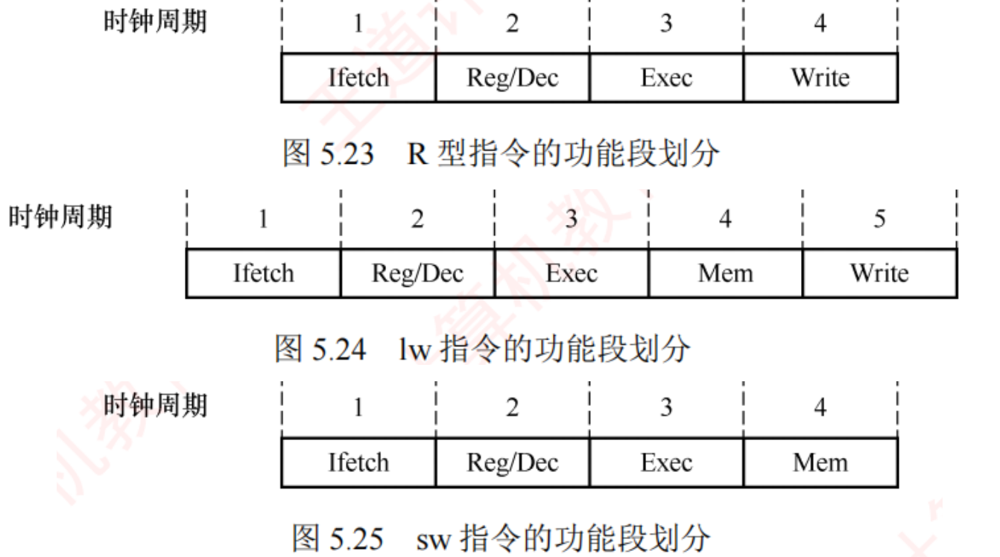
图 5.23～5.25（书 p.250） 三类指令的功能段划分对照 。R 型（4 段） ：Ifetch | Reg/Dec | Exec | Write；lw（5 段，最复杂） ：Ifetch | Reg/Dec | Exec | Mem | Write；sw（4 段） ：Ifetch | Reg/Dec | Exec | Mem——sw 没有 Write 段，因为它不写回寄存器 。lw 是最复杂的那一条，所以流水线的段数由它定为 5 ；其余指令靠插入"空段"对齐到 5 段。
必记结论 · ⭐ 五段流水线里各类指令的段数（MIPS 口径，这张表撑起 2023 真题 ）
指令 真正用到的段数 段序列（括号为插入的空段） 关键点 lw 5 IF · ID · EX · MEM · WB 最复杂 ⟹ 流水线段数由它决定 R 型 / I 型运算 4 IF · ID · EX ·（空 MEM）· WB Write 前插空 Mem，与 lw 的 Write 对齐 sw 4 IF · ID · EX · MEM ·（空 WB） 不写回寄存器 beq 4 IF · ID · EX · MEM（写 PC） ·（空 WB） MEM 段才更新 PC ⟹ 控制冒险 3 周期 j 3 IF · ID · EX（算目标并更新 PC） ·（空 MEM）·（空 WB） 无条件转移，Exec 段就能改 PC
插入空段的两条原则 ：①
每条指令对任一功能部件至多使用一次 （同一条指令不能两次用寄存器写口）；
②
相同功能部件必须在固定阶段使用 （寄存器写回总在第 5 阶段）。
⚠️
这两条原则同时也是"解决结构冒险"的第一个办法 ——见下面 5.6.4，
选 09 的说法 Ⅱ 考的就是它 。
我的补讲 · beq 的 MEM 段"并不访存" ——这个反常设计正是 2023 真题的出处
书上说 ：beq 指令的 Mem 段并非真正的内存访问，而是将写 PC 操作安排在该段，以便与 lw、sw 等指令对齐。由于写 PC 的延迟小于存储器访问，因此可在 Mem 段完成 。潜台词是 ：硬件设计者宁可让 beq "浪费"一整个 MEM 段，也要保证"所有指令在同一阶段做同一类事" ——
因为一旦允许 beq 在 EX 段就改 PC，就得给 PC 多开一条写通路，而这条通路和别人抢时序 。规整性比省一拍更值钱。 代价是什么 ：转移方向要到 MEM 段结束才确定 ⟹ 从 beq 进入流水线到决策完成，后面已经错误地取进来 3 条指令 ⟹ 控制冒险的延迟损失 C = 3 。所以能考 Z ：2023 真题（选 30）问的就是"beq 在哪个段控制是否把转移地址送 PC"，答案是 MEM 段 。
而"分支延迟 3 个周期"这个数字，也是从这里推出来的，不是背来的 ——beq 在第 4 拍（MEM）才定，第 2、3、4 拍取进来的三条指令作废，正好 3 条。
我的补讲 · 第 08 题：「控制信号只作用在功能部件上，时钟信号只作用在流水段寄存器上」错在哪
错在"只"字。 时钟信号除了作用在流水段寄存器上，还要作用在 PC、各类寄存器、存储器等所有状态元件上 ——
凡是"有记忆的东西"都要靠时钟同步 （回看 5.3.2 那张操作元件 vs 状态元件的表：状态元件的定义就是"必须在时钟同步控制下工作" ）。同题的 D 项则是对的 ：「取指令阶段和指令译码阶段不需要控制信号的控制 」——理由是这两段是所有指令共用的公共流水段，做的事完全一样；而且控制信号本身要到 ID 段译码之后才产生 。潜台词是 ：把 A、B、C、D 四项串起来，正好是流水线数据通路的完整画像 ——
A（每段 = 功能部件 + 流水段寄存器）✅、C（无阻塞时 PC 每拍都变）✅、D（IF/ID 不需控制信号）✅ ，
只有 B 的两个"只"字把范围划窄了 。C 项那句"在没有阻塞的情况下"很关键 ——一旦发生阻塞，PC 就要停住不动 （否则会把后面的指令取进来冲掉正在等的那条）。
这也解释了 2012 综 01 里"I4 的 IF 被阻塞"是怎么实现的：硬件冻住 PC 和 IF/ID 寄存器即可。
我的补讲 · 第 14 题「控制冒险五说法」逐条判 ——一道把控制冒险考全的题
说法 判断 理由 Ⅰ. 直接转移指令不会发生控制冒险 ❌ 直接转移的目标地址也要到执行阶段才确定 ，同样会断流Ⅱ. 插入空操作指令可避免控制冒险 ✅ 插够 C 条 nop，等转移结果确定后再取有效指令 Ⅲ. 采用转发技术可以解决控制冒险 ❌ 转发治的是数据冒险 ，两者不能混用Ⅳ. 中断或异常也会引起控制冒险 ✅ 它们同样改变 PC ⟹ 流水线断流（书上「注意」框） Ⅴ. 流水段越多，控制冒险的损失越小 ❌ 段数越多，转移结果确定前取进来的错误指令就越多，损失越大
潜台词是 ：
三个错误说法各代表一类常见误解 ——
Ⅰ 以为"无条件转移不用判断所以不冒险"（其实还要算地址） ；
Ⅲ 把两种冒险的解法张冠李戴 ；
Ⅴ 把"流水段多 = 性能好"这个直觉滥用到了冒险场景 。
所以能考 Z ：
Ⅴ 与 5.9 的"问题 1"是同一件事 ——
流水段不是越多越好，本章前后呼应了两次 。
知识串联 · 「编译器调整指令顺序」——硬件解决不了的，软件来兜底
5.6.4 数据冒险 解法三：通过编译器调整相关指令的顺序 ，把无关指令插到 load 和 use 之间，连那一拍都不用停 （书上说这是"最好的办法"）。5.6.5 超长指令字 由编译器挖掘指令间的并行性并打包 ——并行性由软件静态确定 。ch4 4.4 RISC 「RISC 依赖优化编译程序」是 RISC 的特征之一 ——这一条在 ch4 时看着抽象，在这里落地了 ：RISC 把冒险处理的一部分责任交给了编译器 。对照 CISC CISC 的复杂指令由微程序在硬件里"翻译"，编译器负担轻但硬件复杂 。一条贯穿 ch4–ch5 的主线：性能优化的责任在"硬件"与"编译器"之间来回划分。
RISC 往编译器推，CISC 往硬件推；而流水线冒险的三种解法（阻塞 / 转发 / 调顺序）正好分别是"硬件停一停""硬件抄近路""编译器让一让"。
我的补讲 · 第 10、12 题合起来看：解决数据冒险到底有几种办法
第 10 题 问"（ ）可部分 解决数据相关问题"，答案 B 采用旁路技术 ——
⚠️ 注意题干那个"部分" ：旁路（转发）只能解决一部分（治不了 load-use） ，这个措辞是精心设计的。第 12 题 把四条办法全列了出来，四条全对（答案 D） ：数据冒险的定义 ：后面指令用到的数据还未来得及由前面的指令产生 ✅；插入空操作指令使相关指令延迟执行 ✅（能解决全部 ）；转发（旁路）技术 ✅（只能解决一部分 ）；编译器调整指令顺序 ✅（能解决一部分，且是"最好的办法" ）。潜台词是 ：三种办法的"能力上限"不同，这正是 2024 真题 C/D 两项一错一对的根源 ——
插 nop 是万能的（只是慢），转发和调顺序都有解决不了的情形。 所以能考 Z ：看到"部分解决"选转发或调顺序；看到"都能解决"选插 nop / 插气泡 。
⚠️ 第 10 题的干扰项 C「分支预测技术」是治控制冒险的 ，A「增加硬件资源」是治结构冒险的 ——三种冒险各有各的解法，别张冠李戴。
5.6.4 流水线的冒险与处理
📄 p.251
考点追踪：导致流水线阻塞的各种原因（2010、2025） · 解决结构冒险的办法（2016） · 指令流水的数据冒险（2012、2014、2016、2019、2023） · 解决数据冲突的办法（2024） · 分析指令之间的控制冒险（2014、2023）
必记结论 · ⭐⭐ 三种冒险的成因与解法 ——本节的骨架，务必成表背下
冒险 成因 解法 真题 结构冒险 多条指令在同一周期争用同一硬件部件 ；本质是硬件资源的物理限制 ① 功能部件使用原则 （每条指令至多用一次、总在固定阶段用）增加硬件资源 ：寄存器堆读写口分离 （前半拍写、后半拍读）；指令存储器与数据存储器分离 选 09 · 2014 选 23 数据冒险 后一条指令要读的寄存器，前一条指令还没写回 ① 延迟执行 （软件插 nop / 硬件插气泡）转发（旁路） ：从流水段寄存器直取中间结果编译器调整指令顺序 2012 / 2014 / 2016 / 2019 / 2023 / 2024 六考 控制冒险 转移、返回、中断或异常 改了 PC ⟹ 流水线断流 ① 延迟分支 ：插 C 条 nop（C = 分支延迟周期数 ）或硬件阻塞分支预测 ：静态（恒定预测发生/不发生）· 动态（按转移历史调整，准确率更高） 选 14/15 · 2023 选 30
⚠️
书上「注意」框 ：
Cache 缺失、中断或异常的发生也会引起流水线阻塞 ——
不是只有那三种冒险 。
⚠️
2010 真题（选 20）的唯一考点 ：
「数据旁路」是解决办法，不是引起阻塞的原因 。四个选项里三个是冒险，一个是解法，选那个解法。
① 结构冒险
📐 书上范例 ：指令与数据共用同一存储器时，第 i 条 LOAD 指令在第 4 拍处于 MEM 段（访问数据存储器），而第 i+3 条指令在同一拍处于 IF 段（取指令） ——两者同时访存，冲突。解法是暂停后续指令的取指一个周期 。
表 5.4（书 p.251） 用暂停后续指令解决访存冲突 ——注意第 4 拍那一列，LOAD 的 MEM 与 i+3 的 IF 撞在一起指令 1 2 3 4 5 6 7 8 9 LOAD IF ID EX MEM WB i+1 IF ID EX MEM WB i+2 IF ID EX MEM WB i+3 停顿 IF ID EX MEM WB i+4 IF ID EX MEM
我的补讲 · 结构冒险有个"不一定发生"的前提，很多人忽略了
书上说 ：当然，若第 i 条指令不是访存指令，则其在 MEM 段不访问存储器，也就不会发生访存冲突 。潜台词是 ：五段流水线里"每条指令都要经过 MEM 段"，但"经过"不等于"访存" ——
R 型指令的 MEM 段是个空段，它在那一拍什么也不做 （见上面的段数表）。所以能考 Z ：判断"这两条指令会不会有结构冒险"，不能只看它们在同一拍分别处于哪个段，还要看那个段是不是"真的在用那个部件"。
只有当第 i 条是 lw / sw（真正访存）时，才会与第 i+3 条的 IF 撞车。 选 09 的四个说法全对 （答案 D）：结构冒险是争用硬件 ✅；规定固定流水段访问特定部件可减少 ✅；重复设置功能部件（如多个 ALU）可避免 ✅；指令 Cache 与数据 Cache 分离可解决取指与取数的冲突 ✅ 。四条都要能独立说出来。
知识串联 · 「指令 Cache 与数据 Cache 分离」——这是本章第三次遇到同一件事
5.3.5 单周期数据通路必须把指令存储器与数据存储器分开 ——一拍内既取指又访存，共用单端口做不到。此处 5.6.4 五段流水线里 IF 段取指、MEM 段访存，共用一个存储器就撞车 ⟹ 教材给的第二个解法就是分离 。ch3 3.1 / 3.5 哈佛结构 的定义特征就是指令与数据存储分离；现代 CPU 的 L1 Cache 一律分成 I-Cache 和 D-Cache ——主存物理上还是一个，但一级缓存分开了，等价地消除了这个结构冒险 。2014 真题（选 23） 直接问「指令 Cache 与数据 Cache 分离的主要目的是什么 」，答案是 减少指令流水线的资源冲突 ——不是"提高命中率"，也不是"减少容量" 。三处是同一句话的三个版本。凡是"同一拍里要访问两次存储器"，答案永远是把存储器分开。
我的补讲 · 2023 真题（选 30）逐条判：本节所有知识点的期末考
题设 ：5 段流水（取指/译码取数/执行/访存/写回），
采用转发处理数据冒险，采用硬件阻塞处理控制冒险 ，问 I1～I4 中哪些指令发生阻塞。
I1 add s2, s1, s0 // R[s2] ← R[s1] + R[s0]
I2 load s3, 0(s2) // R[s3] ← M[R[s2] + 0]
I3 beq t2, s3, L1 // if R[t2] = R[s3] jump to L1
I4 addi t2, t2, 20 // R[t2] ← R[t2] + 20
逐条走一遍 （用 5.6.4 那张"转发能治什么"的三行表）：
・
I2 读 s2，I1 写 s2 ：两条都是"运算类在前"？
I1 是 add，EX 段末就出结果 ⟹ 可以转发给 I2 的 EX 段 ⟹
I2 不阻塞 。
・
I3 读 s3，I2 是 load 写 s3 ：
典型的 load-use！ load 要到
MEM 段末 才拿到数，而 I3 的 EX 段与它同拍 ⟹
转发救不了 ⟹ I3 阻塞 。
・
I4 ：它读写的是 t2，与 I1、I2 无关；
但 I3 是 beq，控制冒险要硬件阻塞 ⟹
I4 被卡住 ⟹ I4 阻塞 。
⟹ 答案 C（仅 I3、I4）。
所以能考 Z ：
这道题把三件事考在了一起 ——
① 转发能治相邻运算类；② 转发治不了 load-use；③ beq 引起控制冒险会连累后面的指令 。
⚠️
最容易漏的是 I4 ：
它自己一点数据冒险都没有，纯粹是被前面的分支指令连累的 。
做这类题一定要分两遍扫——第一遍只看数据相关，第二遍单独找分支指令。
陷阱 · 2024 真题（选 31）的 C 与 D，两个"所有"一错一对
C 项 「所有 数据冒险都可以通过加入转发（旁路）电路解决」❌ 就是答案 ——load-use 冒险转发解决不了 ，至少要停一拍。D 项 「所有 数据冒险都能通过调整指令顺序和插入 nop 指令解决」✅ 是对的 ——只要肯停，总能等到结果写回 。潜台词是 ：两个"所有"的差别在于手段的"下限" ——转发是抄近路，路不通时就没辙 ；
而插 nop / 调顺序是"退一步等"，只要停够拍数一定成功，只是慢 。看到含"所有"的选项别一律划掉 ——本题恰好有一个含"所有"的选项是正确的 。要判断的是"这个手段有没有能力上限"。 同题另外两项也对 ：A「相邻两条指令中的操作数相关可能引起数据冒险」✅ （注意是"可能"）；
B「插入气泡能避免数据冒险」✅ 。
② 数据冒险（RAW）——本节最热的考点，六年六考
必记结论 · 数据冒险的定义与唯一类型
根本原因 ：后面指令用到前面指令的结果时，前面指令的结果还未产生或写回 。⭐ 在「按序发射、按序完成」的流水线中，所有数据冒险都是 RAW（写后读，Read After Write）冲突 ——
书上原框明说：在非乱序执行的流水线中（统考常涉及这种方式），只可能出现 RAW 冲突 ；
脚注进一步说明：统考只考查过「按序发射，按序完成」的方式 。WAW（写后写）和 WAR（读后写）在按序流动下不会出问题 ——这是排除干扰项的利器 （选 18 的 C 项、2016 真题的 I2/I4 都是拿 WAW 当干扰）。
📐 范例 ：
I1 add R1,R2,R3 # (R2)+(R3) → R1
I2 sub R4,R1,R5 # (R1)−(R5) → R4
表 5.5（书 p.252） add 与 sub 发生 RAW 冲突 ——add 第 5 拍才写 R1，sub 第 3 拍就要读 R1指令 1 2 3 4 5 6 add IF ID EX MEM WB 写 R1 sub IF ID 读 R1 EX MEM WB
解法一：延迟执行（插 nop 或硬件气泡）
表 5.6（书 p.252） 用延迟相关指令解决 RAW ——sub 阻塞 3 拍，使其 ID 段排在 add 的 WB 段之后指令 1 2 3 4 5 6 7 8 9 add IF ID EX MEM WB sub 阻塞 阻塞 阻塞 IF ID EX MEM WB
陷阱 · ⭐⭐ 阻塞 3 拍还是 2 拍？取决于"寄存器堆能不能前半拍写、后半拍读" （历年最容易算错的一步 ）
书上原话 ：
若寄存器堆支持在一个时钟周期的前半个时钟周期写入、后半个时钟周期读出，则 add 指令在 WB 段写入的值可在同一个时钟周期被 sub 指令在 ID 段读取。此时 add 的 WB 段与 sub 的 ID 段可重叠执行，从而仅需延迟 2 个时钟周期。
题目条件 要求 阻塞周期数 不支持 同周期写读（或题干说"同一寄存器的读和写不能在同一个时钟周期内进行"）sub 的 ID 必须排在 add 的 WB 之后 一拍 3 拍 支持 前半拍写、后半拍读sub 的 ID 可与 add 的 WB 同拍 2 拍
⚠️
2012 真题（综 01）的题干就写着「同一寄存器的读和写操作不能在同一个时钟周期内进行」 ——
那是在告诉你走 3 拍那一栏 。
凡是画时空图的综合题，第一件事是把题干里这半句话圈出来。
我的补讲 · 2016 真题（选 24）的"两遍扫描法" ——四条指令找相关，别凭感觉
方法 ：先给每条指令标出「
写谁 / 读谁 」，再逐对比对
「后读的是不是前写的」 。
拿 2016 真题的四条指令走一遍 ：
对 关系 判定 I1 写 R1；I2 读 R2、R4 不相干 无冒险 I2 写 R5；I3 读 R5 后读 = 前写 ✅ RAW 数据冒险 （就是答案）I3 写 R4；I4 读 R2、R6 不相干 无冒险 I2 写 R5；I4 也写 R5 WAW（写后写） ❌ 按序流动不会出问题，排除
时空图验证 ：
I2 在第 5 拍 WB 写 R5，I3 在第 3 拍 ID 读 R5 ⟹
读在写之前发生，读到旧值 ，冒险坐实。
所以能考 Z ：
那个 WAW 干扰项（I2 与 I4 同写 R5）是这道题唯一的陷阱 ——
只要记住"按序发射按序完成 ⟹ 只可能 RAW"，一秒排除 。
⚠️
别偷懒只扫相邻两条 ：
2019 真题（选 28）里相关的是隔了一条的 I2 与 I3 ，
而 2016 这道的干扰项是隔了一条的 I2 与 I4 ——
都要扫到。
解法二：转发（旁路）技术
表 5.7（书 p.253） 用转发技术解决 RAW ——add 在 EX 段末已算出 R1 新值并存进 EX/MEM 寄存器，直接转发给 sub 的 EX 段指令 1 2 3 4 5 6 add IF ID EX ⟍ MEM WB sub IF ID ⟍→ EX MEM WB
书上结论 ：增加转发通路后，相邻的两条运算类指令之间 ，以及相隔一条无关指令的两条运算类指令之间 的 RAW 冲突，均可通过转发有效消除 （0 阻塞 ）。
解法三：load-use 冒险——转发也救不了的那一种
I1 load r2,12(r1) # M[(r1)+12] → r2
I2 add r4,r3,r2 # (r3)+(r2) → r4
表 5.8（书 p.253） 用「延迟 1 拍 + 转发」解决 load-use 冲突 ——插 1 条 nop 后，add 的 EX 段才能从 MEM/WB 寄存器拿到数指令 1 2 3 4 5 6 7 load IF ID EX MEM ⟍ WB add 阻塞 IF ID ⟍→ EX MEM WB
我的补讲 · ⭐⭐ 「转发能治什么、不能治什么」——近三年最热的一条，请把这三行背死
书上说 ：
load 指令在 MEM 段结束时才从存储器读出数据……而紧随其后的 add 指令在其 EX 段就需要 R2 的值。由于此时 load 指令尚未完成访存，结果不可用 。
潜台词是 ：
转发的本质是"结果早就算出来了，只是还没写回寄存器，我把它抄近路送过去" 。
所以转发能不能成，只取决于一件事——「我要用它的那一拍，它算出来了没有」。
情形 结果何时可用 何时要用 能否转发 阻塞 相邻两条运算类指令 前指令 EX 段末 （存进 EX/MEM 寄存器）后指令 EX 段（下一拍） ✅ 能 0 拍 隔一条无关指令的运算类 前指令 EX 段末 后指令 EX 段（隔两拍） ✅ 能 0 拍 load-use （load 后紧跟用它结果的指令）load 的 MEM 段末 （存进 MEM/WB 寄存器）后指令 EX 段（与 load 的 MEM 同拍 ） ❌ 不能 （同拍拿不到）至少 1 拍
所以能考 Z ：
2024 真题（选 31）的 C 项「所有数据冒险都可通过转发解决」是错的 ；
2023 真题（选 30）里那个 I3 就是 load-use ；
选 13 问"要插几条 nop"，答案是 1 条 。
⚠️
记法 ：
运算类指令 EX 段就出结果，转发绰绰有余；load 要到 MEM 段才出结果，正好晚一拍，所以必须停一拍 。
"晚一拍就停一拍"——这一句概括了整条规则。
⚠️
最好的办法其实是第三种 ：
编译器在编译时调整指令顺序，把一条无关指令挪到 load 与 use 之间 ，
连那一拍都不用停 。
必记结论 · ⭐ 「哪几对指令有数据冒险」的机械解法 （2016 / 2019 / 2023 三考同一题型，照这个流程走绝不出错 ）
给每条指令标出「写谁 / 读谁」 。运算类指令写目的寄存器、读两个源寄存器。
逐对比对：后一条指令读 的寄存器，是不是前面某条指令写 的？ 是 ⟹ RAW ⟹ 数据冒险。
排除 WAW 与 WAR ：两条指令都写同一寄存器（WAW）、或前读后写（WAR），在按序流动下都不会出问题 ，一律排除。
⚠️
三个容易漏掉的"读" ：
①
store 指令要读寄存器 （把它的值写进内存）⟹
store 也可能与前面的指令构成 RAW （
2019 真题的 I3/I4 ）。
②
beq 指令要读两个寄存器 做比较 ⟹
也会与前面的指令构成 RAW （
2023 真题的 I3 与 I2 ）。
③
比较类指令（如 slt r1,r2,r3）写 r1 ，若后面的 ALU 指令读 r1 ⟹
分支指令与运算指令之间也会有数据冒险 ——
选 11 的说法 Ⅲ「分支指令和后面的 ALU 指令肯定不会发生数据冒险」就错在这 。
知识串联 · 分支预测的"动态预测靠历史"——这句话你在 ch3 见过它的兄弟
此处 5.6.4 动态分支预测根据程序运行时的转移历史动态调整策略，准确率通常比静态预测高 ——依据是局部性原理 （同一个循环的 bne，前 999 次都跳，第 1000 次才不跳）。ch3 3.4 / 3.5 Cache 的存在、预取、LRU 替换算法 ，依据的是同一个局部性原理 ——"过去访问过的，将来还会访问" 。ch3 3.7 磁盘预读 ：也是局部性。跨科 · 操作系统 页面置换算法（LRU、时钟算法） 、工作集模型 ——全是"用过去预测未来"。共同的失败模式 局部性一旦不成立，这些机制全都反而变慢 ：分支预测错要清空流水线（损失 3 拍） 、Cache 抖动 、Belady 异常 。局部性原理是 408 全书最粗的一根线 ，本章在分支预测 这里第五次用到它。见到"根据历史/最近"这类措辞，就在旁边写两个字：局部性。
我的补讲 · 2019 真题（选 28）：store 指令也会引起数据冒险 （最容易被漏掉的一类）
四条指令 ：add s2,s1,s0 → load s3,0(t2) → add s2,s2,s3 → store s2,0(t2)。用两遍扫描法 ：第 3 条读 s2（第 1 条写的）和 s3（第 2 条写的） ⟹ 两处 RAW ，且与 load 的那处是 load-use ；第 4 条 store 读 s2 （第 3 条刚写的）⟹ 又一处 RAW 。潜台词是 ：很多人下意识觉得"store 是往内存写，不读寄存器" ——大错 。
store s2, 0(t2) 要读两个寄存器：s2（要写出去的数据）和 t2（算地址用的基址）只要它读的寄存器是前面某条指令写的，就构成 RAW。 所以能考 Z ：写"读谁"这一栏时，三类指令别漏 ——store 读两个 寄存器 （数据源 + 基址）；beq 读两个 寄存器 （要比较的两个数，2023 真题就靠它）；load 只读一个 （基址），但它写的那个寄存器是 load-use 的源头 。本题的时空图显示 I3 与 I4 都被阻塞了很多拍（题干无转发） ，总长 14 拍 ——这是"无转发 + 读写不同拍"最坏情况的样子。
③ 控制冒险
📐 书上范例 （R2 存常数 N，R1 初值 1）：
I1 loop: add R1,R1,1 # (R1)+1 → R1
I2 bne R1,R2,loop # if (R1) != (R2) goto loop
bne 在 EX 段完成条件计算，但直到 MEM 段结束（第 5 拍末）才确定是否更新 PC ，因此从分支指令进入流水线到转移决策完成，共产生 3 个时钟周期的延迟 ——这个数记为延迟损失时间片 C = 3 。
表 5.9（书 p.254） 用插入空操作解决控制冲突 ——bne 之后空了 3 拍，第二条 add 到第 6 拍才敢 IF指令 1 2 3 4 5 6 7 8 9 10 add IF ID EX MEM WB bne IF ID EX MEM WB add × × × IF ID EX MEM WB
必记结论 · 控制冒险的两类解法 ＋ 四条易错判断
① 延迟分支处理 ：软件在分支指令后插 nop，或硬件自动阻塞（插气泡）。插入 nop 的数量 = 分支延迟周期数 C 。② 分支预测技术 ：尽早生成转移目标地址并预测转移方向，以减少流水线清空 。
静态预测 采用简单规则（总是预测转移发生或总是不发生，每次预测结果一样 ）；
动态预测 根据运行时的转移历史动态调整，依据局部性原理，准确率通常更高 。
预测错误时，必须清空已进入流水线的错误路径指令，并从正确目标地址重新取指 ——若分支延迟为 3，则损失 3 拍。选 14 里三个错误说法 ：① 「直接转移指令不会引起控制冒险」错 ——它的目标地址也要到执行阶段才确定；
③ 「转发技术可解决控制冒险」错 ——转发治的是数据冒险；
⑤ 「流水段越多，控制冒险损失越小」错 ——段数越多，转移结果确定前取进来的错误指令就越多，损失越大 。选 15 ：分支预测只用于控制冒险，不用于数据冒险 。
我的补讲 · 「m 段流水线 vs m 个并行部件，谁的吞吐率高」 （第 02 题，答案反直觉但一算就明白）
答案：一样（选 A）。 算给你看 ：m 段流水线 ——第 m 拍之后每拍完成 1 条 ，稳态吞吐 = 1 条/拍 。
m 个并行部件 ——每个部件独立跑完一条要 m 拍，m 个一起跑，m 拍完成 m 条 ，平均也是 1 条/拍 。潜台词是 ：两者用了完全不同的硬件代价，换来了相同的吞吐率 ——流水线 ：只需一套 功能部件 + m−1 个流水段寄存器，硬件省 ，但怕冒险 （一停就全停）。m 个并行部件 ：需要 m 套 完整硬件，贵 ，但互不干扰 。所以能考 Z ：这道题在提醒你——"吞吐率相同"不代表"两种方案等价" 。
真实的超标量处理器是两者的结合（多套部件，每套还是流水线），所以它的 CPI 才能小于 1。 顺带把第 03、04 两题的公式对照一遍 ：单流水线 T = (k + n − 1)Δt （3 段 12 条 ⟹ 14Δt ）；
度为 m 的超标量 T = [k + (n − m)/m]Δt （度 4、3 段、20 条 ⟹ 3 + 4 = 7Δt ）。两个公式的差别就是"每拍进来几条"。
我的补讲 · 2012 综 01 第 ④ 问的完整时空图 ——就是我抄错过又自查回来的那一张，画法示范
题 ：
x = x*2 + a（x、a 是 unsigned int），求至少需要多少个时钟周期并画出时空图。
题干前提 ：
无转发技术 ；
同一寄存器的读写不能在同一个时钟周期内进行 。
指令序列 ：
I1 LOAD R1,[x] →
I2 SHL R1 →
I3 LOAD R2,[a] →
I4 ADD R1,R2 →
I5 STORE R1,[x]
（相关：I2 读 I1 写的 R1；I4 读 I2 的 R1 与 I3 的 R2；I5 读 I4 的 R1。）
指令 1 2 3 4 5 6 7 8 9 10 11 12 13 14 15 16 17 I1 LOAD IF ID EX M WB I2 SHL IF × × × ID EX M WB I3 LOAD × × × IF ID EX M WB I4 ADD IF × × × ID EX M WB I5 STORE IF × × × ID EX M
⟹ 共 17 个时钟周期 （I5 的 WB 落在第 18 拍之前的收尾；书上答案写的就是"至少 17 拍"）。
🔧 我自己抄错过一次 ：读书阶段把 I4、I5 两行整体错了一拍，让
I4 的 ID 与 I3 的 WB 撞在同一拍 ——
直接违反题干"读写不能同拍" 。
两路坐实 ：① 用 Python 按「
后指令 ID ≥ 依赖指令 WB + 1 」「
IF 与前一条的 ID 同拍 」两条规则重排，得 17 拍，
且回代到第 ③ 问给定的图逐格吻合 ；② 回原书 p.265 定点复核。
所以能考 Z ：
画这类图有两个免费的自检点 ——
① 题干给的约束逐格验一遍；② 若书上给了总周期数，数出来必须对上。
两个都过了才算画对。
知识串联 · 2012 综 01 第 ③ 问的"I4 的 IF 为什么被阻塞" ——它考的其实是流水线的"按序"性质
表面 I3 因为要读 I2 写的 R2 而 ID 被卡住 （RAW 数据冒险）。而 I4 它自己和谁都不相关，为什么 IF 也停了？ 答案 因为流水线是"按序发射、按序完成"的一条队列 ——I3 卡在 ID 段不动，I4 就没法从 IF 段前进到 ID 段 ，
于是 I4 只能停在 IF 段等着 。这不是 I4 自己的冒险，是被前面堵住了。 跨科 · 数据结构 这就是队列的"队首阻塞（head-of-line blocking）" ——队首不走，后面全等着，哪怕后面的人根本不去同一个地方 。跨科 · 操作系统 磁盘调度的 FCFS、进程调度的非抢占式 都有同样的现象；而"乱序执行"正是为了打破队首阻塞而发明的 。答这一问要写两句话：「I3 的 ID 阻塞是数据相关（RAW）」+「I4 的 IF 阻塞是因为流水线按序流动，前面的段被占用」。少写第二句就丢分。
我的补讲 · 第 17、18 题：超标量的四个常见误解
说法 判断 为什么 超标量只是运算操作 并行 ❌ （选 17 D）取指、译码、访存、写回全都并行 ——它是"多条完整流水线"，不是"多个 ALU"超标量能缩短单个功能段 的处理时间 ❌ （2017 说法 Ⅰ）它是空间换时间，段的时长一点没变 ；缩短段时长的是超流水线 要实现超标量，需配置多个功能部件和指令译码电路 及多个寄存器、总线 ✅（选 18 A） 这正是"空间换时间"的代价清单 超长指令字只对编译器要求高，无其他硬件要求 ❌ （选 18 B，就是答案）它同样需要更多寄存器、功能部件、指令译码电路 ——软件静态调度只是省了"动态调度硬件"，没省执行硬件
潜台词是 ：
超标量与超长指令字的差别只在"谁来决定哪几条指令能并行" ——
前者是硬件运行时决定（动态），后者是编译器编译时决定（静态） 。
但"要同时执行 m 条指令就得有 m 套执行部件"这件事，两者一样躲不掉。
所以能考 Z ：
凡是说"某某技术不需要额外硬件"的选项，在本节一律是错的 。
这一节讲的三种技术（超标量 / 超长指令字 / 超流水）全都是"拿硬件换性能"，没有免费的。
我的补讲 · 「超流水线」为什么单独算一类 ——它和"多发射"是正交的两条路
书上说 ：提升指令级并行度有两种主要策略——一是多发射技术 （每周期同时处理多条指令）；二是超流水线技术 （增加流水线级数，使更多指令重叠执行）。潜台词是 ：这两条路改的是不同的东西 ——多发射（超标量 / 超长指令字） ：把流水线"加宽" ，一拍进来 m 条 ⟹ CPI < 1 ，时钟周期不变 ；超流水线 ：把流水线"加深" ，段切得更细 ⟹ Δt 更小、主频更高 ，CPI 仍是 1 。两者可以叠加 ：现代 CPU 既是超标量（宽）又是深流水（深）。所以能考 Z ：2020 真题问"理想情况下 CPI 为 1 的是哪些"，答案是「基本流水线」和「单周期」 ——
超流水线 CPI 也是 1，但那道题没把它列进选项 ；超标量 CPI < 1，所以不选 。一句话记忆 ：「加宽降 CPI，加深降周期」 。问 CPI 变不变，先看它改的是宽还是深。
知识串联 · 「乱序执行」把 5.9 的 WAR / WAW 从"不会发生"变成了"必须处理"
5.6.4 统考默认的"按序发射、按序完成" ⟹ 只可能 RAW （书上原框 + 脚注）。5.6.5 多数现代超标量处理器结合动态调度，支持乱序执行 ——指令的执行顺序可不同于程序顺序 。5.9 问题 2 正因为乱序，才可能出现 WAR（读后写）与 WAW（写后写） ：后进入流水线的指令可能超越先进入的指令先完成 。现实中怎么解决 寄存器重命名 ——给同名寄存器分配不同的物理寄存器，WAR/WAW 就自动消失了 （408 不考，知道有这么回事即可 ）。这条线解释了 5.9 那一节存在的理由 ：它不是给统考准备的（统考只考 RAW），而是在告诉你"课本里那个前提一旦放松，会多出两类相关" 。
做题时只要看到"按序发射、按序完成"这八个字，就可以放心把 WAR/WAW 的选项全部划掉。
5.6.5 高级流水线技术
📄 p.254
考点追踪：超标量流水线的特性（2017） · 基本流水线与超标量流水线 CPU 的 CPI（2020）
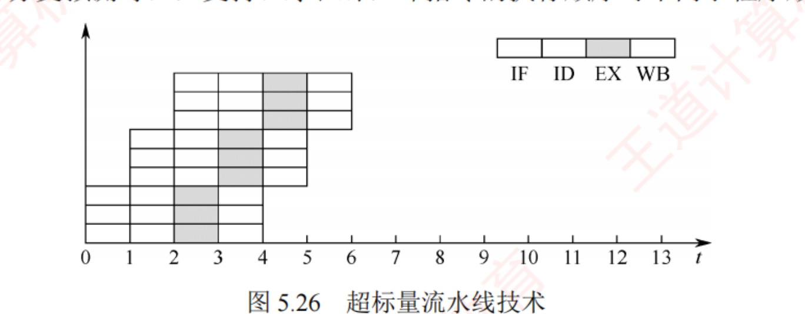
图 5.26（书 p.254） 超标量流水线 。同一个时钟周期里有多条指令并行进入流水线 （图上是并排的两条或多条流水线），右上角图例标着 IF | ID | EX | WB。超标量的本质是"空间换时间" ——配多套功能部件，每周期发射多条独立指令 。简单的超标量按顺序发射，但多数现代超标量处理器结合动态调度（如动态分支预测），支持乱序执行 ，即执行顺序可以不同于程序顺序。
必记结论 · ⭐ 超标量 / 超长指令字 / 超流水 三分（2017 一年两考）
技术 本质 并行性由谁决定 关键判断 超标量 空间并行 ：配多套功能部件，一个周期发射多条指令 硬件 （可结合动态调度 ⟹ 乱序执行 ）不缩短单个功能段的处理时间 （2017 说法 Ⅰ 错）；不只是运算并行 ，取指/译码/访存/写回全并行（选 17 D 错）超长指令字 编译器把多条可并行的指令打包成一条超长指令字 ，含多个操作码字段 软件（编译器） ——静态确定，控制相对简单 仍需更多硬件资源 （寄存器、功能部件、译码电路）——选 18 B「无其他硬件要求」是错的 超流水线 时间并行 ：把流水段再细分 ，缩短 Δt、提高主频硬件 提高每个周期内功能部件的使用次数 ；但流水线深度不是越多越好 ——段寄存器开销与控制复杂度随之上升
必记结论 · ⭐ 四类处理器的 CPI （2020 真题一网打尽，与 5.2.4 那张表合起来记 ）
处理器 CPI 时钟周期 单周期 = 1 长 （由最慢指令定）多周期 > 1 短 基本流水线 = 1 （理想）短 超流水线 = 1 更短（主频更高） ——靠细分流水段多发射 / 超标量 < 1 硬件成本更高、控制更复杂
⚠️
2025 真题（选 32）的补充 ：
实际 CPI 与 Cache 缺失率密切相关 ——缺失会插入空闲周期，把实际 CPI 抬到 1 以上。
「理想 CPI = 1」的"理想"二字，指的就是"无冒险、无 Cache 缺失、无中断"。
我的补讲 · 第 15 题：静态预测与动态预测的两句话区别
书上说 ：静态预测采用简单规则，总是预测转移发生或不发生 ；动态预测根据程序运行时的转移历史动态调整预测策略，准确率更高 。潜台词是 ："静态"的意思是"预测结果与运行历史无关，每次都一样" ——
比如"永远预测不转移"（顺序取下一条）或"永远预测转移"（直接取目标地址）。
"动态"则要维护一张预测表（记录每个分支最近的行为），按历史调整。 所以能考 Z ：第 15 题的说法 Ⅰ「分支预测也可用于数据冒险」是错的 （分支预测只治控制冒险 ）；
其余三条正确 ：静态预测每次结果一样 ✅、动态预测成功率更高 ✅、预测错误时已错误进入流水线的指令必须被舍弃 ✅ 。那句"必须被舍弃"要理解成"清空流水线" ——而这些被清掉的指令不能对机器状态产生任何影响 ，
这就是为什么写寄存器必须放在最后的 WB 段 （错误指令还没走到 WB 就被清了）。五段流水线的段序设计，本身就在为"可撤销"服务。
我的补讲 · 画流水线时空图的五步机械流程 （2012、2014、2016、2019、2023 五道真题共用）
圈题干前提 ：有没有转发？读写能不能同拍？分支阻塞几拍？ ——这三句话决定了后面每一格。
列"写谁 / 读谁"表 ：每条指令一行。别忘了 store 读两个、beq 读两个。
先画无阻塞的理想图 ：第 i 条指令的 IF 在第 i 拍，之后逐拍推进 IF→ID→EX→MEM→WB。
逐对施加约束往后推 ：无转发时「后指令的 ID ≥ 依赖指令的 WB + 1」 （可同拍读写则改成 ≥ WB）；有转发时「后指令的 EX ≥ 依赖指令的 EX + 1」，但 load-use 要 ≥ load 的 MEM + 1 。
补"被堵住"的后续指令 ：流水线按序流动，前面的指令卡在某段，后面的指令就停在它的前一段 ——这一步最容易漏，2012 综 01 第 3 问考的就是它。
两个免费的自检点 ：
① 题干给的约束逐格验一遍（尤其"读写不能同拍"）；② 若书上/题目给了总周期数，数出来必须对上。
⚠️
我自己就是在第 ⑤ 步栽过一次 （2012 综 01 第 4 问，I4/I5 整体错了一拍），
靠这两个自检点抓了回来 。
这套流程不是理论，是踩过坑之后总结的。
知识串联 · 2014 那道 23 分大题，是一道横跨 ch3、ch4、ch5 的"期末综合题"
ch4 的部分 读懂 6 条汇编与机器码 ；从机器码 1446FFFAH 里切出 OFFSET = FFFAH = −6 （补码，ch2 ）；推出相对寻址的目标地址公式 （ch4 4.2 ）。ch5 的部分 判断哪些指令因数据相关阻塞、哪条发生控制冒险 （5.6 ）；解释指令 1 为什么不阻塞 （被分支的 3 拍掩盖了 ）。ch3 的部分 指令 Cache 数据区容量 = 16×32B = 512B ；命中率 5999/6000 （6 条指令 24B 落在同一个 32B 块内，只缺失一次 ）；缺页 1 次、读盘 1 次、查 TLB 1001 次 。5.5 的部分 缺页是"故障" ⟹ 重新执行该指令 ⟹ 多查一次 TLB ——那个"+1"就是它 。ch2 的部分 问"哪条指令可能发生溢出异常" ⟹ 累加 sum 的那条 add 。一道题动用了五章的知识。这就是为什么"只刷选择题"在 408 上行不通——综合题从来不按章出。
5.6.6 三道综合真题：把上面所有东西用一遍
📄 p.259
2012 统考真题：SHR 与四条指令的阻塞分析
必记结论 · 2012 真题（综 01）四问速答（🐍 全部复算通过）
题设关键前提 ：16 位机、补码、
数据 Cache 与指令 Cache 分离 、5 段流水（IF/ID/EX/M/WB）、
按序发射按序完成、未采用转发技术、同一寄存器的读写不能在同一个时钟周期内进行 。
问 答 ① x = −513 存于 R1，执行 SHR R1（算术右移）后 R1 的内容（十六进制） −513 的 16 位补码 = FDFFH ；算术右移补符号位 ⟹ FEFFH 🐍 复算通过 ② 连续 4 条指令无阻塞时需几拍 (k + n − 1) = 5 + 4 − 1 = 8 个时钟周期 ③ I3 的 ID 段与 I4 的 IF 段为什么被阻塞 I3 的 ID 阻塞 ：I3 要读 R2，而 I2（LOAD R2,[b]）到第 6 拍 WB 才写 R2，又因为读写不能同拍 ，I3 的 ID 只能排到第 7 拍 ⟹ RAW 数据冒险 。I4 的 IF 阻塞 ：流水线按序流动，I3 的 ID 被卡住，I4 的 IF 就无法前进（前面的段被占着） ⟹ 是"被前面堵住"，不是 I4 自己有冒险 。④ x = x*2 + a 至少需几拍 17 个时钟周期 （指令序列：LOAD → SHL → LOAD → ADD → STORE，其中含两处 RAW 阻塞）
我的补讲 · 🔧 第 ④ 问的时空图我自己抄错过一次，这里记下怎么自查 （也是本章最值得学的一次纠错）
事故经过 ：我在读书阶段把这张时空图里 I4 和 I5 两行整体错了一拍 ——写成 I4 的 ID 与 I3 的 WB 撞在第 9 拍。两个矛盾立刻暴露 ：① 题干明说"同一寄存器的读写不能在同一个时钟周期内进行" ，撞在一起就违规；
② 书上写的答案是"最少 17 拍" ，按我抄的图数出来对不上。怎么坐实的 ：Python 排程 ：按两条硬规则重排——「后指令的 ID ≥ 它依赖的指令的 WB + 1」 、「IF 与前一条指令的 ID 同拍」 ——算出总长正好 17 拍 ，
而且把结果回代到第 ③ 问给的那张图，逐格吻合 ；回原书 p.265 定点复核 （dpi=130）：确认 I4 的 ID 在第 10 拍、I5 的 WB 在第 17 拍 。结论 ：又一次是我自己抄错、书没错 （CLAUDE.md 铁律 §3 的第 N 次印证）。所以能考 Z ：画时空图的题自带两个检验点 ——① 题干给的约束（读写能否同拍）必须逐格满足；② 书上如果给了总周期数，数一遍能对上才算画对。
两个检验点都过了才敢往下写，这比"小心一点"有用得多。
2014 统考真题（上半）：循环代码段的相关分析
必记结论 · 2014 真题（综 02）四问速答——这道题是"ch4 + ch5"的合体题
题设 ：循环
for(int i=0;i<N;i++) sum += A[i];，起始地址
08048100H ，32 位定长指令字，6 条指令（sll / add / load / add / add / bne）。
问 答 理由 ① 存储器编址单位 按字节编址 相邻指令地址相差 4 （08048100H → 08048104H），而指令是 32 位 = 4 字节 ② 数组 A 每个元素多少位 32 位 sll R4,R2,2 把下标左移 2 位再作偏移 ⟹ 每个元素占 2² = 4 字节 ③ OFFSET 的值与转移目标地址公式 机器码 1446FFFAH ⟹ OFFSET = FFFAH = −6 ；目标地址 = (PC) + 4 + OFFSET × 4 🐍 复算验证 ：bne 地址 08048114H，(PC)+4 = 08048118H，(−6)×4 = −24 = −18H ⟹ 08048118H − 18H = 08048100H ，正好命中 loop 标号 ✅ ④ 哪些指令因数据相关阻塞？哪条发生控制冒险？为什么指令 1 不会因与指令 5 相关而阻塞？ 数据相关阻塞 ：指令 2（依赖 1 的 R4）、指令 3（依赖 2 的 R4）、指令 4（依赖 3 的 R5）、指令 6（依赖 5 的 R2）。控制冒险 ：指令 6（bne） 。指令 1 不阻塞的原因 ：指令 5 写 R2、指令 1 读 R2，但中间隔着 bne 引起的 3 个阻塞周期 ，等指令 1 再次进入 ID 时 R2 早已写回。无转发措施；分支引起 3 拍阻塞
知识串联 · 2014 综 02 第 ③ 问里那两个 4，含义完全不同 ——混淆就整题错
公式 目标地址 = (PC) + 4 + OFFSET × 4 里出现了两次 4： 第一个 4（PC + 4） 是 PC 自增 ——指令 4 字节、按字节编址 ⟹ 每取一条指令 PC 加 4 。这是 5.1 的「PC 增量 = 指令长度 ÷ 编址单位」 。第二个 4（×4） 是"偏移量以指令条数计" ——OFFSET 记的是"往回跳几条指令"，要乘以每条指令的字节数才变成字节偏移 。这是 ch4 4.2 相对寻址 的规矩。对照 5.3 的 2015 真题 那台机器是 16 位指令、按字节编址 ⟹ PC + 2 ，所以它的 MUX 常数输入端接的是 2 而不是 4。同一条铁律，两个数字。 验算习惯 ：算完转移目标地址，一定把它代回指令表里看落在哪一行 。我就是靠这一步确认了 08048100H 正好是 loop 标号——命中标号说明公式对，落在半条指令中间说明公式错。
2014 统考真题（下半）：一道题同时考 Cache、TLB、缺页与流水线
必记结论 · 2014 真题（综 03）三问速答（🐍 四处数值全部复算通过）
题设 ：接上题的机器 M 与程序 P；
页式虚拟存储管理 ；(R1)=(R2)=0、(R6)=1000；
机器代码已在主存但不在 Cache ；
数组 A 未调入主存，所有元素在同一页、存在磁盘同一扇区 。
问 答 算法 ① P 执行结束时 R2 的内容 1000 循环 i 从 0 加到 N=1000 时退出 ② 指令 Cache 数据区容量？程序段 P 的命中率？ 数据区 = 16 × 32B = 512B ；5999/6000 ≈ 99.98% 6 条指令共 24B，都在同一个 32B 块内 ⟹ 只有第一次取指缺失，之后 6×1000 − 1 = 5999 次全命中 ③ 哪条指令可能溢出？哪条可能缺页？对数组 A 的访问至少读几次磁盘、几次 TLB？ 溢出 ：指令 4（add R1,R1,R5，累加 sum 可能溢出）；缺页 ：指令 3（load R5,0(R4)，访问未调入的数组 A）；读磁盘至少 1 次 ；访问 TLB 至少 1001 次 所有元素在同一页、同一扇区 ⟹ 只需调页一次 ；1000 次访存各查 1 次 TLB，加上第一次缺页时那一次 ⟹ 1001 次
知识串联 · ⭐ 2014 综 03 是全书跨章最狠的一道题 ——它把 ch3、5.5、5.6 一次性缝在了一起
ch3 3.5 Cache 「16 行 × 32B 块 = 512B 数据区」 、「6 条指令 24B 落在同一块内 ⟹ 只缺失一次」 ——这是空间局部性最干净的一次兑现 。ch3 3.6 虚存 + TLB 「所有元素在同一页 ⟹ 只缺页一次、只读盘一次」 ；而 TLB 每次访存都要查，所以是 1001 次 ——缺页次数与 TLB 查询次数差了三个数量级，这个反差就是考点 。5.5 异常 缺页是"故障（fault）" ⟹ 处理完要重新执行 那条 load 指令 ⟹ 那次访存会再查一遍 TLB，这正是"1001"里多出来的那个 1 。5.6 流水线 缺页与 Cache 缺失都会引起流水线阻塞 （书上「注意」框）。跨科 · 操作系统 缺页异常的服务程序、页面调入、页表更新全在 OS 那边 ——这道题的第 ③ 问在 OS 的教材里几乎逐字出现过 。这就是我在 5.5 说"在这里多花的每一分钟，OS 那边都会还给你"的具体兑现处。 一道题，四个知识点，23 分。
背景 · 考试不碰
5.6.5 里超长指令字（VLIW） 的编译器实现细节，以及超流水线深度与功耗的工程权衡 ——
统考只考三种技术的"本质 + 谁决定并行性 + 一句关键判断"这三栏 （见上面的三分表），不考具体实现 。j 指令的 3 段划分 虽然书上讲了，但历年真题从未单独考过 j 指令 ——知道"无条件转移在 EX 段就能改 PC，所以只要 3 段"即可 ，
真正要记的是 beq 的 4 段（MEM 段写 PC） ，因为它决定了 C = 3 这个高频数字。
知识串联 · 2014 综 03 的"1001 次 TLB"是怎么数出来的 ——把 5.5、5.6 与 ch3 一起用上的完整推演
这个数字值得单独走一遍，因为它同时用到了四个知识点： ① ch3 虚存 循环 1000 次，每次执行 load R5,0(R4) 访问一个数组元素 ⟹ 1000 次数据访存，每次都要把虚地址翻成物理地址 ⟹ 每次都查 TLB 。② 5.5 故障 第一次访问时数组 A 还没调入主存 ⟹ 缺页故障 。缺页属于"故障"，处理完要重新执行 这条 load 指令 。③ 重执行的代价 重新执行意味着再翻译一次地址 ⟹ 多查一次 TLB ⟹ 1000 + 1 = 1001 次 。④ ch3 局部性 而"读磁盘"只有 1 次 ——题干说"所有数组元素在同一页、存在磁盘同一扇区" ，调一次页就全进来了。「缺页 ⟹ 重执行 ⟹ 多查一次 TLB」是这道 23 分大题里最难的一环，也是 5.5 那张"故障退回重做"表的最高级应用。
若把缺页误当成"自陷"或"外中断"（往下走），就会答成 1000 次。
5.7 多处理器的基本概念
📄 p.267
考点追踪：多处理器的基本概念（2022）
我的补讲 · 这一节 7 页只压着 1 道真题，是全章密度最低的一节 ——但"低"不等于"不看"
数据 ：5.7 共 7 页 / 1 道真题 （2022），真题密度 0.14 / 页，全章最低 。12 道选择题全是名词辨析，没有一个公式、没有一道综合题。 潜台词是 ：这一节的复习方式和前面六节完全不同 ——它不需要理解，只需要"能把名词对上号" 。
Flynn 四分类、三种硬件多线程、多核 vs 超线程、UMA vs NUMA，四组名词背下来，这一节就结束了 。所以能考 Z ：把本节的排期放在最后 ，但一定要排 ——它是"背了就得分、不背就白丢"的典型 ，
而且 2022 刚考过多核，说明它不是死考点 。考前一晚过一遍下面四张表即可。
5.7.1 SISD、SIMD、MIMD 的基本概念（Flynn 分类法）
必记结论 · ⭐ Flynn 四分类（按「指令流数量 × 数据流数量」划分 ，02–05 四题全落在这张表）
类别 含义 典型代表 并行级别 SISD 传统串行 计算机：一个处理器 + 一个存储器，任一时刻仅执行一条指令 常规单处理器 ；标量流水线处理机也是 SISD — SIMD 一个指令控制单元 + 多个处理单元 ；所有处理单元同时执行同一条指令 ，但各自有独立的地址寄存器，因而操作不同的数据向量处理器 · 阵列处理机 · 并行处理机 数据级并行 MISD 多个指令流处理同一数据流 理论上存在，通用机中几乎无实际应用 — MIMD 同时执行多条指令、分别处理多个数据流，目前的主流并行模型 常规多处理器 ；分多计算机系统 与多处理器系统 两类线程级 / 任务级并行
⚠️
04 题的坑 ：
标量流水线处理机不属于 SIMD，它是 SISD ——
流水线并不改变 Flynn 分类 。
流水线是
把一条指令切成几段重叠 ，它
仍然只有一个指令流、一个数据流 。
⚠️
SIMD 的短板 ：
处理含条件分支（switch / case）的代码时效率显著降低 ——各处理单元要按不同数据走不同分支，
难以保持同步 。
必记结论 · MIMD 的两类（这两类的分界线是"能不能用普通访存指令访问对方的内存" ）
多计算机系统 （消息传递型 MIMD）多处理器系统 （共享存储型 MIMD）地址空间 每个节点私有存储器 + 独立地址空间 统一的全局地址空间 怎么通信 无法用普通访存指令访问其他节点的内存，须靠消息传递 所有处理器可用普通访存指令访问系统中任意存储单元 （读写共享变量）另称 消息传递型 MIMD 共享内存多处理器 SMP （见 5.7.4）
我的补讲 · 「并行处理技术」是提高性能的主路 ——第 01 题，看似空泛其实是全节总纲
第 01 题 ：当前设计高性能计算机的重要技术途径是什么？答案 D「采用并行处理技术」。 潜台词是 ：三个干扰项各代表一条已经走不通 的路，知道它们为什么走不通，比记住答案有用 ：A 提高 CPU 主频 ：受功耗与散热限制，2005 年前后就撞墙了 （这正是多核出现的直接原因）；B 扩大主存容量 ：容量不解决速度问题 ——CPU 与主存的速度差才是瓶颈（ch3 存储层次那一章的开场白 ）；C 采用非冯·诺依曼结构 ：至今没有成为主流 。所以能考 Z ：整个 5.7 节存在的理由就是这道题的答案 ——主频提不动了，就横向加核、加线程、加发射宽度 。
把 5.6（流水线 = 单核内的并行）与 5.7（多核 = 核间的并行）连起来看，本章后半的主线就是一句话：并行是唯一还能走的路。
我的补讲 · 「阵列处理机 / 向量处理机 / 并行处理机」三个名字都指向 SIMD （03、04、05 三题的统一答案）
书上说 ：SIMD 由一个指令控制单元和多个处理单元组成，所有处理单元同时执行同一条指令，但各自拥有独立的地址寄存器 ；向量处理器是 SIMD 的典型实现之一 。潜台词是 ：这三个中文名是历史遗留的不同叫法，判据都是同一句——"一个控制器 + 多个处理单元" ：阵列处理机 （第 03 题）⟹ SIMD；并行处理机 、向量处理机 （第 04 题）⟹ 都是 SIMD；第 05 题直接把定义念了一遍 「具有一个控制部件和多个处理单元的计算机系统」⟹ SIMD。所以能考 Z ：第 04 题问"不属于 SIMD 的是"，四个选项里三个是 SIMD 的别名，答案是标量流水线处理机 （SISD） 。
记住：流水线不改变 Flynn 分类——它仍然是一个指令流、一个数据流，只是把一条指令切开重叠了。 反过来的一句也要记 ：向量处理器内部也用流水线 （把数据从存储器加载到向量寄存器后以流水化方式批量处理 ）——
"是 SIMD"和"内部用了流水线"并不冲突。
我的补讲 · MISD 为什么"理论上存在但没人做" ——一个能帮你记住 Flynn 分类的小推理
书上说 ：MISD 指多个指令流同时处理同一数据流。尽管在理论上存在，但在通用计算机中极为罕见，几乎没有实际应用 。潜台词是 ：想一想 MISD 要做什么——同一份数据，同时被多条不同的指令处理 。
问题在于：处理完之后，结果放哪？ 多条指令各算各的，要么结果互相冲突，要么就得再加一层汇总逻辑 ——
而那层汇总逻辑本身又变成了新的瓶颈 。所以它在工程上不划算。 所以能考 Z ：Flynn 四分类里，你真正要熟的只有三个 ——SISD（普通单核，含流水线）、SIMD（向量/阵列，数据级并行）、MIMD（多核/多处理器，任务级并行） 。
MISD 只需要在四选一里认出这个名字并知道"它没实际应用"。 唯一被拿来当 MISD 例子的是"脉动阵列/流水线的某些解释" ，但王道明确把标量流水线归为 SISD ——统考一律按书答。
知识串联 · 「多计算机 vs 多处理器」的分界，就是《操作系统》里"消息传递 vs 共享内存"的分界
此处 5.7.1 多计算机（消息传递型 MIMD） ：各节点私有存储器与独立地址空间，无法用普通访存指令访问对方内存，须靠消息传递 。此处 5.7.4 多处理器（共享存储型 MIMD / SMP） ：统一的全局物理地址空间，靠读写共享变量通信 。跨科 · 操作系统 进程通信（IPC）的两大类：共享内存 与 消息传递 ——逐字对应 。
OS 那边讲的是"两个进程怎么通信"，这里讲的是"两个处理器怎么通信"，机制完全同构。 同步的代价 共享内存快但要加锁（互斥、Cache 一致性） ；消息传递慢但天然无竞争 ——这组权衡在两门课里是同一个。 复习 OS 的进程通信时，可以把这一节当作它的硬件注脚；反过来也成立。
5.7.2 硬件多线程
📄 p.268
为什么需要它 ：传统 CPU 中线程切换要保存和恢复寄存器上下文 ，频繁切换开销显著。硬件多线程 的做法是——为每个线程配备独立的通用寄存器组、PC 等状态部件；切换时只需激活对应线程的寄存器组，无须把上下文写入或读出内存 ，从而大幅降低切换延迟。
必记结论 · ⭐ 三种硬件多线程（书上图 5.27 的三张调度示例，我用表重排如下——比看图清楚 ）
方式 什么时候切换线程 支持指令级并行？ 切换开销 细粒度多线程 每个时钟周期都切换 ——周期 i 执行线程 A，周期 i+1 执行线程 B，交替进行❌ 否 （同一时刻仅执行一个线程的指令）小 粗粒度多线程 连续执行同一线程 ，仅当该线程因高延迟事件（如 Cache 缺失）导致流水线阻塞时才切换 ❌ 否 大于细粒度 ——需清空被阻塞的流水线 ，并为新线程重新填充流水线 同时多线程 SMT 单个时钟周期内可同时发射并执行来自多个不同线程的多条指令 ✅ 是 ——既利用指令级并行，又实现线程级并行 构建于超标量 + 乱序执行 之上，共享执行单元与缓存
书上原话 ：
细粒度与粗粒度都在同一时刻仅执行一个线程的指令，不支持真正的指令级并行；它们的核心目标是通过线程切换隐藏长延迟操作，提升资源利用率。
⚠️
为什么粗粒度的开销反而更大 ：
细粒度每拍换人，流水线里本来就混着各线程的指令，换人无需清空 ；
粗粒度是"出事了才换"，出事时流水线里全是被阻塞线程的指令，必须整条清空再重新填满 ——
这个"清空 + 重填"就是它的额外代价 。
必记结论 · 超线程（Hyper-Threading） ——SMT 的典型代表，06/07 两题全部选项的判据
Intel 的超线程技术 ：在一个物理核心 中维护两套完整的线程状态部件 （寄存器组、PC 等），
而高速缓存、ALU 等执行资源由两个逻辑核心共享 ，从而在单核上实现接近双核的并发能力（实际提升 10%～30% ）。由此得到四条判断 ：超线程不会把四核变成八核 ——它只是让操作系统看到 8 个逻辑处理器 ，物理核仍是 4 个。超线程不是 "与操作系统和应用软件无关" ——要 OS 支持调度、软件有足够并行度，才能发挥效果 。超线程模拟出的逻辑核不 具有独立资源 ——执行单元和缓存是共享的，会争抢 。双核与超线程的共同点是"都能同时执行两个运算" （07 题答案 B）；不同点是双核有两个物理内核、资源独立，超线程只有一个 。
我的补讲 · 「多核的 Cache 怎么分层」——正文与图 5.28 说的不是同一种结构
正文说 ：每个核通常配备私有的 L1 Cache（有时还包括 L2），而多个核则共享更高层级的 Cache（如 L3）；所有核通过互连网络共享主存储器 。图 5.28 画的却是 ：一种简化的双核结构，其中各核仅拥有私有缓存，不共享任何缓存层级 。潜台词是 ：这不是书写错了，是两种都存在的合法结构，教材特意用图示范了最简单的那一种 。做题时看题干说的是哪一种 ："各核有私有 Cache，共享 L3" ⟹ 现代主流；共享层的存在使一致性问题局限在私有层 ；"完全不共享 Cache" ⟹ 简化模型；所有核的 Cache 之间都要维护一致性 。所以能考 Z ：无论哪种结构，"多个核的 Cache 可能缓存同一物理地址的副本"这个问题都存在 ——
这就是 5.7.4 那条"SMP 的 Cache 一致性要求更严格"的适用前提 。共享 L3 只是缩小了问题范围，没有消除它。 顺带记住一个数量关系 ：L1 私有 ⟹ 每核一份；L3 共享 ⟹ 全芯片一份 。算"某多核 CPU 一共有多少 Cache"时别把共享的那份乘以核数。
知识串联 · SIMD 怕分支，这件事在 5.6 有一个孪生兄弟
5.7.1 SIMD 处理含条件分支（switch / case）的代码时效率显著降低 ——各处理单元要按不同数据走不同分支，难以保持同步 （那块"长木板"没法只推其中两块石头）。5.6.4 控制冒险 流水线也怕分支 ——转移方向到 MEM 段才确定，中间已经错误取进来 3 条指令 。共同的根源 两者都建立在"接下来要做什么是可预知的"这个假设上 ：流水线假设"下一条指令就在后面"，SIMD 假设"所有数据走同一条路" 。
分支恰好打破的就是这个假设。 各自的对策 流水线用分支预测 + 清空重取 ；SIMD 用"掩码执行"（两条路都跑，用掩码屏蔽掉不该生效的结果）——代价是白跑一半 。一句话：所有形式的并行，都怕"控制流的不确定性"。这是 5.6 与 5.7 之间最深的一条暗线。
我的补讲 · 「并发 vs 并行」的硬件判据 ——5.7 给了 OS 那道概念题最干净的答案
书上的三方对照 （原文）：多核架构支持多线程在物理上同时执行 ；单核系统若采用细粒度或粗粒度多线程，其多个线程以时间交错方式执行，任一时刻仅有一个线程处于运行状态 ；但若支持同时多线程（SMT），则可在单个核上并发执行来自不同线程的多条指令 。翻译成判据 ：问"某一个瞬间，有几条线程的指令正在被执行" ——= 1 ⟹ 并发（时间交错） ：单核 + 细粒度/粗粒度多线程；> 1 ⟹ 并行（物理同时） ：多核；SMT 也算（一个核内同时发射多个线程的指令） 。所以能考 Z ：OS 里"并发 = 宏观同时、微观交替；并行 = 微观也同时"这句话，在这里有了具体的硬件对应物 。
细粒度多线程是"每拍换一个线程"——宏观上看两个线程都在跑（并发），微观上任一拍只有一个（不是并行）。 由此还能推出一条 ：单核机器上无论开多少线程，都只是并发 ；要真并行，要么多核，要么 SMT。
知识串联 · NUMA 的"本地内存快、远程内存慢"，是存储层次思想的横向版本
ch3 3.1 存储层次是"纵向"的 ：寄存器 → Cache → 主存 → 辅存，越往下越慢越大 。5.7.4 NUMA 是"横向"的 ：同样是主存，挂在自己 CPU 上的（本地）就快，要经互连总线去别的 CPU 那里取的（远程）就慢 。共同的应对策略 都是"让常用的数据待在近的地方" ——
纵向靠 Cache 与局部性原理自动完成 ；横向靠操作系统的"内存亲和性调度"（把线程和它的数据放在同一个 NUMA 节点上） 。书上那句话 「在 NUMA 架构下，程序性能对数据布局较为敏感」 ——说的就是"横向局部性"也要靠人为安排 。"离得近就快"是整个存储体系的第一性原理，NUMA 只是把它从芯片内部推广到了主板尺度。
5.7.3 多核处理器
📄 p.269
多核处理器（片上多处理器） ：把多个独立的处理单元集成到单个 CPU 芯片中 ，每个单元称为一个核（core） 。每个核通常有私有的 L1 Cache（有时还有 L2），多个核共享更高层级的 Cache（如 L3） ；所有核通过互连网络共享主存储器 。
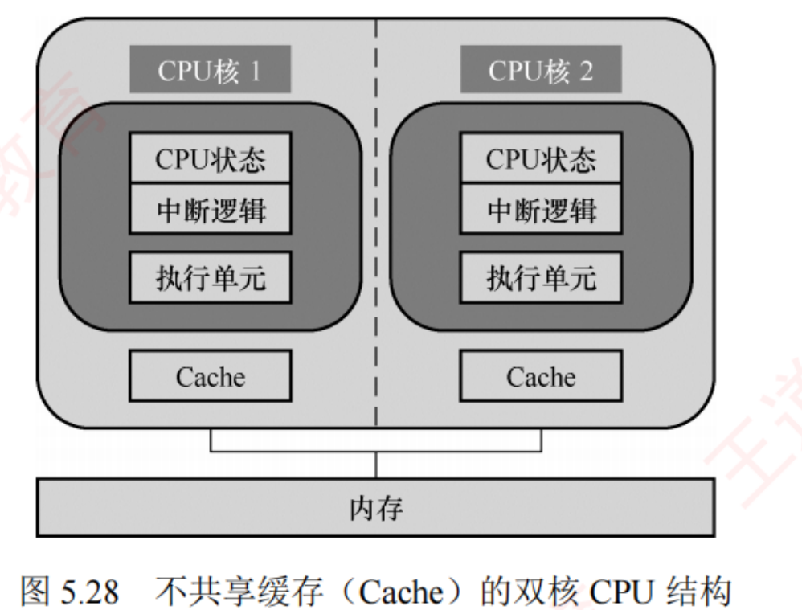
图 5.28（书 p.269） 不共享缓存的双核 CPU 结构 。CPU 核 1 与核 2 各含【CPU 状态 · 中断逻辑 · 执行单元】以及各自私有的 Cache ，下方是共享的内存 。⚠️ 注意这张图与正文有出入，别混 ：图 5.28 画的是一种简化结构，各核仅有私有缓存、不共享任何缓存层级 ；而正文说的是现代多核"共享 L3" 。两种都是合法的多核结构，看题干说的是哪一种。
我的补讲 · 书上那个"滚石头"的例子，是区分三种并行的最快方式 （值得原样背下来）
题设 ：要把
四块石头 滚到马路对面，滚动每块石头需
1 分钟 。
处理器 怎么干 用时 并行类型 串行处理器（单核） 一块一块地滚 4 分钟 无 双核处理器 相当于两名工人，每人负责两块 2 分钟 任务级并行 向量处理器 用一根长木板同时推动四块石头 1 分钟 数据级并行
潜台词是 ：
三者的差别不在"用了几个人"，而在"每个人在干的是不是同一件事" ——
・
多核 ：两个工人可以
干完全不同的活 （一个滚石头一个搬砖），所以是
MIMD / 任务级并行 ；
・
向量处理器 ：那块木板
对四块石头施加的是完全相同的操作 ，一条指令管四份数据，所以是
SIMD / 数据级并行 。
所以能考 Z ：
"能不能对不同数据做不同的事"就是 SIMD 与 MIMD 的分界线 。
这也解释了为什么
SIMD 遇到条件分支就废 ——
木板没法只推其中两块石头。
⚠️
另一条要记 ：
多核要发挥作用，必须采用多线程（或多进程）模型 ，确保每个核都有可执行的线程；
单核 + 细粒度/粗粒度多线程只是时间交错，任一时刻仅一个线程在跑；只有 SMT 才能在单核上并发执行多线程的指令。
我的补讲 · 「双核 vs 超线程」的三条区别 （第 07、08 两题，最容易被广告词误导的一组概念）
双核 CPU 超线程 CPU（SMT） 物理内核数 2 个 1 个 （只是维护两套线程状态部件）执行资源 各自独立 （各有 ALU、私有 Cache）共享 （ALU、Cache 都是两个逻辑核共用）会不会争抢资源 较少 会 （这正是它只提升 10%～30% 而非 100% 的原因）共同点 都能"同时执行两个运算" ⟸ 第 07 题的答案 B
所以能考 Z ：第 07 题问共同点，
A「都有两个内核」❌、C「都包含两个 CPU」❌、D「都不会争抢资源」❌ ，
只有 B 对 。
⚠️
第 06 题的四个选项全是关于超线程的误解 ，逐条记住：
A「四核变八核」❌ （只是 OS 看到 8 个逻辑处理器）；
B「与操作系统和应用软件无关」❌ （
需要 OS 支持调度、软件有并行度 ）；
C「需要芯片组支持才能发挥优势」✅ 就是答案 ；
D「每个模拟出的核都有独立资源、互不干扰」❌ （
资源是共享的 ）。
我的补讲 · 「多核系统必须配多线程才有用」——一句容易被跳过但会考的话
书上说 ：在多核系统中，要充分发挥硬件的并行计算能力，必须采用多线程（或多进程）模型，确保每个核在运行时均有可执行的线程 。潜台词是 ：硬件的并行度不会自动变成程序的加速 ——一个单线程程序放到 8 核机器上，仍然只用 1 个核，快不了一点 。
这也是第 06 题 B 项「超线程与操作系统和应用软件无关」为什么错的根本原因 。所以能考 Z ：书上紧接着做了一组三方对照，值得整段记 ——多核 ：每个核独立运行一个线程，多线程在物理上同时执行，是真正的并行 ；单核 + 细粒度/粗粒度多线程 ：多个线程以时间交错方式执行，任一时刻仅有一个线程处于运行状态 （是并发，不是并行 ）；单核 + SMT ：可在单个核上并发执行来自不同线程的多条指令 （介于两者之间 ）。"并发 vs 并行"这组词在《操作系统》里是开篇第一课 ——这里给了它最清楚的硬件例子。
5.7.4 共享内存多处理器（SMP）
📄 p.269
必记结论 · SMP 的定义与两类（UMA / NUMA）
定义 ：具有
共享单一物理地址空间 的多处理器系统称为
共享内存多处理器 SMP 。所有 CPU 均可通过
常规访存指令 访问内存任意位置，并
通过读/写共享变量通信 。
⚠️
注意 ：
物理地址空间统一，但各 CPU 仍可在各自独立的虚拟地址空间中运行程序 ——
操作系统负责把虚拟地址映射到统一的物理地址空间 。
UMA 统一存储访问 NUMA 非统一存储访问 访问延迟 所有 CPU 访问任意存储单元的延迟基本相同 ，与发起请求的 CPU 及目标地址无关延迟取决于请求 CPU 与目标内存的物理位置关系 内存组织 统一的一块 主存划分为多个区域，分别连接到不同的 CPU （本地内存 vs 远程内存）性能特点 简单，但总线易成瓶颈 访问本地内存显著快于远程内存 ⟹ 程序性能对数据布局敏感
必记结论 · ⭐ SMP 必须解决的两个一致性问题 （2022 真题与 OS 的接合点 ）
① 同步机制 ：多个 CPU 可能同时访问同一共享变量，必须引入同步机制保证操作的原子性与数据一致性 ——否则可能读到另一 CPU 更新过程中的中间值。
常用方法是对共享变量加互斥锁：任一时刻仅允许一个 CPU 持有该锁 。② Cache 一致性 ：第 3 章讨论的 Cache 一致性针对的是单处理器中 Cache 与主存的同步 ；
而在 SMP 中，多个 CPU 的 Cache 可能同时缓存同一物理地址的副本 ，因此要求更严格——任意时刻所有 CPU 对该地址的 Cache 副本必须保持一致 。
这由硬件一致性协议保障：及时传播写操作，或无效化其他 CPU 中的副本。
知识串联 · SMP 的两个一致性问题，一个连回 ch3，一个连到操作系统 ——书上原文点名要回看第 3 章
ch3 3.5 Cache 写策略（全写法 / 写回法、写分配 / 非写分配） 解决的是「一个 Cache 与主存 」的一致性；
SMP 的 Cache 一致性协议 解决的是「多个 Cache 之间 」的一致性——后者是前者的升级版，手段也升级为"写传播 / 副本无效化" 。跨科 · 操作系统 互斥锁、临界区、原子操作 ——OS 那一章讲的"进程同步"，硬件基础就在这里 ；
而 5.5 讲的"关中断保证原子性"是单处理器上的原始手段，到了多处理器就不够用了 （关本核的中断挡不住别的核），必须靠硬件提供的原子指令与锁 。跨科 · 操作系统 「物理地址空间统一、虚拟地址空间各自独立，由 OS 做映射」 ——这正是 OS 内存管理那一章的核心命题在多处理器下的表述 。5.6 SMT / 超标量 / 乱序执行 是 SMP 单个核内部的技术；SMP 讲的是核与核之间 。两者是"核内"与"核间"两个尺度，别混。 2022 真题考的多核，就落在这一片交叉地带；它是本节唯一一道真题，也是整节最值得看的那几行。
背景 · 考试不碰
5.7.4 里那段历史脉络 ——早期系统的北桥架构 （内存控制器在北桥芯片、CPU 通过前端总线 FSB 访问内存）、
多 CPU 争用 FSB 成为瓶颈、于是把内存控制器集成进各 CPU 内部形成 NUMA、CPU 之间用 Intel QPI 之类的高速互连——
统考从未考过任何一个具体的芯片组或总线名称 。只需要记住结论：NUMA 的出现是为了摆脱前端总线瓶颈，代价是本地/远程内存延迟不一致。 MISD 这一类，书上自己都写着"几乎没有实际应用" ——只要能在四选一里认出它的名字就够了，不必想它长什么样。
知识串联 · 本章的六根跨科枢纽，逐根点名收尾 （对照 408 全书的枢纽清单自检）
枢纽 · 局部性原理 5.6 动态分支预测 （按转移历史预测）↔ ch3 Cache / 预取 / 磁盘预读 ↔ OS 页面置换 。枢纽 · 中断 5.5 异常与中断的检测与响应 ↔ ch7 I/O 的程序中断方式 ↔ OS 的中断处理与进程切换 。枢纽 · 分块与映射 5.4 微指令的字段划分 （互斥/相容分组）↔ ch4 扩展操作码 ↔ ch3 Cache 组相联 / 页表 ——全是"把编码空间切块，每块留出扩展余地" 。枢纽 · 队列与调度 5.6 流水线的按序流动与队首阻塞 ↔ OS 进程调度 / 磁盘调度 。枢纽 · 空间换时间 5.3 的暂存器 Y/Z、5.6 的流水段寄存器、5.6 的转发通路 ↔ ch3 的 TLB / 快表 ↔ 数据结构的标记数组与 DP 表 。枢纽 · 并行的三个层次 5.6 指令级并行（流水线、超标量） → 5.7.2 线程级并行（SMT） → 5.7.3 任务级并行（多核） → 5.7.1 数据级并行（SIMD） ——四个层次可以叠加使用，现代 CPU 四个全有 。复习到本章末尾时，用这六根线回头串一遍整章，比从头再读一遍正文有效得多。
5.8 本章小结：四个思考题的答案
📄 p.272
必记结论 · ① 指令和数据都在内存里，计算机怎么从时间和空间上区分它们？
时间上 ：取指发生在取指阶段，取操作数发生在执行阶段 ——靠 CPU 当前处于指令周期的哪个阶段来区分 。空间上 ：取指阶段读出的内容锁存到指令寄存器 IR 供译码 ；执行阶段读出的内容写入通用寄存器并送 ALU 运算 。区分并不由内存决定，而由 CPU 的控制信号在特定时序下引导其流向不同寄存器来实现。 （与 5.2 的 2009 真题「CPU 区分指令与数据的依据是指令周期的不同阶段」完全对应——问"如何区分"答时间，问"取到哪儿"答空间 。）
必记结论 · ② 什么是指令周期和时钟周期？关系如何？
指令周期 = CPU 从内存取指并完成执行所需的全部时间 ；时钟周期 = 主时钟的一个节拍，是 CPU 操作最基本的时序单位 。关系取决于处理器结构 ：单周期 CPU 中指令周期恰好等于一个时钟周期 ；多周期 CPU 中它包含多个时钟周期 。
必记结论 · ③ 什么是微指令？它和第 4 章的指令有什么关系？
微命令 是控制单元发出的最基本控制信号 ；一组完成特定微操作的微命令构成一条微指令 ；若干微指令按序排列形成微程序，用以解释并执行一条机器指令 。在微程序控制器中，每条机器指令通常对应一个微程序，而该微程序由多条微指令组成，每条微指令可并行发出多个微命令。
必记结论 · ④ 什么是指令流水线？相对传统体系结构的优势是什么？
定义 ：把指令执行划分为若干有序阶段，让多条指令的各个阶段在时间上重叠执行 ；每阶段由专用功能部件完成，前一条指令进入下一阶段时，后续指令便可进入当前阶段 ，从而实现功能部件的持续利用。优势 ：它并不缩短单条指令的执行延迟，但能显著提升单位时间内完成的指令数（吞吐率） ；
仅需增加少量流水线寄存器等硬件即可获得数倍吞吐率提升 ，因此成为现代处理器广泛采用的并行处理技术。
知识串联 · ⚠️ 「不缩短单条延迟、只提吞吐率」这句话，在本章出现了三次 ——这是我在本页反复指回同一处的原因
5.2.4 第一次 ：三模型对照表里的一行。5.6.2 第二次 ：那个 750ps vs 1000ps 的量化范例，用数字证明了"流水线让单条指令更慢" 。此处 5.8 第三次 ：作为思考题 ④ 的标准答案。它是本章最高频的判断题结论，也是本页「同一结论在三处出现就地互指、不重复讲三遍」这条写法的头号案例。
三处合起来看，你会发现它其实回答的是三个不同的问题：是什么（5.2）、为什么（5.6）、怎么答（5.8）。
知识串联 · 「加硬件不一定更快」——本章第三次遇到同一个反直觉结论
5.3.3 单周期 CPU 硬件冗余大（多份加法器、两个存储器）却性能低 ——因为时钟周期被最慢指令拖死 。5.6.5 / 5.9 流水段不是越多越好 ——段寄存器开销 + 控制逻辑复杂化 + 冒险损失随段数放大 。5.7.2 粗粒度多线程的切换开销大于细粒度 ——因为要清空并重填整条流水线 。跨章 · ch3 Cache 块不是越大越好 （块太大会降低命中率）、相联度不是越高越好 （比较器开销与命中时间上升）——同一种"边际收益递减 + 额外开销"的形状 。408 里凡是"某某越多越好吗"的问题，答案清一色是"不是"，理由清一色是两条：① 附加硬件本身有开销；② 复杂度带来的新瓶颈。
背这两条理由，比背每一个具体结论管用。
我的补讲 · 整章最后的"一句话自检清单" ——考前一晚就看这一块
如果只剩十分钟，把下面十二句念一遍，本章七成的选择题就有着落了：
# 一句话 出处 ① IR = 指令字长 · GPRs = ALU = 机器字长 · PC = MAR = 地址总线宽度 5.1 ② 完全透明的只有 IR / MAR / MDR / 页表基址寄存器；FR 是半透明（可读不可写） 5.1 ③ 无条件转移指令的 PC 被改 2 次（取指自增 1 次 + 执行改 1 次） 5.2 ④ 区分指令与数据靠"指令周期的不同阶段"，不是靠译码结果 5.2 ⑤ 单周期不能用单总线；单周期必须指令/数据存储器分离；单周期没有 IR 5.3 ⑥ 单总线一发多收；ALU 要 Y（输入）和 Z（输出）两个暂存器 5.3 ⑦ 取指周期 = 1 + N + 1 = N + 2 拍（N 为访存周期数） 5.3 ⑧ 字段直接编码：位数 = Σ⌈log₂(组内微命令数 + 1)⌉，那个 +1 是"本字段无操作" 5.4 ⑨ 硬布线快改不动（RISC 用）；微程序慢好扩（CISC 用）；CM 在 CPU 内、是 ROM、按微地址访问 5.4 ⑩ 故障退回重做，自陷与中断都往下走，终止直接不走了 5.5 ⑪ 转发治得了相邻运算类，治不了 load-use（至少停 1 拍）；beq 到 MEM 段才定 ⟹ 控制冒险 3 拍 5.6 ⑫ 流水线不缩短单条延迟，只提吞吐率；CPI：单周期 1、多周期 >1、流水线 1、超标量 <1 5.2 / 5.6
另外把三个"必算"的公式写在手上 ：
Tk = (k+n−1)Δt ·
微指令字长 = 操作控制 + 判别测试 + 后继地址 ·
CM 容量 = 微指令条数（补到 2 的幂）× 字长 。
知识串联 · Cache 一致性：ch3 讲了一半，5.7 讲了另一半
ch3 3.5 单处理器的一致性 ：Cache 与主存之间的同步——全写法（写直达） 与写回法 ，配写分配 / 非写分配 。要解决的是"Cache 改了，主存没改"。 此处 5.7.4 多处理器的一致性 ：多个 CPU 的 Cache 可能同时缓存同一物理地址的副本 ，要求任意时刻所有副本保持一致 。要解决的是"我的 Cache 改了，别人的 Cache 还是旧的"。 手段升级 由硬件一致性协议保障：及时传播写操作，或无效化其他 CPU 中的副本。 书上原文点名 「第 3 章讨论的 Cache 一致性主要针对单处理器系统……而在 SMP 系统中，其 Cache 一致性要求更为严格」 ——教材自己让你回看 ch3 。跨科 · 操作系统 与之配套的是"共享变量要加互斥锁" ——硬件保证副本一致，软件保证操作原子；两者缺一不可。 一句话：ch3 的一致性是"纵向的"（Cache 与主存之间），5.7 的一致性是"横向的"（Cache 与 Cache 之间）。
知识串联 · 本章与后面三章的接口，提前打个招呼
→ ch6 总线 5.3 的"片内总线"与 ch6 的"系统总线"是两个层次 ；5.3 的"一发多收"到 ch6 变成总线仲裁 ；5.1 图 5.1 右侧那三条竖线（地址/数据/控制总线）就是 ch6 的主角 。→ ch7 I/O 5.5 的中断分类（可屏蔽/不可屏蔽、向量/非向量、单重/多重）会在 ch7 的"程序中断方式"里被完整重讲，并补上优先级排队与中断屏蔽字 ；
5.5 提到的"DMA 传送结束属于外中断"，DMA 本身是 ch7 的内容 。→ 操作系统 5.5 的异常与中断响应 ↔ OS 的中断处理与进程切换 ；5.7 的 SMP 与互斥锁 ↔ OS 的进程同步 ；5.6 的缺页故障 ↔ OS 的请求分页 。ch5 是全书的"轴心章" ：它向前吃掉 ch1–ch4（性能指标、运算、存储、指令），向后喂给 ch6–ch7（总线、I/O），向外接住整门《操作系统》。
这也是王道在复习提示里写"本章是本书的难点"的真正原因——难不在某个知识点，而在它连接的东西太多。
我的补讲 · 四个思考题的答法，其实是四种题型的模板 （回答 5.8 的四问时按这个格式写）
这四问看着像"背诵题"，但它们各自示范了一种答题格式，考场上写主观题时可以直接套：
思考题 题型 答题格式 ① 如何区分指令与数据 机制说明题 分两个维度答 （时间上 / 空间上），每个维度一句话 + 一个例子 ② 指令周期与时钟周期的关系 概念辨析题 先各给一句定义，再说关系，最后分情况 （单周期相等 / 多周期包含）③ 微指令与指令的关系 层次关系题 自下而上串一遍 ：微命令 → 微指令 → 微程序 → 机器指令，并给出数量对应 ④ 流水线及其优势 技术评价题 先定义（做什么），再说优势（提吞吐），必须补一句"不缩短单条延迟" ，最后说代价
潜台词是 ：
主观题的分不在"写得多"，而在"分层次、有对照、含限定" 。
第 ④ 问那句"并不缩短单条指令的执行延迟"就是典型的限定语——不写它，答案就不完整。
所以能考 Z ：
组原的综合题虽然以计算为主，但每道题几乎都有一两问是"简述/说明理由"
（2015 综 08 的第 1、3、6 问，2022 综 10 的第 2、5 问，2014 综 02 的全部四问都要"说明理由"）——
那些问就按上面四种格式答，比想到什么写什么稳得多。
知识串联 · 三种相关（RAW / WAR / WAW）在数据结构里也有对应物
RAW 写后读 后面要读的值，前面还没写好 ↔ 并发编程里的"读到脏数据" ↔ 数据结构里"用了还没初始化的变量" 。WAR 读后写 前面还没读完，后面就把它改了 ↔ 遍历链表时删除当前节点 （经典 bug：先 free 再 p = p→next）。WAW 写后写 两次写的先后颠倒，最终值错 ↔ 多线程同时写同一变量而没加锁 。共同的解法思路 硬件用"寄存器重命名"消除 WAR/WAW ；软件用"多开一个临时变量"避免同名冲突 ——本质都是"把伪相关改名改掉" 。
真正无法消除的只有 RAW，因为那是真 的数据依赖 。记法：RAW 是"真相关"（数据确实要传），WAR 与 WAW 是"名字相关"（只是恰好用了同一个寄存器）。
真相关只能等，名字相关可以改名绕开。
5.9 常见问题和易混淆知识点
📄 p.273
必记结论 · 问题 1：是否流水段越多，指令执行越快？ ——答案是"并非如此"，两条理由
① 硬件与延迟的代价 ：流水段增加会引入更多流水线寄存器，其延迟限制了时钟周期的进一步缩短 ；
同时段数增多也导致单条指令从进入到流出所需的时钟周期数增加 ；
此外存在数据或控制冒险时需要插入停顿，段数越多、潜在的性能损失越显著 。② 控制逻辑的代价 ：用于处理结构冲突、数据冒险和控制转移的控制逻辑急剧复杂化 ，不仅增加硬件开销，还可能成为新的性能瓶颈 。与 5.6 选 16 的错误项「流水段个数应无限制地增加」完全对应 ；也与选 14 的说法 ⑤「段数越多控制冒险损失越小」相反 ——段数越多，转移结果确定前取进来的错误指令就越多。
必记结论 · ⭐ 问题 2：WAR 与 WAW 相关 ——必须与 5.6 的「只可能 RAW」成对记忆
大前提 ：
在非按序执行（乱序）的流水线中 ，由于允许后进入的指令超越先进入的指令先完成，
不仅可能 RAW，也可能 WAR 和 WAW 。
而统考只考查过「按序发射、按序完成」，那种情况下只可能出现 RAW。
类型 定义 范例 识别特征 WAR 当前指令需先读该寄存器，后续指令才能写它 ；若顺序颠倒（写在读之前），当前指令会读到错误的新值 I1 add R3,R1,R2I2 sub R1,R4,R5I2 的目的操作数是 I1 的源操作数 WAW 当前指令应先写、后续指令再写同一寄存器 ；若顺序颠倒，寄存器最终值将违背程序语义 I1 add R1,R2,R3I2 sub R1,R4,R5I2 与 I1 的目的操作数相同
⚠️
5.6 选 18 的 C 项、2016 真题的 I2/I4（同写 R5）都是拿 WAW 当干扰项 ——
按序流动下它们不会出问题，一律排除。
我的补讲 · 三种相关的名字怎么记不混 ——名字里的顺序是"程序里本该的顺序"，不是"出错时的顺序"
三个名字都是「X 后 Y」的格式，很多人第一次看会记反。 记法 ：「X 后 Y」里的 X 是前一条指令 做的事，Y 是后一条指令 做的事 ——它描述的是程序里本该发生的正确顺序 。RAW（写后读） ：前面写、后面读 ——本该先写再读，流水线里后面的读跑到前面去了 ⟹ 读到旧值。WAR（读后写） ：前面读、后面写 ——本该先读再写，乱序时后面的写跑到前面去了 ⟹ 前面读到新值。WAW（写后写） ：前面写、后面写 ——本该后写的赢，乱序时先写的反而最后落地 ⟹ 最终值错。所以能考 Z ：按序发射按序完成 ⟹ "后面的指令绝不可能先完成" ⟹ WAR 和 WAW 天然不会出问题，只剩 RAW 。
这一句推理就是排除干扰项的全部依据，不用背清单。
知识串联 · 读完本章，把这一页当作 ch6 / ch7 / 《操作系统》的入口
→ ch6 总线 5.3 的片内总线"一发多收" ，到 ch6 变成系统总线的仲裁协议 ；图 5.1 右侧那三条竖线就是 ch6 的主角。→ ch7 I/O 5.5 的中断三组二分法 会被完整重讲，并补上优先级排队与中断屏蔽字 ；DMA 传送结束属于外中断 这句话里的 DMA 就是 ch7 的内容。→ 操作系统 5.5 异常响应 ↔ 中断处理与进程切换 ；5.6 缺页故障 ↔ 请求分页 ；5.7 SMP 与互斥锁 ↔ 进程同步 ；5.7 并发 vs 并行 ↔ OS 的开篇概念 。→ 回看前四章 本章几乎每一节都在兑现前四章的某个承诺 ：ch1 的性能公式、ch2 的 ALU 与标志位、ch3 的存储层次与 Cache、ch4 的指令格式与寻址方式。如果你读完本章觉得"哪一节特别吃力"，八成不是本章没读懂，而是它对应的前置章节没扎实。按上面这张对应表回去补，比重读本章有效。